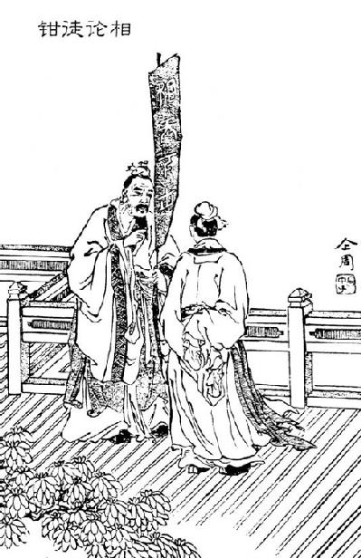

卷一百十 匈奴列传第五十
匈奴，其先祖夏后氏之苗裔也，曰淳维。唐虞以上有山戎、猃狁、荤粥，居于北蛮，随畜牧而转移。其畜之所多则马、牛、羊，其奇畜则橐驼、驴、骡、駃騠、騊駼【騊駼：似马而青。】 、驒騱。逐水草迁徙，毋城郭常处耕田之业，然亦各有分地。毋文书，以言语为约束。儿能骑羊，引弓射鸟鼠；少长则射狐兔：用为食。士力能毌弓【士力能毌弓：凡是能拉弓的成年男人。毌弓，弯弓，拉弓。】 ，尽为甲骑。其俗，宽则随畜，因射猎禽兽为生业，急则人习战攻以侵伐，其天性也。其长兵则弓矢，短兵则刀鋋【鋋：铁柄短矛。】 。利则进，不利则退，不羞遁走。苟利所在，不知礼义。自君王以下，咸食畜肉，衣其皮革，被【被：披。】 旃裘。壮者食肥美，老者食其余。贵壮健，贱老弱。父死，妻其后母；兄弟死，皆取其妻妻之。其俗有名不讳，而无姓字。
匈奴，祖先是夏后氏的后裔，名叫淳维。尧、舜之前有山戎、猃狁、荤粥，居住在北边的蛮荒地带，随着畜牧活动而转移。他们放牧的牲畜大多是马、牛、羊，一些奇特的牲畜则是骆驼、驴、骡、駃騠、騊駼、驒騱。追逐着水草而迁徙，没有用来定居的城镇，也没有作为产业的农耕，然而也各自有分占的牧场。没有文字和书籍，用语言来相互约束。小孩能骑羊，拉弓射鸟、鼠等小动物；稍大一些就能射狐狸、兔子：用这些猎物作为食物。成年男子能拉满弓的，都是披甲的骑兵。他们的风俗是，平时随意游牧，顺便射猎禽兽作为维持生计的产业，遇到紧急情况就人人习练攻伐作战本领来侵扰征伐，这是他们的天性。他们远距离进攻的兵器是弓箭，近距离进攻的兵器是刀矛。有利就进攻，不利就撤退，不把逃跑当作耻辱。如果有利可图，就不顾礼义。从君王以下，都吃牲畜的肉，穿牲畜的皮革，披着带毛的皮衣。强壮的人吃肥美的食物，年老的人吃他们剩下的东西。人们尊敬健壮者，轻视老弱者。父亲去世，儿子就娶庶母为妻；兄弟去世，活着的兄弟就娶他的妻子为妻。他们的风俗是有名而且直言不讳，但没有姓和字。
夏道衰，而公刘失其稷官，变于西戎，邑于豳。其后三百有余岁，戎狄攻大王亶父，亶父亡走岐下，而豳人悉从亶父而邑焉，作周。其后百有余岁，周西伯昌伐畎夷氏。后十有余年，武王伐纣而营雒邑，复居于酆鄗，放逐戎夷泾、洛之北，以时入贡，命曰“荒服”。其后二百有余年，周道衰，而穆王伐犬戎，得四白狼四白鹿以归。自是之后，荒服不至。于是周遂作《甫刑》之辟。穆王之后二百有余年，周幽王用宠姬褒姒之故，与申侯有却。申侯怒而与犬戎共攻杀周幽王于骊山之下，遂取周之焦获，而居于泾渭之间，侵暴中国。秦襄公救周，于是周平王去酆鄗而东徙雒邑。当是之时，秦襄公伐戎至岐，始列为诸侯。是后六十有五年，而山戎越燕而伐齐，齐公与战于齐郊。其后四十四年，而山戎伐燕。燕告急于齐，齐桓公北伐山戎，山戎走。其后二十有余年，而戎狄至雒邑，伐周襄王，襄王奔于郑之氾邑。初，周襄王欲伐郑，故娶戎狄女为后，与戎狄兵共伐郑。已而黜【黜：废黜。】 狄后，狄后怨，而襄王后母曰惠后，有子子带，欲立之，于是惠后与狄后、子带为内应，开戎狄，戎狄以故得入，破逐周襄王，而立子带为天子。于是戎狄或居于陆浑，东至于卫，侵盗暴虐中国。中国疾之，故诗人歌之曰“戎狄是应”，“薄【薄：语首助动词。】 伐猃狁，至于大原”，“出舆彭彭【彭彭：车马繁盛的样子。】 ，城彼朔方”。周襄王既居外四年，乃使使告急于晋。晋文公初立，欲修霸业，乃兴师伐逐戎翟，诛子带，迎内【内：同“纳”。】 周襄王，居于雒邑。
夏朝气数衰败，公刘失去了他掌管农业的官职，在西戎改变风俗，就在豳地建造城邑。此后三百多年，西戎北狄进攻周太王亶父，亶父逃亡到岐山下，而豳地的人都跟从亶父来到这里修筑城邑，创建了周国。此后一百多年，周西伯昌征讨畎夷氏。此后十多年，周武王征讨商纣王并营建了雒邑，又回到酆、鄗两京居住，把西戎东夷驱逐到泾水、洛水以北，让他们按时来进贡，称之为“荒服”。此后二百多年，周朝气数衰败，然而周穆王征伐犬戎，得到四只白狼、四只白鹿回来。从此以后，荒服之国的人就不来进贡了。于是周王室就制定了《甫刑》的法规。周穆王以后二百多年，周幽王因为宠姬褒姒的原因，与申侯结怨。申侯气愤之下与犬戎联合进攻并把周幽王杀死在骊山脚下，犬戎就占据了周朝的焦获地区，居住在泾水、渭水流域，不时会侵犯中原地区。秦襄公救援周王室，于是周平王离开酆、鄗两京，并且向东迁都到雒邑。在这个时候，秦襄公征伐犬戎一直打到岐山，开始被封为诸侯。此后六十五年，山戎越过燕国攻打齐国，齐厘公与山戎在齐国郊外开战。此后四十四年，山戎攻打燕国。燕国向齐国求救，齐桓公北上讨伐山戎，山戎逃跑了。此后二十多年，戎狄来到雒邑，进攻周襄王，襄王跑到郑国的氾邑。最开始，周襄王想要攻打郑国，所以娶了戎狄君主的女儿为王后，和戎狄军队一同攻打郑国。不久他就废黜了狄后，狄后心有怨恨，周襄王的庶母叫惠后，有个儿子叫子带，想要立他为王，于是惠后与狄后、子带作为内应，打开城门迎接戎狄军队，戎狄因此得以攻入雒邑，打败并驱逐了周襄王，从而立子带为周天子。于是戎狄有些部落居住在陆浑，势力向东到达卫国，侵犯残害中原人民。中原人民痛恨他们，所以诗人写道“打击戎狄”，“征伐猃狁，到达太原”，“出动车马，筑城北方”。周襄王已经在外居住了四年，就派使者向晋国求救。晋文公刚即位，想要创建霸业，于是出兵讨伐并赶走戎狄军队，杀死子带，迎接周襄王回国，居住在雒邑。
当是之时，秦晋为强国。晋文公攘【攘：驱逐。】 戎翟【翟：同“狄”。】 ，居于河西圁、洛之间，号曰赤翟、白翟。秦穆公得由余，西戎八国服于秦，故自陇以西有绵诸、绲戎、翟、 之戎，岐、梁山、泾、漆之北有义渠、大荔、乌氏、朐衍之戎。而晋北有林胡、楼烦之戎，燕北有东胡、山戎。各分散居谿谷，自有君长，往往而聚者百有余戎，然莫能相一【相一：相互统一。】 。
这个时候，秦国、晋国都是强国。晋文公驱逐了戎狄，戎狄迁居于河西的圁水、洛水流域，称为赤狄、白狄。秦穆公得到由余，西戎的八个国家都臣服于秦国，所以陇西有绵诸、绲戎、狄、 等戎族部落，岐山、梁山、泾水、漆水以北有义渠、大荔、乌氏、朐衍等戎族部落。而晋国北方有林胡、楼烦等戎族部落，燕国北方有东胡、山戎。各部落分散居住在溪谷地区，各自有君主首领，经常聚集在一起的有一百多个戎族部落，然而没有相互统一。
自是之后百有余年，晋悼公使魏绛和戎翟，戎翟朝晋。后百有余年，赵襄子逾句注而破并代以临胡貉。其后既与韩魏共灭智伯，分晋地而有之，则赵有代、句注之北，魏有河西、上郡，以与戎界边。其后义渠之戎筑城郭以自守，而秦稍蚕食，至于惠王，遂拔义渠二十五城。惠王击魏，魏尽入西河及上郡于秦。秦昭王时，义渠戎王与宣太后乱，有二子。宣太后诈而杀义渠戎王于甘泉，遂起兵伐残义渠。于是秦有陇西、北地、上郡，筑长城以拒胡。而赵武灵王亦变俗胡服，习骑射，北破林胡、楼烦。筑长城，自代并阴山下，至高阙为塞。而置云中、雁门、代郡。其后燕有贤将秦开，为质于胡，胡甚信之。归而袭破走东胡，东胡却千余里。与荆轲刺秦王秦舞阳者，开之孙也。燕亦筑长城，自造阳至襄平。置上谷、渔阳、右北平、辽西、辽东郡以拒胡。当是之时，冠带【冠带：原指戴帽、束带等，这里指文明礼俗。】 战国七，而三国边于匈奴。其后赵将李牧时，匈奴不敢入赵边。后秦灭六国，而始皇帝使蒙恬将十万之众北击胡，悉收河南地。因河为塞，筑四十四县城临河，徙适戍以充之。而通直道，自九原至云阳，因边山险壍谿谷可缮【缮：修缮，修整。】 者治之，起临洮至辽东万余里。又度河据阳山北假中。
当是之时，东胡强而月氏盛。匈奴单于曰头曼，头曼不胜秦，北徙。十余年而蒙恬死，诸侯畔秦，中国扰乱，诸秦所徙适【适：通“谪”。】 戍边者皆复去，于是匈奴得宽，复稍度河南与中国界于故塞。
此后一百多年，晋悼公派魏绛去缓和与戎狄的关系，戎狄向晋国称臣。此后一百多年，赵襄子翻越句注山，打败进而吞并了代地，逼近胡貉部落。后来，赵襄子和韩、魏两家共同消灭了智伯，瓜分晋国并占领了这些地区，其中赵氏占有代地、句注山以北的地区，魏氏占有河西、上郡，因此与戎族部落相接。此后义渠戎修筑城墙来保卫自己，而秦国逐渐蚕食他们，到秦惠王在位时，就攻克了义渠国的二十五座城。秦惠王攻打魏国，魏国西河以及上郡全部献给了秦国。秦昭王在位时，义渠王和宣太后淫乱，生下两个儿子。宣太后用欺骗的手段在甘泉宫杀死了义渠戎王，于是发兵攻打并消灭了义渠国。于是秦国占领了陇西、北地、上郡，修筑了长城来抗拒胡人。而赵武灵王也改变风俗穿着胡人的服装，练习骑马、射箭，向北攻破了林胡、楼烦。修筑长城，从代地沿阴山一线修下去，一直到高阙，创建起要塞。并且设置了云中郡、雁门郡、代郡。此后燕国有一位贤能的将领秦开，在胡人那里当人质，胡人十分信任他。他回来后打败并赶走了东胡，东胡后撤了一千多里。与荆坷一起刺杀秦王的秦舞阳，就是秦开的孙子。燕国也修筑长城，从造阳修到襄平。设置上谷郡、渔阳郡、右北平郡、辽西郡、辽东郡来抗拒胡人。这个时候，文明衣冠之国有七个，其中三个国家与匈奴接壤。此后李牧担任赵国将军时，匈奴不敢进犯赵国的边界。后来秦国灭亡了六国，秦始皇就派蒙恬率领十万大军向北进攻匈奴，全部收复了河套以南的地区。沿着黄河创建要塞，靠近黄河修建四十四座县城，迁徙因犯罪被罚戍守边疆的人去充实那里。又铺设了直道，从九原一直通到云阳，利用边界的山岭、险要的沟堑、溪流、谷地等可以修缮的地形来修筑长城，长城起于临洮直到辽东，达一万多里。又渡过黄河，占据了阳山、北假地区。
这个时候，东胡势力强大，而月氏也开始兴盛。匈奴单于名叫头曼，头曼打不过秦朝，就向北迁徙。十多年后蒙恬死了，诸侯背叛了秦朝，中原形势纷乱，那些秦朝调派去戍守边境的刑徒又都离去了，于是匈奴的活动范围变大了，再次逐渐吞并了河套以南地区，与中原原来的边塞接壤。
单于有太子名冒顿。后有所爱阏氏，生少子，而单于欲废冒顿而立少子，乃使冒顿质于月氏。冒顿既质于月氏，而头曼急击月氏。月氏欲杀冒顿，冒顿盗其善马，骑之亡归。头曼以为壮，令将万骑。冒顿乃作为鸣镝【鸣镝：带响的箭，多用于发号令。】 ，习勒【习勒：训练。】 其骑射，令曰：“鸣镝所射而不悉射者，斩之。”行猎鸟兽，有不射鸣镝所射者，辄斩之。已而冒顿以鸣镝自射其善马，左右或不敢射者，冒顿立斩不射善马者。居顷之，复以鸣镝自射其爱妻，左右或颇恐，不敢射，冒顿又复斩之。居顷之，冒顿出猎，以鸣镝射单于善马，左右皆射之。于是冒顿知其左右皆可用。从其父单于头曼猎，以鸣镝射头曼，其左右亦皆随鸣镝而射杀单于头曼，遂尽诛其后母与弟及大臣不听从者。冒顿自立为单于。
单于有个太子名叫冒顿。后来有个宠爱的阏氏，生了个小儿子，单于就想废掉冒顿而改立小儿子为太子，于是派冒顿到月氏当人质。冒顿到月氏做人质以后，头曼就加紧攻打月氏。月氏人想要杀死冒顿，冒顿就偷了他们的好马，骑着逃回来了。头曼认为他很勇勐，就命令他统领一万名骑兵。冒顿制造了响箭，训练将士骑马、射箭，下令说：“凡是我的响箭所射的目标，如果谁不跟着我全力去射击，就斩首。”出行射猎鸟兽，有人不射响箭所射之处，马上就被斩杀。不久冒顿就用响箭射自己的好马，左右侍从有的不敢射，冒顿立即斩杀了这些人。不久之后，冒顿又用响箭射自己所宠爱的妻子，左右侍从有的非常害怕，不敢射，冒顿又再次斩杀了他们。不久之后，冒顿出去打猎，用响箭射单于的好马，左右侍从都跟着射。于是冒顿知道他的侍从都可以任意驱使了。他跟着父亲单于头曼打猎，用响箭射向头曼，他的侍从也都跟着响箭射死了单于头曼，于是他将庶母和弟弟以及不服从自己的大臣全部诛杀。冒顿自立为单于。
凌稚隆：“匈奴自冒顿而始盛，又自白登一围，而汉与匈奴遂祸结而不可解矣。”
冒顿既立，是时东胡强盛，闻冒顿杀父自立，乃使使谓冒顿，欲得头曼时有千里马。冒顿问群臣，群臣皆曰：“千里马，匈奴宝马也，勿与。”冒顿曰：“奈何与人邻国而爱一马乎？”遂与之千里马。居顷之，东胡以为冒顿畏之，乃使使谓冒顿，欲得单于一阏氏。冒顿复问左右，左右皆怒曰：“东胡无道，乃求阏氏！请击之。”冒顿曰：“奈何与人邻国爱一女子乎？”遂取所爱阏氏予东胡。东胡王愈益骄，西侵。与匈奴间，中有弃地，莫居，千余里，各居其边为瓯脱【瓯脱：立于边界的土堡岗哨。】
。东胡使使谓冒顿曰：“匈奴所与我界瓯脱外弃地，匈奴非能至也，吾欲有之。”冒顿问群臣，群臣或曰：“此弃地，予之亦可，勿予亦可。”于是冒顿大怒曰：“地者，国之本也，奈何予之！”诸言予之者，皆斩之。冒顿上马，令国中有后者斩，遂东袭击东胡。东胡初轻冒顿，不为备。及冒顿以兵至，击，大破灭东胡王，而虏其民人及畜产。既归，西击走月氏，南并楼烦、白羊河南王。悉复收秦所使蒙恬所夺匈奴地者，与汉关故河南塞，至朝 、肤施，遂侵燕、代。是时汉兵与项羽相距，中国罢【罢：通“疲”，拖累。】
于兵革，以故冒顿得自强，控弦之士三十余万。
、肤施，遂侵燕、代。是时汉兵与项羽相距，中国罢【罢：通“疲”，拖累。】
于兵革，以故冒顿得自强，控弦之士三十余万。
冒顿即位后，当时东胡强盛，听说冒顿杀死父亲自立为单于，于是派使者对冒顿说，想要得到头曼在位时拥有的千里马。冒顿问大臣们，大臣们都说：“千里马，匈奴的宝马，不要给他们。”冒顿说：“怎么与别人的国家为邻却吝惜一匹马呢？”就把千里马送给东胡了。不久之后，东胡以为冒顿畏惧自己，于是派使者对冒顿说，想要得到单于的一个阏氏。冒顿再次询问身边的人，身边的人都愤怒地说：“东胡不讲道义，竟然索求阏氏！请求攻打他们。”冒顿说：“怎么与别人的国家为邻却吝惜一个女人呢？”就拿自己所宠爱的阏氏送给了东胡。东胡王越来越骄横，开始向西侵犯。东胡与匈奴有间隔，中间有被废弃的土地，没人居住，方圆一千多里，双方各自在这片地区的两边修建土堡岗哨。东胡派使者对冒顿说：“匈奴和我们交界的哨所外面的空地，你们匈奴不能去那里，我们想占领这个地方。”冒顿问大臣们，大臣们有人说：“这是废弃的空地，给他们也行，不给他们也行。”于是冒顿非常生气地说：“土地，是国家的根本，怎么能够给他们呢！”所有说给土地的人，都被斩首。冒顿上马，下令对国内有在战场上后退的人处以斩首之刑，于是向东攻打东胡。东胡最开始轻视冒顿，没有加以防备。等到冒顿带兵赶到，发动了进攻，大败东胡并且杀死了东胡王，掠走了他的民众以及牲畜和财产。归来以后，冒顿又向西进攻驱逐了月氏，向南呑并了楼烦国和白羊河南王的领地。再次全部占据了秦朝派蒙恬所夺走的匈奴故地，与汉朝以原来河套以南的要塞为边界，直到朝 、肤施两地，于是进犯燕国、代国。这时汉军和项羽相互对峙，中原地区被战争拖累，因此冒顿得以自强，弓箭手有三十多万。
、肤施两地，于是进犯燕国、代国。这时汉军和项羽相互对峙，中原地区被战争拖累，因此冒顿得以自强，弓箭手有三十多万。
自淳维以至头曼千有余岁，时大时小，别散分离，尚【尚：久远。】 矣，其世传不可得而次云。然至冒顿而匈奴最强大，尽服从北夷，而南与中国为敌国，其世传国官号乃可得而记云。置左右贤王，左右谷lù蠡lǐ王，左右大将，左右大都尉，左右大当户，左右骨都侯。匈奴谓贤曰“屠耆”，故常以太子为左屠耆王。自如左右贤王以下至当户，大者万骑，小者数千，凡二十四长，立号曰“万骑”。诸大臣皆世官。呼衍氏，兰氏，其后有须卜氏，此三姓其贵种也。诸左方王将居东方，直上谷以往者，东接秽huì貉mò、朝鲜；右方王将居西方，直上郡以西，接月氏、氐、羌；而单于之庭直代、云中：各有分地，逐水草移徙。而左右贤王、左右谷蠡王最为大，左右骨都侯辅政。诸二十四长亦各自置千长、百长、什长、裨小王、相封、都尉、当户、且渠之属。
从淳维到头曼经历了一千多年，势力有时大有时小，经常离散分化，因为时间久远，所以他们的传承世系不能按次序排列出来。然而到冒顿在位时，匈奴势力最为强大，使北方夷人完全服从统治，而与南方的汉朝成为敌对双方，此后，他们的世系、国家的官位名号才被记录下来。设置了左右贤王、左右谷蠡王、左右大将、左右大都尉、左右大当户、左右骨都侯。匈奴称贤者为“屠耆”，所以通常任命太子为左屠耆王。从左右贤王以下到当户，大的拥有一万名骑兵，小的拥有几千名骑兵，共有二十四位长官，取名为“万骑”。众大臣都是世袭的官员。呼衍氏、兰氏，后来有须卜氏，这三姓是高贵的家族。众左方的王和将居住在东方，一直延伸到上谷郡，东边与秽貉、朝鲜接壤；右方的王和将居住在西方，一直延伸到上郡，与月氏、氐、羌接壤；而单于的王庭一直延伸到代郡、云中郡：他们各自有分占的领地，追逐水草而迁徙。左右贤王、左右谷蠡王地位最高，左右骨都侯辅佐单于处理政务。二十四位长官也各自设置千夫长、百夫长、十夫长、裨小王、相封、都尉、当户、且渠之类的官职。
岁正月，诸长小会单于庭，祠。五月，大会茏城，祭其先、天地、鬼神。秋，马肥，大会蹛dài林【蹛林：匈奴秋会祭祀之处。】 ，课校【课校：清点，检查。】 人畜计。其法，拔刃尺者死，坐盗者没入其家；有罪小者轧，大者死。狱久者不过十日，一国之囚不过数人。而单于朝出营，拜日之始生，夕拜月。其坐，长左而北乡。日上戊己。其送死，有棺椁金银衣裘，而无封树丧服；近幸臣妾从死者，多至数千百人。举事而候星月，月盛壮则攻战，月亏则退兵。其攻战，斩首虏赐一卮zhī酒，而所得卤获因以予之，得人以为奴婢。故其战，人人自为趣利，善为诱兵以冒敌【冒敌：袭击敌人。】 。故其见敌则逐利，如鸟之集；其困败，则瓦解云散矣。战而扶舆死者，尽得死者家财。
后北服浑庾、屈射、丁零、鬲昆、薪犁之国。于是匈奴贵人大臣皆服，以冒顿单于为贤。
每年正月，众官长在单于王庭小规模聚会，举行春季祭祀。五月，在茏城大规模聚会，祭祀祖先、天地、鬼神。秋天，马匹肥壮，在蹛林大规模聚会，计算核对人口和牲畜的数目。匈奴的法律，有意伤人而将刀剑拔出一尺的就要被处死，犯盗窃罪的没收他的家产；犯小罪的碾压关节，犯大罪的判处死刑。坐牢时间长的不超过十天，全国的囚犯也只有几个人。单于早晨走出营地，祭拜初升的太阳，傍晚祭拜月亮。他们的座次，位高年长的坐在左边而且面朝北方。他们重视地支带戊、己的日子。他们送葬的习俗，用棺椁、金银、衣裘装殓，没有坟墓，不穿丧服；单于所亲近的大臣、侍妾跟随殉葬的，多达几千几百人。举兵征伐之前要观测星月之象，月亮盈满就发动进攻，月亮亏缺就引兵撤退。他们攻伐作战，斩杀或俘虏敌人就赏赐一壶酒，得到的战利品就归个人所有，劫掠来的人就用作奴婢。所以他们作战，每个人都自动去追逐利益，善于用少量士兵做诱饵来袭击敌人。所以他们看见敌人就去追逐利益，像飞鸟聚集在一起；他们陷入困窘，就像云消散一样土崩瓦解了。战斗之后把死者运载回来的人，就能将死者的全部家产归为己有。
后来匈奴向北征服了浑庾、屈射、丁零、鬲昆、薪犁等国。于是匈奴的贵族和大臣都服气了，认为冒顿单于贤能。
是时汉初定中国，徙韩王信于代，都马邑。匈奴大攻围马邑，韩王信降匈奴。匈奴得信，因引兵南逾句注，攻太原，至晋阳下。高帝自将兵往击之。会冬大寒雨雪，卒之堕指【堕指：冻掉手指。】 者十二三，于是冒顿详败走，诱汉兵。汉兵逐击冒顿，冒顿匿其精兵，见其羸弱，于是汉悉兵，多步兵，三十二万，北逐之。高帝先至平城，步兵未尽到，冒顿纵精兵四十万骑围高帝于白登，七日，汉兵中外不得相救饷。匈奴骑，其西方尽白马，东方尽青駹马，北方尽乌骊马【乌骊马：黑马。】 ，南方尽骍马【骍马：红马。】 。高帝乃使使间厚遗阏氏，阏氏乃谓冒顿曰：“两主不相困。今得汉地，而单于终非能居之也。且汉王亦有神，单于察之。”冒顿与韩王信之将王黄、赵利期，而黄、利兵又不来，疑其与汉有谋，亦取阏氏之言，乃解围之一角。于是高帝令士皆持满傅【傅：搭。】 矢外乡，从解角直出，竟与大军合，而冒顿遂引兵而去。汉亦引兵而罢，使刘敬结和亲之约。
当时汉朝刚刚平定中原，调韩王信到代郡，在马邑创建都城。匈奴大举围攻马邑，韩王信投降了匈奴。匈奴得到了韩王信，顺势带兵向南越过句注山，攻打太原，来到晋阳城下。高帝亲自带兵前去讨伐匈奴。正赶上冬季天气十分寒冷，天降大雪，冻掉手指的士兵多达十分之二三，于是冒顿佯装战败逃跑，引诱汉朝的军队。汉军追击冒顿，冒顿就把他的精锐部队隐藏起来，只显示他的老弱残兵，于是汉军全员出动，大多数是步兵，总计三十二万人，向北追击。高帝率先赶到平城，步兵还没有完全抵达，冒顿派出四十万名精锐骑兵把高帝包围在白登山，七天时间里，汉军内外得不到救援和粮饷。匈奴的骑兵部队，西方全是白马，东方全是青马，北方全是黑马，南方全是红马。高帝于是派使者暗中送丰厚的礼物给匈奴阏氏，阏氏于是对冒顿说：“两个君主不应该相互围困。现在即使得到汉朝的土地，而单于最终也不能居住在那里。况且汉王也有神灵保佑，单于考虑一下这件事。”冒顿和韩王信的部将王黄、赵利约定出兵时间，然而王黄、赵利的军队没有按时赶来，怀疑他们和汉朝有阴谋，也就采纳了阏氏的建议，于是解除了包围圈的一角。这时高帝命令士兵都拉满弓将箭头对外，从打开的一角直冲出去，终于和大军会合了，同时冒顿也带兵撤退了。汉朝也领兵回来，派刘敬去缔结和亲的盟约。
是后韩王信为匈奴将，及赵利、王黄等数倍【倍：通“背”。】 约，侵盗代、云中。居无几何，陈豨反，又与韩信合谋击代。汉使樊哙往击之，复拔代、雁门、云中郡县，不出塞。是时匈奴以汉将众往降，故冒顿常往来侵盗代地。于是汉患之，高帝乃使刘敬奉宗室女公主为单于阏氏，岁奉匈奴絮缯酒米食物各有数，约为昆弟以和亲，冒顿乃少止。后燕王卢绾反，率其党数千人降匈奴，往来苦上谷以东。
此后韩王信担任匈奴的将军，与赵利、王黄等人多次违背盟约，侵犯劫掠代郡、云中郡。没过多久，陈豨也反叛了，又与韩信共同谋划进攻代郡。汉朝派樊哙去讨伐他们，重新攻占了代、雁门、云中等郡县，军队没有出边塞。这时匈奴因为有很多汉朝过去的降将，所以冒顿经常来往于代地侵扰劫掠。于是汉朝担心这件事，高帝就派刘敬将封为公主的皇族女子献给匈奴作单于阏氏，每年送给匈奴一定数量的棉絮、丝帛、酒水、粮食等，约定为兄弟之国来和亲，冒顿于是暂时停止了侵扰。后来燕王卢绾又反叛了，率领他的同党几千人投降了匈奴，往来于上谷以东地区侵扰。
高祖崩，孝惠、吕太后时，汉初定，故匈奴以骄。冒顿乃为书【为书：写信。】 遗高后，妄言。高后欲击之，诸将曰：“以高帝贤武，然尚困于平城。”于是高后乃止，复与匈奴和亲。
至孝文帝初立，复修和亲之事。其三年五月，匈奴右贤王入居河南地，侵盗上郡葆塞蛮夷，杀略【杀略：杀害掠夺。略，通“掠”。】 人民。于是孝文帝诏丞相灌婴发车骑八万五千，诣高奴，击右贤王。右贤王走出塞。文帝幸太原。是时济北王反，文帝归，罢丞相击胡之兵。
高祖逝世后，孝惠帝、吕太后执政时期，汉朝局势刚刚稳定，因此匈奴得以骄横。冒顿竟然写信给高后，言辞狂妄。高后想要攻打匈奴，众将领说：“凭高帝的贤能勇武，尚且被围困在平城。”于是高后放弃这个想法，重新与匈奴和亲。
到孝文帝即位时，重新实行和亲政策。文帝三年（前177年）五月，匈奴右贤王占据了河套以南地区，侵扰劫掠上郡边塞小城的蛮夷，杀害掠夺人民。于是孝文帝下诏命令丞相灌婴派战车和骑兵八万五千，前往高奴县，攻打右贤王。右贤王逃出边塞。文帝亲自来到太原。当时济北王起兵反叛，文帝回到朝中，撤回了丞相带领去进攻胡人的军队。
其明年，单于遗汉书曰：“天所立匈奴大单于敬问皇帝无恙。前时皇帝言和亲事，称书意，合欢。汉边吏侵侮右贤王，右贤王不请，听后义卢侯难氏等计，与汉吏相距，绝二主之约，离兄弟之亲。皇帝让书再至，发使以书报，不来，汉使不至，汉以其故不和，邻国不附。今以小吏之败约故，罚右贤王，使之西求月氏击之。以天之福，吏卒良，马强力，以夷灭月氏，尽斩杀降下之。定楼兰、乌孙、呼揭及其旁二十六国，皆以为匈奴。诸引弓之民，并为一家。北州已定，愿寝兵休士卒养马，除前事，复故约，以安边民，以应始古【始古：自古以来。】 ，使少者得成其长，老者安其处，世世平乐。未得皇帝之志也，故使郎中系雩浅奉书请，献橐他【橐他：骆驼。】 一匹，骑马二匹，驾二驷。皇帝即不欲匈奴近塞，则且诏吏民远舍。使者至，即遣之。”以六月中来至薪望之地。书至，汉议击与和亲孰便。公卿皆曰：“单于新破月氏，乘胜，不可击。且得匈奴地，泽卤【泽卤：沼泽盐碱地。】 ，非可居也。和亲甚便。”汉许之。
第二年，单于送信给汉朝说：“上天册立的匈奴大单于恭敬地问候皇帝身体健康。此前皇帝提到和亲之事，与送来的书信意思相符，双方都感到欢喜。汉朝边境的官吏侵袭侮辱右贤王，右贤王没有请示单于，却听信后义卢侯难氏等人的计策，与汉朝官吏相抗衡，断绝了双方君主的盟约，离间兄弟的感情。皇帝两次送来责备的书信，我们派出使者送信回报，却没能回来，汉朝使者也不来了，汉朝因为这个缘故不愿意和解，邻国也不归附我们了。现在因为那些小官吏破坏盟约的缘故，我们惩罚右贤王，派他向西追寻月氏并攻打他们。凭借上天恩赐的福气，官兵的优秀，马匹的强壮，得以消灭了月氏，把敌军全部斩杀，最后降服了他们。又平定了楼兰、乌孙、呼揭和邻近的二十六国，都作为匈奴的属国。所有擅长弯弓射箭的民族，都合并为一家。北国已经平定，希望停止战争休整士兵和喂养马匹，消除以前的不快，恢复过去的盟约，来安定边疆的民心，来继承自古以来的友好传统，使年轻人得以茁壮成长，使老年人得以安度晚年，世代和平安乐。还不知道皇帝的态度，所以派郎中系雩浅呈上书信请示，献上骆驼一匹，可供骑乘的马二匹，可以驾车的马八匹。皇帝要是不希望匈奴靠近边塞，那么我就将下诏命令官吏和民众迁徙到更远的地方居住。使者到达以后，请立即送他回来。”匈奴使者在六月中旬来到薪望地区。书信送到以后，汉朝商议开战与和亲哪个有利。公卿都说：“单于刚刚打败月氏，气势正盛，不可以攻打他们。况且得到匈奴的土地，都是沼泽盐碱地，不是可以居住的地方。和亲非常有利。”汉朝就同意了匈奴的请求。
孝文皇帝前六年，汉遗匈奴书曰：“皇帝敬问匈奴大单于无恙。使郎中系雩浅遗朕书曰：‘右贤王不请，听后义卢侯难氏等计，绝二主之约，离兄弟之亲，汉以故不和，邻国不附。今以小吏败约，故罚右贤王使西击月氏，尽定之。愿寝兵休士卒养马，除前事，复故约，以安边民，使少者成其长，老者安其处，世世平乐。’朕甚嘉之，此古圣主之意也。汉与匈奴约为兄弟，所以遗单于甚厚。倍约离兄弟之亲者，常在匈奴。然右贤王事已在赦前，单于勿深诛。单于若称书意，明告诸吏，使无负约，有信，敬如单于书。使者言单于自将伐国有功，甚苦兵事。服绣袷绮衣、绣袷长襦、锦袷袍各一，比余【比余：头发上的金属饰品。】 一，黄金饰具带一，黄金胥纰【胥纰：黄金带钩。】 一，绣十匹，锦三十匹，赤绨【绨：光滑厚实的丝织品。】 、绿缯【缯：丝织品。】 各四十匹，使中大夫意、谒者令肩遗单于。”
后顷之，冒顿死，子稽粥立，号曰老上单于。
老上稽粥单于初立，孝文皇帝复遣宗室女公主为单于阏氏，使宦者燕人中行说傅【傅：辅佐。】 公主。说不欲行，汉强使之。说曰：“必我行也，为汉患者。”中行说既至，因降单于，单于甚亲幸之。
孝文帝前元六年（前174年），汉朝送信给匈奴说：“皇帝恭敬地问候匈奴大单于身体健康。您派郎中系雩浅送给我的信中说：‘右贤王没有请示单于，听信后义卢侯难氏等人的计策，断绝了双方君主的盟约，离间兄弟的感情，汉朝因为这个缘故不愿意和解，邻国也不归附我们了。现在因为那些小官吏破坏盟约，所以惩罚右贤王，派他向西攻打月氏，全部平定了那里。希望停止战争休整士兵和喂养马匹，消除以前的不快，恢复过去的盟约，来安定边疆的民心，使年轻人得以茁壮成长，使老年人得以安度晚年，世代和平安乐。’我十分赞赏，这是古代圣明君主的看法。汉朝与匈奴结为兄弟之国，所以送给单于非常丰厚的礼物。违背盟约、离间兄弟感情的人，通常是匈奴一方。然而右贤王的事情此前已经赦免了，单于不要过于责备他。单于的做法如果与信中的意思相符，就明确地告知众臣，让他们不要违背盟约，要有信用，我们也会恭敬地依照单于信中的意思来办。使者说单于亲自领兵征伐别国有功劳，却深为战争所苦恼。现在有绣袷绮衣、绣袷长襦、锦袷袍各一件，头饰比余一件，黄金装饰的衣带一条，黄金带钩一件，绣绸十匹，锦缎三十匹，赤绨、绿缯各四十匹，派名叫意的中大夫、名叫肩的谒者令去送给单于。”
此后不久，冒顿死了，他的儿子稽粥即位，号称老上单于。
老上稽粥单于刚刚即位，孝文皇帝再次送皇族的女子做单于的阏氏，派宦官燕国人中行说去辅佐公主。中行说不愿意去，朝廷强行派他去。中行说说：“一定要让我去的话，就会成为汉朝的祸患。”中行说到了那里，就投降了单于，单于十分信任他。
初，匈奴好汉缯絮食物，中行说曰：“匈奴人众不能当汉之一郡，然所以强者，以衣食异，无仰于汉也。今单于变俗好汉物，汉物不过什二，则匈奴尽归于汉矣。其得汉缯絮，以驰草棘中，衣裤皆裂敝，以示不如旃裘之完善也。得汉食物皆去之，以示不如湩【湩：乳汁。】 酪之便美也。”于是说教单于左右疏记【疏记：分条记录。】 ，以计课其人众畜物。
汉遗单于书，牍以尺一寸，辞曰“皇帝敬问匈奴大单于无恙”，所遗物及言语云云。中行说令单于遗汉书以尺二寸牍，及印封皆令广大长，倨傲其辞曰“天地所生日月所置匈奴大单于敬问汉皇帝无恙”，所以遗物言语亦云云。
最开始，匈奴喜欢汉朝的丝绸和食物，中行说说：“匈奴人数比不上汉朝的一个郡，然而之所以能够强盛，是因为服饰和饮食与汉人不同，不用仰仗汉朝的帮助。现在单于改变习俗而喜好汉朝的器物，汉朝给的物品不超过他们产量的十分之二，那么匈奴就将全部归属于汉朝了。用汉朝进献的丝绸做成衣服，穿着在草丛荆棘中骑马賓士，衣裤都会破裂损坏，这就表明汉朝的服装不如皮衣坚固耐用。把汉朝进献的食物都丢弃，用来表明汉朝的饮食不如乳汁奶酪方便美味。”于是中行说教单于的左右侍从分条记录的方法，来计算核对他们的人口和牲畜的数目。
汉朝送信给单于，写在一尺长一寸宽的木片上，信上说“皇帝恭敬地问候匈奴大单于身体健康”，还写了所赠送的物品和其他内容等。中行说让单于送信给汉朝时使用一尺长二寸宽的木片，而且印章和封泥的尺寸都加长，信中傲慢地写上“天地所生、日月所置的匈奴大单于恭敬地问候汉朝皇帝身体健康”，另有所送的物品等其他内容。
汉使或言曰：“匈奴俗贱老。”中行说穷汉使曰：“而汉俗屯戍从军当发者，其老亲岂有不自脱温厚肥美以赍送饮食行戍【行戍：外出和戍守的人。】 乎？”汉使曰：“然。”中行说曰：“匈奴明以战攻为事，其老弱不能斗，故以其肥美饮食壮健者，盖以自为守卫，如此父子各得久相保，何以言匈奴轻老也？”汉使曰：“匈奴父子乃同穹庐【穹庐：游牧民族居住的毡帐。】 而卧。父死，妻其后母；兄弟死，尽取其妻妻之。无冠带之饰，阙庭【阙庭：朝廷。】 之礼。”中行说曰：“匈奴之俗，人食畜肉，饮其汁，衣其皮；畜食草饮水，随时转移。故其急则人习骑射，宽则人乐无事，其约束轻，易行也。君臣简易，一国之政犹一身也。父子兄弟死，取其妻妻之，恶种姓之失也。故匈奴虽乱，必立宗种。今中国虽详不取其父兄之妻，亲属益疏则相杀，至乃易姓，皆从此类。且礼义之敝，上下交怨望，而室屋之极，生力必屈。夫力耕桑以求衣食，筑城郭以自备，故其民急则不习战功，缓则罢于作业。嗟土室之人，顾无多辞，令喋喋而占占【占占：低声低语的样子。】 ，冠固何当？”
汉朝使者中有人说：“匈奴有轻视老人的习俗。”中行说反驳汉朝使者说：“汉朝的习俗，凡是派去屯驻守边的人将要出发时，他们年老的父母难道有不脱下自己温暖的衣服、拿出丰美的食物送给外出和戍守的人的吗？”汉朝使者说：“有这样的事。”中行说说：“匈奴人明确地以攻伐作战为大事，那些年老体弱的人不能去战斗，因此把丰美的食物留给健壮的人，大概这就是为了保护自己，像这样父子才能长久地相互保护，为什么说匈奴轻视老人呢？”汉朝使者说：“匈奴人父子竟然共同睡在一个毡帐里。父亲死了，儿子就娶他庶母为妻；兄弟死了，别的兄弟就娶他的妻子为妻。没有帽子和衣带的装饰，也没有朝廷的相关礼仪。”中行说说：“匈奴的风俗，人们吃牲畜的肉，喝它们的乳汁，穿它们的皮；牲畜吃草喝水，随季节而迁徙。因此紧急的时刻，人们就习练骑马、射箭，在平常的时候，人们就安乐无事，他们的规矩很少，容易遵行。君臣的礼仪简单，一个国家的政事就像一个人的身体一样。父亲和兄弟死了，娶他们的妻子为妻，是担心宗族绝灭。所以匈奴虽然伦理混乱，但是一定要册立继承人。现在中原的伦理虽然详备，不允许娶父亲、兄弟的妻子为妻，但是亲属关系越来越疏远，并相互残杀，以致改朝换代，都是这种情况造成的。况且礼仪仁义的弊端，导致君臣之间相互怨恨，而且大兴土木，民力必衰。努力耕田种桑来求得衣服饮食，修筑城郭来保护自己，所以民众在紧急的时候不去习练作战的方法，平常的时候又为生计所疲惫。住在土木住房里的汉人啊，姑且不要再多说什么了，喋喋不休又窃窃私语，衣冠楚楚又能怎样？”
自是之后，汉使欲辩论者，中行说辄曰：“汉使无多言，顾汉所输匈奴缯絮米糵【糵：酒曲。】 ，令其量中，必善美而已矣，何以为言乎？且所给备善则已；不备，苦恶，则候秋孰，以骑驰蹂【驰蹂：驱马践踏。】 而稼穑耳。”日夜教单于候利害处。
汉孝文皇帝十四年，匈奴单于十四万骑入朝 、萧关，杀北地都尉卬，虏人民畜产甚多，遂至彭阳。使奇兵入烧回中宫，候骑【候骑：骑马的侦察兵。】
至雍甘泉。于是文帝以中尉周舍、郎中令张武为将军，发车千乘，骑十万，军长安旁以备胡寇。而拜昌侯卢卿为上郡将军，甯侯魏遬为北地将军，隆虑侯周灶为陇西将军，东阳侯张相如为大将军，成侯董赤为前将军，大发车骑往击胡。单于留塞内月余乃去，汉逐出塞即还，不能有所杀。匈奴日已骄，岁入边，杀略人民畜产甚多，云中、辽东最甚，至代郡万余人。汉患之，乃使使遗匈奴书。单于亦使当户报谢，复言和亲事。
、萧关，杀北地都尉卬，虏人民畜产甚多，遂至彭阳。使奇兵入烧回中宫，候骑【候骑：骑马的侦察兵。】
至雍甘泉。于是文帝以中尉周舍、郎中令张武为将军，发车千乘，骑十万，军长安旁以备胡寇。而拜昌侯卢卿为上郡将军，甯侯魏遬为北地将军，隆虑侯周灶为陇西将军，东阳侯张相如为大将军，成侯董赤为前将军，大发车骑往击胡。单于留塞内月余乃去，汉逐出塞即还，不能有所杀。匈奴日已骄，岁入边，杀略人民畜产甚多，云中、辽东最甚，至代郡万余人。汉患之，乃使使遗匈奴书。单于亦使当户报谢，复言和亲事。
从此以后，汉朝使者中有想要辩论的，中行说就会说：“汉朝使者不要多说了，看看汉朝送运给匈奴的丝绸、粮食、酒曲，使其数量足够，而且质量好就可以了，为什么要说这些话呢？况且供给匈奴的物品完备美好就可以了；如果数量不完备，质量又粗劣，那么等到秋天庄稼成熟的时候，我们就要驱马践踏你们的庄稼了。”中行说每天都向单于指点汉朝的要害之地。
汉孝文帝十四年（前166年），匈奴单于的十四万骑兵进入朝 、萧关，杀死了北地都尉孙卬，劫掠了很多百姓和牲畜，于是到达彭阳。匈奴出奇兵攻入并烧毁了回中宫，骑马的侦察兵到达了雍地的甘泉宫。于是文帝任命中尉周舍、郎中令张武为将军，出动战车一千辆，骑兵十万名，驻扎在长安附近来防备胡人进犯。又任命昌侯卢卿为上郡将军，甯侯魏遬为北地将军，隆虑侯周灶为陇西将军，东阳侯张相如为大将军，成侯董赤为前将军，大规模出动战车、骑兵去攻打胡人。单于留在关塞以内一个多月才离去，汉朝军队追出边塞就回来了，没有杀伤太多敌军。匈奴一天比一天骄傲，每年都侵犯边境，杀害和劫掠了很多百姓和牲畜，其中以云中郡、辽东郡蒙受的损失最重，加上代郡共损失了一万多人。汉朝对此很担心，于是派使者给匈奴送信。单于也派当户送回信答复，双方又开始讨论和亲之事。
、萧关，杀死了北地都尉孙卬，劫掠了很多百姓和牲畜，于是到达彭阳。匈奴出奇兵攻入并烧毁了回中宫，骑马的侦察兵到达了雍地的甘泉宫。于是文帝任命中尉周舍、郎中令张武为将军，出动战车一千辆，骑兵十万名，驻扎在长安附近来防备胡人进犯。又任命昌侯卢卿为上郡将军，甯侯魏遬为北地将军，隆虑侯周灶为陇西将军，东阳侯张相如为大将军，成侯董赤为前将军，大规模出动战车、骑兵去攻打胡人。单于留在关塞以内一个多月才离去，汉朝军队追出边塞就回来了，没有杀伤太多敌军。匈奴一天比一天骄傲，每年都侵犯边境，杀害和劫掠了很多百姓和牲畜，其中以云中郡、辽东郡蒙受的损失最重，加上代郡共损失了一万多人。汉朝对此很担心，于是派使者给匈奴送信。单于也派当户送回信答复，双方又开始讨论和亲之事。
孝文帝后二年，使使遗匈奴书曰：“皇帝敬问匈奴大单于无恙。使当户且居雕渠难、郎中韩辽遗朕马二匹，已至，敬受。先帝制：长城以北，引弓之国，受命单于；长城以内，冠带之室，朕亦制之。使万民耕织射猎衣食，父子无离，臣主相安，俱无暴逆。今闻渫【渫：污浊。】 恶民贪降其进取之利，倍义绝约，忘万民之命，离两主之欢，然其事已在前矣。书曰：‘二国已和亲，两主欢说，寝兵休卒养马，世世昌乐，闟然更始。’朕甚嘉之。圣人者日新，改作更始，使老者得息，幼者得长，各保其首领而终其天年。朕与单于俱由此道，顺天恤民，世世相传，施之无穷，天下莫不咸便。汉与匈奴邻国之敌，匈奴处北地，寒，杀气早降，故诏吏遗单于秫【秫：黏高粱。】 糵金帛丝絮佗物岁有数。今天下大安，万民熙熙，朕与单于为之父母。朕追念前事，薄物细故，谋臣计失，皆不足以离兄弟之欢。朕闻天不颇复，地不偏载。朕与单于皆捐往细故，俱蹈大道，堕坏前恶，以图长久，使两国之民若一家子。元元【元元：平民百姓。】 万民，下及鱼鳖，上及飞鸟，跂行【跂行：用足行走者，多指虫豸。跂，通“蚑”。】 喙息蠕动之类，莫不就安利而辟危殆【危殆：艰难险恶。】 。故来者不止，天之道也。俱去前事：朕释逃虏民，单于无言章尼等。朕闻古之帝王，约分明而无食言。单于留志，天下大安，和亲之后，汉过不先。单于其察之。”
孝文帝后元二年（前162年），派使者送信给匈奴说：“皇帝恭敬地问候匈奴大单于身体健康。派当户且居雕渠难、郎中韩辽送给我的两匹马，已经送到，我恭敬地接受了。先帝下诏命令：长城以北地区，是骑射民族的国家，接受单于的治理；长城以内，是衣冠文明的国家，我也要控制它。让百姓通过耕田、织布、射猎来获取衣服和饮食，父子不相分离，君臣相安无事，都没有暴虐和忤逆的举动。现在我听说污浊邪恶之民贪图攻伐得来的利益，违背道义，断绝盟约，忽视民众的生命，离间两位君主的友好关系，然而这都是以前的事情了。您的信上说：‘两国已经和亲，两位君主欢悦，停止战争休养士兵并喂养马匹，世代昌盛和乐，重新开始安定的日子。’我十分赞赏这种看法。圣人每天都有进步，改正不足使自己重新振作，使老人得以安享晚年，使幼儿得以茁壮成长，每个人都能保全自己的生命而度过一生。我和单于都遵循这个道理，顺应天命，体恤万民，世代相传，延续永远，天下人无不享有便利。汉朝和匈奴是实力相匹敌的邻国，匈奴地处北地，气候寒冷，肃杀之气降临得早，所以我下诏派官吏每年送给单于一定数量的粮食、酒曲、金钱、布帛、丝絮以及其他物品。现在天下十分安定，民众其乐融融，我和单于相当于百姓的父母。我追忆过去发生的事情，都是细微的小事，是谋臣策略的失误，都不足以离间兄弟间的感情。我听说上天不会只笼罩一个区域，大地不会只承载一处地方。我和单于都捐弃以前的小误会，都遵循大道，消除以前发生的不快，来图谋长远的规划，让两国民众亲如一家。万千百姓，下至水中的鱼鳖，上至空中的飞鸟，各种飞禽走兽，无不趋向安全便利而躲避艰难险恶。所以前来归顺的人不该阻止，这是上天的规律。完全抛开以前的恩怨：我赦免流亡匈奴的汉人的罪过，单于也不要再提逃往汉朝的章尼等人。我听说古时候的帝王，誓约明确并且从不违背诺言。单于留意盟约的内容，天下就会特别安定，和亲以后，汉朝不会率先违背盟约。希望单于明察这件事。”
单于既约和亲，于是制诏御史曰：“匈奴大单于遗朕书，言和亲已定，亡人不足以益众广地，匈奴无入塞，汉无出塞，犯今约者杀之，可以久亲，后无咎【咎：悔恨。】 ，俱便。朕已许之。其布告天下，使明知之。”
后四岁，老上稽粥单于死，子军臣立为单于。既立，孝文皇帝复与匈奴和亲。而中行说复事之。
单于已经订立盟约与汉朝和亲，于是孝文帝就下诏命令御史说：“匈奴大单于送信给我，说和亲的事情已经定了，流亡之人不足以成为劫掠人口和扩大土地的借口，匈奴不进犯关塞以内，汉朝也不出击关塞以外，违犯这一盟约的人处以死刑，可以长期维持友好关系，以后就不会再有悔恨了，双方都有便利。我已经答应他了。向天下发布公告，使人们都能明确地知道此事。”
孝文帝后元四年（前160年），老上稽粥单于死了，他的儿子军臣即位。军臣单于即位之后，孝文皇帝再次与匈奴和亲。同时中行说继续侍奉新单于。
军臣单于立四岁，匈奴复绝和亲，大入上郡、云中各三万骑，所杀略甚众而去。于是汉使三将军军屯北地，代屯句注，赵屯飞狐口，缘边亦各坚守以备胡寇。又置三将军，军长安西细柳、渭北棘门、霸上以备胡。胡骑入代句注边，烽火通于甘泉、长安。数月，汉兵至边，匈奴亦去远塞，汉兵亦罢。后岁余，孝文帝崩，孝景帝立，而赵王遂乃阴使人于匈奴。吴楚反，欲与赵合谋入边。汉围破赵，匈奴亦止。自是之后，孝景帝复与匈奴和亲，通关市【关市：边关的交易场所。】 ，给遗匈奴，遣公主，如故约。终孝景时，时小入盗边，无大寇。
军臣单于即位四年，匈奴就再次断绝与汉朝的和亲盟约，分别派出三万骑兵大举进犯上郡、云中郡，杀害和劫掠了很多人口和财物后离去。于是汉朝派三名将军带兵屯驻于北地，代国的军队屯驻于句注山，赵国的军队屯驻于飞狐口，边境沿线也各自派兵坚守来防备胡人进犯。又安排三名将军分别带兵驻扎在长安以西的细柳、渭河以北的棘门和霸上等地来防备胡人。胡人的骑兵进犯代国的句注山边界，通过烽火将紧急情况通报到甘泉、长安。过了几个月，汉朝军队抵达边境后，匈奴也就远离边塞了，汉军也撤兵了。此后又过了一年多，孝文帝去世，孝景帝即位，然而赵王刘遂竟然暗中派人联络匈奴。吴、楚等国反叛，匈奴想和赵国一起谋划进犯边界。汉朝军队围攻并攻破了赵国，匈奴也放弃入侵。从此以后，孝景帝再次与匈奴和亲，开通边关交易场所，送给匈奴礼物，送公主给单于做阏氏，就像以前盟约的那样。到孝景帝去世为止，匈奴不时对边境有小规模的骚扰，但是没有大举进犯。
今帝即位，明和亲约束，厚遇，通关市，饶给之。匈奴自单于以下皆亲汉，往来长城下。
汉使马邑下人聂翁壹奸兰【兰：通“栏”，这里指禁令。】 出物与匈奴交，详为卖马邑城以诱单于。单于信之，而贪马邑财物，乃以十万骑入武州塞。汉伏兵三十余万马邑旁，御史大夫韩安国为护军，护四将军以伏单于。单于既入汉塞，未至马邑百余里，见畜布野而无人牧者，怪之，乃攻亭。是时雁门尉史行徼【行徼：巡行视察。】 ，见寇，葆【葆：通“保”。】 此亭，知汉兵谋，单于得，欲杀之，尉史乃告单于汉兵所居。单于大惊曰：“吾固疑之。”乃引兵还。出曰：“吾得尉史，天也，天使若言。”以尉史为“天王”。汉兵约单于入马邑而纵，单于不至，以故汉兵无所得。汉将军王恢部出代击胡辎重，闻单于还，兵多，不敢出。汉以恢本造兵谋而不进，斩恢。自是之后，匈奴绝和亲，攻当路塞，往往入盗于汉边，不可胜数。然匈奴贪，尚乐关市，嗜汉财物，汉亦尚关市不绝以中之。
当今皇帝即位，明确了和亲的相关约定，优待匈奴，开通边关贸易，送给他们大量财物。匈奴从单于以下都与汉朝亲善，边境民众往来于长城脚下。
汉朝派马邑管辖下的聂翁壹故意违犯禁令私运货物与匈奴交往，诈称出卖马邑城来引诱单于派兵前来。单于相信了他，并贪图马邑的财物，于是率领十万名骑兵进入武州要塞。汉朝在马邑城附近埋伏好三十多万军队，御史大夫韩安国担任护军将军，监督四名将军来伏击单于的军队。单于已经进入汉朝的关塞以内，距离马邑还有一百多里，只看到牲畜散放在郊野却没有人看管，觉得奇怪，于是进攻汉朝的哨亭。当时雁门尉史正在巡行视察，看见敌军，就要保护这个哨亭，他知道汉军的计谋，单于将他抓获，想要杀死他，尉史于是就把汉朝军队埋伏的地点告诉了单于。单于大吃一惊说：“我本来就对这件事表示怀疑。”于是带兵撤退了。出了边塞说：“我得到尉史，是天意，是上天派你告诉我这些事。”他封尉史为“天王”。汉军约好在单于进入马邑城之后就出兵进攻，单于没有来，因此汉军毫无斩获。汉朝将领王恢的部队从代郡出发进攻匈奴的辎重队伍，听说单于撤兵了，担心对方兵多，就不敢出击。朝廷认为王恢本来是这次行动的策划者，自己却不敢进攻，就处死了王恢。从此以后，匈奴断绝了和亲，进攻交通要道上的关塞，经常进犯汉朝的边境，次数多得无法计算。然而匈奴贪婪，还是愿意和汉朝互通边关贸易，十分喜欢汉朝的财物，汉朝也仍然不中断边关贸易来迎合他们。
自马邑军后五年之秋，汉使四将军各万骑击胡关市下。将军卫青出上谷，至茏城，得胡首虏七百人。公孙贺出云中，无所得。公孙敖出代郡，为胡所败七千余人。李广出雁门，为胡所败，而匈奴生得广【生得广：活捉李广。】 ，广后得亡归【亡归：逃回来。】 。汉囚敖、广，敖、广赎为庶人。其冬，匈奴数入盗边，渔阳尤甚。汉使将军韩安国屯渔阳备胡。其明年秋，匈奴二万骑入汉，杀辽西太守，略二千余人。胡又入败渔阳太守军千余人，围汉将军安国，安国时千余骑亦且尽，会燕救至，匈奴乃去。匈奴又入雁门，杀略千余人。于是汉使将军卫青将三万骑出雁门，李息出代郡，击胡。得首虏数千人。其明年，卫青复出云中以西至陇西，击胡之楼烦、白羊王于河南，得胡首虏数千，牛羊百余万。于是汉遂取河南地，筑朔方，复缮故秦时蒙恬所为塞，因河为固。汉亦弃上谷之什辟【什辟：通“斗僻”，偏僻险绝。】 县造阳地以予胡。是岁，汉之元朔二年也。
马邑的军事行动以后的第五年秋天，汉朝派四名将军各率领一万名骑兵在边关市场附近攻打胡人。将军卫青从上谷郡出发，到达茏城，斩杀和俘虏了七百胡人。公孙贺从云中郡出发，毫无收获。公孙敖从代郡出发，被胡人打败而损失了七千多人。李广从雁门郡出发，被胡人打败，匈奴活捉李广，李广后来得以逃回来。汉朝囚禁了公孙敖、李广，公孙敖、李广出钱赎罪贬为平民。当年冬天，匈奴多次进犯边境，渔阳郡蒙受的损失尤其惨重。汉朝派将军韩安国屯驻在渔阳来防备胡人。第二年秋天，匈奴二万名骑兵进犯汉朝，杀死辽西太守，劫掠了二千多人。匈奴又进犯并打败了渔阳太守的军队一千多人，围困了汉朝的将军韩安国，韩安国当时的一千多名骑兵也将近死光了，正赶上燕国的援兵赶到，匈奴军队才离去。匈奴又进犯雁门郡，杀害和劫掠了一千多人。于是汉朝派将军卫青率领三万名骑兵从雁门出发，李息从代郡出发，进攻胡人。他们杀死和俘虏了几千胡人。第二年，卫青又从云中郡西边出发，直到陇西郡，在河套以南地区进攻胡人下属的楼烦、白羊王，杀死和俘虏了几千人，缴获牛羊一百多万头。于是汉朝就占领了河套以南地区，修筑了朔方城，又修复了以前秦朝时蒙恬所建造的关塞，凭借黄河天险来巩固防守。汉朝也放弃了上谷郡偏僻险绝的县如造阳一带，并让给了匈奴。这一年，是汉朝的元朔二年（前127年）。
其后冬，匈奴军臣单于死。军臣单于弟左谷蠡王伊稚斜自立为单于，攻破军臣单于太子於单。於单亡降汉，汉封於单为涉安侯，数月而死。
伊稚斜单于既立，其夏，匈奴数万骑入杀代郡太守恭友，略千余人。其秋，匈奴又入雁门，杀略千余人。其明年，匈奴又复入代郡、定襄、上郡，各三万骑，杀略数千人。匈奴右贤王怨汉夺之河南地而筑朔方，数为寇，盗边，及入河南，侵扰朔方，杀略吏民其众。
其明年春，汉以卫青为大将军，将六将军，十余万人，出朔方、高阙击胡。右贤王以为汉兵不能至，饮酒醉，汉兵出塞六七百里，夜围右贤王。右贤王大惊，脱身逃走，诸精骑往往随后去。汉得右贤王众男女万五千人，裨小王十余人。其秋，匈奴万骑入杀代郡都尉朱英，略千余人。
此后一年的冬天，匈奴的军臣单于去世。军臣单于的弟弟左谷蠡王伊稚斜自立为单于，打败了军臣单于的太子於单。於单逃走投降了汉朝，汉朝封於单为涉安侯，几个月就死了。
伊稚斜单于即位以后，在那年夏天，匈奴几万骑兵进犯并杀死代郡太守恭友，劫掠了一千多人。当年秋天，匈奴又进犯雁门，杀害和劫掠了一千多人。第二年，匈奴又再次进犯代郡、定襄县、上郡，各派出三万名骑兵，杀害和劫掠了几千人。匈奴右贤王怨恨汉朝夺走了河套以南的土地并修筑朔方城，就多次进犯，在边境劫掠，一直打到河套以南，侵扰朔方，杀死和劫掠了许多官员和民众。
第二年春天，汉朝任命卫青为大将军，率领六名将军，十多万士兵，从朔方、高阙出发攻打胡人。右贤王认为汉军不能到来，就喝醉了酒，汉军出塞六七百里，趁着夜色包围了右贤王。右贤王非常吃惊，脱身逃跑了，各精锐骑兵也纷纷跟着跑了。汉朝俘获了右贤王的部众男女一万五千人，其中位居裨小王的有十多人。当年秋天，匈奴一万名骑兵进犯代郡并杀死都尉朱英，劫掠了一千多人。
其明年春，汉复遣大将军卫青将六将军，兵十余万骑，乃再出定襄数百里击匈奴，得首虏前后凡万九千余级，而汉亦亡两将军，军三千余骑。右将军建得以身脱，而前将军翕侯赵信兵不利，降匈奴。赵信者，故胡小王，降汉，汉封为翕侯，以前将军与右将军并军分行，独遇单于兵，故尽没。单于既得翕侯，以为自次王，用其姊妻之，与谋汉。信教单于益北绝幕，以诱罢汉兵，徼极【徼极：伺其疲困而拦截。】 而取之，无近塞。单于从其计。其明年，胡骑万人入上谷，杀数百人。
第二年春天，汉朝又派大将军卫青率领六名将军，十多万骑兵，再次从定襄出发行进几百里去攻打匈奴，前后共斩杀和俘获了一万九千多人，而汉朝也损失了两名将军、三千多名骑兵。右将军苏建得以只身逃脱，然而前将军翕侯赵信作战不利，投降了匈奴。赵信，原来匈奴的小王，投降了汉朝，汉朝封他为翕侯，由于前将军和右将军的部队合并而与大部队分头行动，独自遇到了单于的军队，因此全军覆没。单于得到翕侯之后，把他封为仅次于自己的王，并将自己的姐姐嫁给他做妻子，和他谋划侵扰汉朝。赵信让单于穿过沙漠向更北的地方迁移，来引诱汉军，伺其疲困而拦截他们，却不靠近汉朝的边塞。单于听从了他的策略。第二年，胡人的骑兵一万人进犯上谷，杀害了几百人。
其明年春，汉使骠骑将军去病将万骑出陇西，过焉支山千余里，击匈奴，得胡首虏万八千余级，破得休屠王祭天金人【祭天金人：匈奴人用来祭天的核心物品。】 。其夏，骠骑将军复与合骑侯数万骑出陇西、北地二千里，击匈奴。过居延，攻祁连山，得胡首虏三万余人，裨小王以下七十余人。是时匈奴亦来入代郡、雁门，杀略数百人。汉使博望侯及李将军广出右北平，击匈奴左贤王。左贤王围李将军，卒可四千人，且尽，杀虏亦过当【过当：杀死和俘获敌兵的数目超过损失的数目。】 。会博望侯军救至，李将军得脱。汉失亡数千人，合骑侯后骠骑将军期，及与博望侯皆当死，赎为庶人。
其秋，单于怒浑邪王、休屠王居西方为汉所杀虏数万人，欲召诛之。浑邪王与休屠王恐，谋降汉，汉使骠骑将军往迎之。浑邪王杀休屠王，并将其众降汉。凡四万余人，号十万。于是汉已得浑邪王，则陇西、北地、河西益少胡寇，徙关东贫民处所夺匈奴河南、新秦中以实之，而减北地以西戍卒半。其明年，匈奴入右北平、定襄各数万骑，杀略千余人而去。
第二年春天，汉朝派骠骑将军霍去病率领一万名骑兵从陇西出发，越过焉支山行进一千多里，进攻匈奴，斩杀和俘虏了一万八千多胡人，击破休屠王的军队并缴获他用来祭天的金人。当年夏天，骠骑将军霍去病又与合骑侯公孙敖的几万名骑兵从陇西、北地出发行进二千里，进攻匈奴。经过居延海，攻打祁连山，斩杀和俘虏了三万多人，其中官职在裨小王以下的有七十多人。这个时候匈奴也来进犯代郡、雁门郡，杀害和劫掠了几百人。汉朝派博望侯张骞和将军李广从右北平出发，攻打匈奴左贤王。左贤王包围了李将军，士兵大约四千人，将要被杀光了，汉军杀死敌人的数目也超过了己方损失的数目。正赶上博望侯张骞的军队来援救，李将军得以解脱。汉军损失了几千人，合骑侯公孙敖延误了骠骑将军约定的日期，所以和博望侯张骞都应当被处死，后来出钱赎罪贬为庶民。
当年秋天，单于对浑邪王、休屠王居住在西边而被汉朝斩杀和俘虏了几万人感到愤怒，想要把他们召来杀掉。浑邪王和休屠王恐惧，谋划投降汉朝，汉朝派骠骑将军前去接应他们。浑邪王杀死了休屠王，吞并了他的部众，率领他们投降了汉朝。总计四万多人，号称十万。于是汉朝得到了浑邪王，陇西、北地、河西遭受胡人进犯的次数就越来越少了，把关东的贫苦民众迁徙到从匈奴手中夺得的河套以南、新秦中地区来充实那里，并将北地以西的戍守士兵减少一半。第二年，匈奴分别派出几万名骑兵进犯右北平、定襄，杀害和劫掠了一千多人后离去。
其明年春，汉谋曰“翕侯信为单于计，居幕北，以为汉兵不能至”。乃粟马，发十万骑，私负从马凡十四万匹，粮重不与焉。令大将军青、骠骑将军去病中分军，大将军出定襄，骠骑将军出代，咸约绝幕击匈奴。单于闻之，远其辎重，以精兵待于幕北。与汉大将军接战一日，会暮，大风起，汉兵纵左右翼围单于。单于自度战不能如汉兵，单于遂独身与壮骑数百溃汉围西北遁走。汉兵夜追不得。行斩【行斩：在追赶中斩杀。】 捕匈奴首虏万九千级，北至阗颜山赵信城而还。
单于之遁走，其兵往往与汉兵相乱而随单于。单于久不与其福斯相得，其右谷蠡王以为单于死，乃自立为单于。真单于复得其众，而右谷蠡王乃去其单于号，复为右谷蠡王。
汉骠骑将军之出代二千余里，与左贤王接战，汉兵得胡首虏凡七万余级，左贤王将皆遁走。骠骑封于狼居胥山，禅姑衍，临翰海而还。
是后匈奴远遁，而幕南无王庭。汉度河自朔方以西至令居，往往通渠置田，官吏卒五六万人，稍【稍：逐渐。】 蚕食，地接匈奴以北。
第二年春天，汉朝群臣商议说“翕侯赵信为单于谋划计策，居住在大沙漠以北，认为汉军不能打到那里”。于是用粟米喂养马匹，派出十万名骑兵，加上自愿承担衣食随军作战的骑兵，总计十四万人，运输粮食的车马还不算在内。皇上命令大将军卫青、骠骑将军霍去病各自带领一半人马，大将军从定襄出发，骠骑将军从代郡出发，都约定越过沙漠攻打匈奴。单于听说了，将辎重置于远处，派精锐部队在沙漠以北等候汉军。匈奴与大将军卫青交战了一天，到了傍晚，天上刮起大风，汉军出动左右两翼包围单于。单于自己估计不能打赢汉朝的军队，就独自与精壮骑兵数百名冲开汉军的包围圈往西北方向逃跑了。汉军连夜追击也没有捉到单于。在追赶途中斩杀俘获了一万九千人，往北边抵达阗颜山下赵信所筑的城后退回。
单于逃跑的时候，他的军队经常与汉军相互混战，同时还要跟随单于。单于很久没有和他的大部队会合，右谷蠡王认为单于已经死了，就自立为单于。真单于再次找到他的大部队，右谷蠡王就放弃了他的单于尊号，恢复右谷蠡王的名号。
汉朝骠骑将军霍去病从代郡出发行进二千多里，与左贤王交战，汉军斩杀和俘虏了七万多人，左贤王和他的部将都逃跑了。骠骑将军在狼居胥山祭天，在姑衍山祭地，走到翰海边而撤回。
从此以后匈奴就远离汉地，沙漠以南再也没有匈奴的王庭。汉朝军队渡过黄河，从朔方出发向西抵达令居，通常在那里打通沟渠，开垦农田，官吏和士兵有五六万人，逐渐向北蚕食，边境已经接近匈奴故地以北地区。
初，汉两将军大出围单于，所杀虏八九万，而汉士卒物故【物故：死亡。】 亦数万，汉马死者十余万。匈奴虽病，远去，而汉亦马少，无以复往。匈奴用赵信之计，遣使于汉，好辞请和亲。天子下其议，或言和亲，或言遂臣之。丞相长史任敞曰：“匈奴新破，困，宜可使为外臣，朝请【朝请：泛称朝见皇帝。春天朝见皇帝为朝，秋天为请。】 于边。”汉使任敞於单于。单于闻敞计，大怒，留之不遣。先是汉亦有所降匈奴使者，单于亦辄留汉使相当。汉方复收士马，会骠骑将军去病死，于是汉久不北击胡。
最开始，汉朝的两名将军大规模出击匈奴，斩杀和俘虏了八九万人，而汉朝的士兵也损失了好几万人，汉朝的战马死掉了十多万匹。匈奴虽然疲惫，远离汉地，然而汉朝也因为缺少马匹，没办法再前去进攻。匈奴采纳了赵信的建议，派使者到汉朝，好言请求和亲。天子把这件事交给群臣商议，有的人赞成和亲，有的人主张趁机迫使对方臣服。丞相长史任敞说：“匈奴刚刚被打败，处境困窘，应该让他们做外藩之臣，每年按春秋两季在边境朝拜皇上。”汉朝派任敞出使匈奴。单于听说任敞的主张，十分生气，就扣留他不放他回去。此前汉朝也曾招降过匈奴使者，单于也就扣留汉朝使者相抵。汉朝重新集结士兵、马匹，正赶上骠骑将军霍去病去世，于是汉朝很久都没有向北攻打匈奴。
数岁，伊稚斜单于立十三年死，子乌维立为单于。是岁，汉元鼎三年也。乌维单于立，而汉天子始出巡郡县。其后汉方南诛两越，不击匈奴，匈奴亦不侵入边。
乌维单于立三年，汉已灭南越，遣故太仆贺将万五千骑出九原二千余里，至浮苴井而还，不见匈奴一人。汉又遣故从骠侯赵破奴万余骑出令居数千里，至匈河水而还，亦不见匈奴一人。
是时天子巡边，至朔方，勒兵十八万骑以见武节【武节：军威。】 ，而使郭吉风【风：通“讽”，委婉劝告。】 告单于。郭吉既至匈奴，匈奴主客问所使，郭吉礼卑言好，曰：“吾见单于而口言。”单于见吉，吉曰：“南越王头已悬于汉北阙。今单于即能前与汉战，天子自将兵待边；单于即不能，即南面而臣于汉。何徒远走，亡匿于幕北寒苦无水草之地，毋为也。”语卒而单于大怒，立斩主客见者，而留郭吉不归，迁之北海上。而单于终不肯为寇于汉边，休养息士马，习射猎，数使使于汉，好辞甘言求请和亲。
几年后，伊稚斜单于在位十三年去世，他的儿子乌维即位为单于。这一年，是汉朝元鼎三年（前114年）。乌维单于即位，汉朝天子开始出行巡视郡县。此后汉朝正在忙于向南诛灭南越和东越，没有进攻匈奴，匈奴也不进犯边境。
乌维单于即位的第三年，汉朝已经攻灭南越，派原来的太仆公孙贺率领一万五千名骑兵从九原出发行进二千多里，一直走到浮苴井才回来，途中没有看到一个匈奴人。汉朝又派原来的从骠侯赵破奴率领一万多名骑兵从令居出发行进几千里，一直走到匈河水才回来，也没有看到匈奴人。
这个时候天子巡视边境地区，到了朔方郡，统领训练十八万骑兵来显示军威，并派郭吉委婉地转告单于。郭吉到匈奴后，匈奴主客问他出使的目的，郭吉礼节谦卑言辞美好，说：“我见到单于后亲口跟他说。”单于会见郭吉，郭吉说：“南越王的人头已经悬挂在汉朝京城北门了。现在单于如果立即前去与汉朝交战，天子正亲自带兵在边境等候；单于如果不能去，就该面向南方对汉朝称臣。为什么只是远远地跑开，躲藏在大沙漠以北寒冷而辛苦，又缺少水草的地方，没有作为呢。”话说完后单于十分生气，立即将引见郭吉的主客斩首，并且扣留了郭吉不让他回去，把他迁往北海一带。单于终究不肯进犯汉朝边境，而是休养士兵和马匹，习练射箭和狩猎，多次派使者到汉朝，甜言蜜语请求和亲。
汉使王乌等窥匈奴。匈奴法，汉使非去节而以墨黥【墨黥：墨刑。】 其面者不得入穹庐。王乌，北地人，习胡俗，去其节，黥面，得入穹庐。单于爱之，详许甘言，为遣其太子入汉为质，以求和亲。
汉使杨信于匈奴。是时汉东拔秽貉、朝鲜以为郡，而西置酒泉郡以鬲绝胡与羌通之路。汉又西通月氏、大夏，又以公主妻乌孙王，以分匈奴西方之援国。又北益广田至胘靁为塞，而匈奴终不敢以为言。是岁，翕侯信死，汉用事者以匈奴为已弱，可臣从也。杨信为人刚直屈强【屈强：通“倔强”。】 ，素非贵臣，单于不亲。单于欲召入，不肯去节，单于乃坐穹庐外见杨信。杨信既见单于，说曰：“即欲和亲，以单于太子为质于汉。”单于曰：“非故约。故约，汉常遣翁主，给缯絮【缯絮：缯帛丝绵。】 食物有品，以和亲，而匈奴亦不扰边。今乃欲反古，令吾太子为质，无几矣。”匈奴俗，见汉使非中贵人，其儒先，以为欲说【说：游说。】 ，折其辩；其少年，以为欲刺，折其气。每汉使入匈奴，匈奴辄报偿。汉留匈奴使，匈奴亦留汉使，必得当乃肯止。
汉朝派王乌等人去刺探匈奴的虚实。匈奴的法律规定，汉朝使者不放弃符节并不用墨在脸上刺字，就不能够进入单于的帐篷。王乌，是北地人，熟悉胡人的风俗，于是放弃符节，用墨在脸上刺字，得以进入单于的帐篷。单于宠爱他，假装用好话许下诺言，为的是派他的太子去汉朝做人质，来请求和亲。
汉朝派杨信出使匈奴。这个时候汉朝在东边打败了秽貉、朝鲜并在那里设郡，同时在西边设置了酒泉郡来隔绝匈奴与羌的交通之路。汉朝又向西与月氏、大夏取得了联系，还把公主嫁给乌孙王为妻，来分化匈奴在西边的盟国。汉朝又向更往北的地区扩大农田面积，一直拓展到胘靁，以此作为要塞，而匈奴始终不敢对这件事有所不满。这一年，翕侯赵信死了，汉朝当权的大臣认为匈奴已经衰弱，可以趁机迫使他们臣服了。杨信为人刚直倔强，本来就不是汉朝的亲贵之臣，单于对他很冷淡。单于要召他进入帐篷，但是他不肯放弃符节，单于就坐在帐篷外接见了杨信。杨信见到单于后，劝他说：“想要和亲，就把单于的太子送到汉朝做人质。”单于说：“这不符合以前的盟约。按以前的盟约，汉朝通常派公主过来，供给丝绸和食物等物品，来缔结和亲盟约，而且匈奴也不去侵扰边境。现在竟然要违反以前的盟约，让我的太子去当人质，这就没有什么和谈的希望了。”匈奴的习俗，见到汉朝使者不是宦官，而是儒生，就认为他想要来游说，于是辩驳他的言辞；如果是年轻人，就认为他想要来斥责匈奴，于是想办法挫伤他的气势。每当汉朝使者进入匈奴境内，匈奴总要给予报复。汉朝扣留了匈奴使者，匈奴也会扣留汉朝使者，一定做到对等才肯罢休。
杨信既归，汉使王乌，而单于复谄以甘言，欲多得汉财物，绐【绐：欺骗。】 谓王乌曰：“吾欲入汉见天子，面相约为兄弟。”王乌归报汉，汉为单于筑邸于长安。匈奴曰：“非得汉贵人使，吾不与诚语。”匈奴使其贵人至汉，病，汉予药，欲愈之，不幸而死。而汉使路充国佩二千石印绶【印绶：印信。】 往使，因送其丧，厚葬直数千金，曰“此汉贵人也”。单于以为汉杀吾贵使者，乃留路充国不归。诸所言者，单于特空绐王乌，殊无意入汉及遣太子来质。于是匈奴数使奇兵侵犯边。汉乃拜郭昌为拔胡将军，及浞野侯屯朔方以东，备胡。路充国留匈奴三岁，单于死。
杨信回去以后，汉朝又派王乌出使，而单于再次用美言谄媚他，想得到更多汉朝财物，就欺骗王乌说：“我想去汉朝拜见天子，当面相约为兄弟之国。”王乌回来报告朝廷，汉朝为单于在长安修筑了府邸。匈奴人说：“除非是汉朝尊贵的人出使，否则我不会跟他说实话。”匈奴派他们的尊贵的人来到汉朝，得病了，汉朝送给他药，想要治好他，可是他不幸死了。汉朝使者路充国佩带二千石级别官员的印信出使匈奴，顺便护送匈奴使者的灵柩，丰厚的随葬品价值几千金，他说“这是汉朝尊贵的人”。单于认为汉朝杀害了他的尊贵的使者，于是扣留了路充国不让他回去。单于所说的那些话，只是白白地欺骗王乌，根本无意到汉朝拜见天子，也无意派太子到汉朝做人质。于是匈奴多次派奇兵突袭边境。汉朝就任命郭昌为拔胡将军，与浞野侯赵破奴共同屯驻在朔方以东，防备胡人。路充国留在匈奴三年，单于死了。
乌维单于立十岁而死，子乌师庐立为单于。年少，号为儿单于。是岁元封六年也。自此之后，单于益西北，左方兵直云中，右方直【直：延伸。】 酒泉、敦煌郡。儿单于立，汉使两使者，一吊单于，一吊右贤王，欲以乖其国。使者入匈奴，匈奴悉将致单于。单于怒而尽留汉使。汉使留匈奴者前后十余辈，而匈奴使来，汉亦辄留相当。
是岁，汉使贰师将军广利西伐大宛，而令因杅将军敖筑受降城。其冬，匈奴大雨雪，畜多饥寒死。儿单于年少，好杀伐，国人多不安。左大都尉欲杀单于，使人间告汉曰：“我欲杀单于降汉，汉远，即兵来迎我，我即发。”初，汉闻此言，故筑受降城，犹以为远。
乌维单于在位十年去世，他的儿子乌师庐即位为单于。他年纪小，被称为儿单于。这一年是元封六年（前105年）。从此以后，单于往更西北的地区迁徙，左方军队的领地一直延伸到云中郡，右边军队的领地一直延伸到酒泉郡、敦煌郡。儿单于即位之后，汉朝派来两名使者，一个负责吊唁单于，一个负责吊唁右贤王，打算以此来挑拨他们的君臣关系而使国家混乱。使者进入匈奴境内，匈奴人把他们都送到单于面前。单于愤怒地将汉朝使者全部扣留。被匈奴扣留的汉朝使者前后有十多批，而匈奴派使者来，汉朝也总是扣留数量相当的匈奴使者。
这一年，汉朝派贰师将军李广利向西攻打大宛，而命令因杅将军公孙敖修筑受降城。当年冬天，匈奴下大雪，牲畜大多因饥饿和寒冷而死。儿单于年轻，喜好征伐之事，匈奴人大多感到不安。左大都尉想要杀死单于，派人私下转告汉朝说：“我想杀死单于投降汉朝，汉朝路途遥远，如果派兵来接应我，我就采取行动。”最开始，汉朝听到了这些话，因此修筑了受降城，即使这样还是认为距离太远。
其明年春，汉使浞野侯破奴将二万余骑出朔方西北二千余里，期至浚稽山而还。浞野侯既至期而还，左大都尉欲发而觉，单于诛之，发左方兵击浞野。浞野侯行捕首虏得数千人。还，未至受降城四百里，匈奴兵八万骑围之。浞野侯夜自出求水，匈奴间捕【间捕：暗中搜捕。】 ，生得浞野侯，因急击其军。军中郭纵为护，维王为渠，相与谋曰：“及诸校尉畏亡将军而诛之，莫相劝归。”军遂没于匈奴。匈奴儿单于大喜，遂遣奇兵攻受降城。不能下，乃寇入边而去。其明年，单于欲自攻受降城，未至，病死。
儿单于立三岁而死。子年少，匈奴乃立其季父乌维单于弟右贤王呴犁湖为单于。是岁太初三年也。
第二年春天，汉朝派浞野侯赵破奴率领二万多骑兵从朔方出发向西北行进二千多里，约定到浚稽山再回师。浞野侯按时到达后就回来了，左大都尉想要采取行动却被发觉，单于杀死了他，派出左方的军队攻打浞野侯。浞野侯一路上斩杀和俘虏了几千人。于是返回，在距离受降城还有四百里的地方，匈奴的八万骑兵将他包围。浞野侯在夜里自己出来找水，匈奴暗中搜捕，活捉了浞野侯，趁机加紧进攻他的军队。汉军的郭纵担任护军，维王为匈奴降兵的首领，他们俩相互商议说：“在众校尉害怕因丢掉将军而被治罪的情况下，不要相互劝说回国。”汉军于是就在匈奴全军覆没。匈奴儿单于非常高兴，就派奇兵攻打受降城。没有攻下，于是进犯边塞后离去。第二年，单于要亲自攻打受降城，还没有到达，就病死了。
儿单于在位三年死去。他的儿子年纪小，匈奴任就立他的叔父乌维单于的弟弟右贤王呴犁湖为单于。这一年是太初三年（前102年）。
呴犁湖单于立，汉使光禄徐自为出五原塞数百里，远者千余里，筑城鄣【鄣：小型城堡。】 列亭至庐朐，而使游击将军韩说、长平侯卫伉屯其旁，使强弩都尉路博德筑居延泽上。
其秋，匈奴大入定襄、云中，杀略数千人，败数二千石而去，行破坏光禄所筑城列亭鄣。又使右贤王入酒泉、张掖，略数千人。会任文击救，尽复失所得而去。是岁，贰师将军破大宛，斩其王而还。匈奴欲遮之，不能至。其冬，欲攻受降城，会单于病死。
呴犁湖单于立一岁死。匈奴乃立其弟左大都尉且鞮侯为单于。
汉既诛大宛，威震外国。天子意欲遂困胡，乃下诏曰：“高皇帝遗朕平城之忧，高后时单于书绝悖逆。昔齐襄公复九世之仇，《春秋》大之。”是岁太初四年也。
呴犁湖单于即位后，汉朝派光禄卿徐自为从五原出塞行进几百里，最远处达到一千多里，修筑小型城堡、哨亭，一直到庐朐，并派游击将军韩说、长平侯卫伉屯驻在附近，派强弩都尉路博德在居延海修筑城堡。
当年秋天，匈奴大举进犯定襄、云中，杀害和劫掠了几千人，打败几位二千石级别的官员后离去，途中还破坏了光禄卿徐自为所修筑的小型城堡、哨亭。又派右贤王进犯酒泉、张掖，劫掠了几千人。正好汉朝将领任文前来营救，匈奴又全部失去了所缴获的战利品而离去。这一年，贰师将军李广利击破大宛军队，斩杀大宛王而回。匈奴打算截击李广利，却没有赶到。当年冬天，匈奴打算进攻受降城，正赶上单于病死。
呴犁煳单于在位一年去世。匈奴人就立他的弟弟左大都尉且鞮侯为单于。
汉朝诛杀了大宛王之后，威慑西域各国。天子心里打算趁机围困胡人，于是下诏说：“高皇帝留下了平城被围的忧虑，高后时单于的来信悖逆到了极点。从前齐襄公报了九代以前的冤仇，《春秋》大加赞赏。”这一年是太初四年（前101年）。
且鞮侯单于既立，尽归汉使之不降者。路充国等得归。单于初立，恐汉袭之，乃自谓“我儿子，安敢望汉天子！汉天子，我丈人行也”。汉遣中郎将苏武厚币赂遗单于。单于益骄，礼甚倨【倨：傲慢。】 ，非汉所望也。其明年，浞野侯破奴得亡归汉。
其明年，汉使贰师将军广利以三万骑出酒泉，击右贤王于天山，得胡首虏万余级而还。匈奴大围贰师将军，几不脱。汉兵物故什六七。汉复使因杅将军敖出西河，与强弩都尉会涿涂山，毋所得。又使骑都尉李陵将步骑五千人，出居延北千余里，与单于会，合战，陵所杀伤万余人，兵及食尽，欲解归【解归：解除战争而归。】 ，匈奴围陵，陵降匈奴，其兵遂没，得还者四百人。单于乃贵陵，以其女妻之。
且鞮侯单于即位之后，全部送还不愿投降的汉朝使者。路充国等人得以回归。单于刚刚即位，害怕汉朝来袭，于是自称：“我是儿子辈分，怎么敢和汉朝天子相比呢！汉朝天子，是我的长辈。”汉朝派中郎将苏武送给单于丰厚的礼物。单于变得更加骄横，礼节十分傲慢，不是汉朝所希望的。第二年，浞野侯赵破奴逃回汉朝。
第二年，汉朝派贰师将军李广利率领三万名骑兵从酒泉出发，在天山进攻右贤王，斩杀和俘虏了一万多人后回师。匈奴大举围困贰师将军，几乎不能逃脱。汉军伤亡十分之六七。汉朝再次派因杅将军公孙敖从西河出发，和强弩都尉路博德在涿涂山会师，没有收获。又派骑都尉李陵率领步兵、骑兵五千人，向居延以北行进一千多里，与单于相遇，展开激战，李陵的军队杀伤敌军一万多人，武器和粮食用完了，想要摆脱困境而回，匈奴包围了李陵，李陵就投降了匈奴，他的军队于是全军覆没，得以生还的只有四百人。单于于是重用李陵，把自己的女儿嫁给他为妻。
后二岁，复使贰师将军将六万骑，步兵十万，出朔方。强弩都尉路博德将万余人，与贰师会。游击将军说将步骑三万人，出五原。因杅将军敖将万骑步兵三万人，出雁门。匈奴闻，悉远其累重【累重：辎重。】 于余吾水北，而单于以十万骑待水南，与贰师将军接战。贰师乃解而引归，与单于连战十余日。贰师闻其家以巫蛊族灭，因并众降匈奴，得来还千人一两人耳。游击说无所得。因杅敖与左贤王战，不利，引归。是岁汉兵之出击匈奴者不得言功多少，功不得御。有诏捕太医令随但，言贰师将军家室族灭，使广利得降匈奴。
此后第二年，汉朝又派贰师将军率领六万骑兵，十万步兵，从朔方出征。强弩都尉路博德率领一万多人，与贰师将军会师。游击将军韩说率领步兵、骑兵三万人，从五原出发。因杅将军公孙敖率领一万骑兵、三万步兵，从雁门出发。匈奴听说了，把他们的辎重都远远地放置在余吾水以北，而单于派十万骑兵在余吾水以南等候汉军，与贰师将军交战。贰师将军于是脱身率军返回，途中和单于的军队连续作战十多天。贰师将军听说他的家人因为巫蛊之祸被灭族，就顺势带着军队投降匈奴了，在一千人中得以生还的只有一两人而已。游击将军韩说毫无收获。因杅将军公孙敖与左贤王交战，战况不利于自己，就带兵返回了。这一年汉朝军队出击匈奴的都不能谈论功劳的多少，功劳抵不过损失。皇帝下令逮捕太医令随但，因为他透露了贰师将军李广利家人被灭族的事，导致贰师将军投降了匈奴。
太史公曰：孔氏着《春秋》，隐桓之间则章，至定哀之际则微【微：模煳隐晦。】 ，为其切当世之文而罔褒，忌讳之辞也。世俗之言匈奴者，患其徼一时之权，而务谄纳其说，以便偏指【偏指：偏旨，片面的观点。】 ，不参【参：考察。】 彼己；将率席中国广大，气奋，人主因以决策，是以建功不深。尧虽贤，兴事业不成，得禹而九州岛宁。且欲兴圣统，唯在择任将相哉！唯在择任将相哉！
太史公说：孔子撰写《春秋》，鲁隐公、鲁桓公之间发生的事情记载得很明确，到鲁定公、鲁哀公时期就叙述模煳隐晦，因为越是接近当代就越毫无根据地赞美，有很多忌讳的文辞。世俗之人中谈论匈奴的，因为他们想侥幸获得一时的权势而产生祸患，从而把谄媚地进献自己的主张作为要务，使自己片面的观点有利，不考察双方的实际情况；将领仗着中国地域广大，趁着士气振奋，天子根据这些因素来决断计策，所以创建的功业不够深厚。尧虽然贤能，但是仅凭自己还是不能建成功业，得到禹之后神州大地才安宁。况且想要发扬圣人的传统，仅仅在于选择和任用将相啊！仅仅在于选择和任用将相啊！
卷一百一十一 卫将军骠骑列传第五十一
陈仁锡：“匈奴在汉。诚可讨伐。然自武帝继统以来，未闻有犯边之罪。况和亲已约，关市已通，匈奴已自亲汉，今乃无故设诱，果何义耶？夫中国所以异于夷狄者，以信义素着焉耳。若变诈反复，施于对敌犹且不得为正大之举，矧无衅妄动者乎！后世每以平城之围，嫂书之辱，大武帝复仇之义，不知高帝失之于轻敌，吕后有瑕之可指？在武帝本自无仇可复，不过因其盗边而治，是亦足矣何必生事邀功，自为诈伪之谋乎？自是而后，兵连祸结，是果谁之咎欤！”
大将军卫青者，平阳人也。其父郑季，为吏，给事【给事：供职。】 平阳侯家，与侯妾卫媪通，生青。青同母兄卫长子，而姊卫子夫自平阳公主家得幸天子，故冒姓为卫氏。字仲卿。长子更字长君。长君母号为卫媪。媪长女卫孺，次女少儿，次女即子夫。后子夫男弟步、广皆冒卫氏。
大将军卫青，是平阳县人。他的父亲名叫郑季，是个小官吏，在平阳侯的家中做事，同平阳侯的妾卫媪私通，生了卫青。卫青同母所生的哥哥是卫长子，他的姐姐卫子夫在平阳公主的家中得到皇帝的宠幸，因此冒为卫姓。卫青字仲卿。卫长子改字为长君。卫长君的母亲称为卫媪。卫媪的大女儿是卫孺，二女儿是卫儿儿，小女儿就是卫子夫。后来卫子夫的弟弟卫步、卫广都冒为卫姓。
青为侯家人，少时归其父，其父使牧羊。先母之子皆奴畜之，不以为兄弟数。青尝从入至甘泉居室，有一钳徒相青曰：“贵人也，官至封侯。”青笑曰：“人奴之生，得毋笞骂即足矣，安得封侯事乎！”
青壮，为侯家骑，从平阳主。建元二年春，青姊子夫得入宫幸上。皇后，堂邑大长公主女也，无子，妒。大长公主闻卫子夫幸，有身【有身：怀有身孕。】 ，妒之，乃使人捕青。青时给事建章，未知名。大长公主执囚青，欲杀之。其友骑郎公孙敖与壮士往篡取【篡取：抢夺。】 之，以故得不死。上闻，乃召青为建章监，侍中，及同母昆弟贵，赏赐数日间累千金。孺为太仆公孙贺妻。少儿故与陈掌通，上召贵掌。公孙敖由此益贵。子夫为夫人。青为大中大夫。
卫青是平阳侯家的奴仆，少年时回到父亲家里，他的父亲让他放羊。父亲前妻所生的儿子都把他当奴仆看待，不把他列为兄弟。卫青曾经跟着别人进入到甘泉宫的居室，有一个带着刑具的囚犯给卫青相面，说：“你是个贵人，将做官直到封侯。”卫青笑着说：“我是家奴所生，能够不挨打受骂就足够了，怎么会有封侯的事呢！”
卫青长大之后，做了平阳侯家的骑兵，跟随平阳公主。建元二年（前139年）春天，卫青的姐姐卫子夫得以进入皇宫中，为皇帝所宠爱。皇后是堂邑大长公主的女儿，没有生下儿子，有嫉妒之心。大长公主听说卫子夫受到皇帝的宠幸，怀有身孕，嫉妒她，于是就派人去逮捕卫青。卫青此时在建章宫侍奉，不出名。大长公主捉拿并拘禁了卫青，想要杀死他。他的朋友骑郎公孙敖与一些壮士前去将他抢夺出来，因此得以不死。皇帝听说后，就召见卫青，让他当建章监，加侍中的官衔，连同他同母的兄弟们都显贵了，所得到的赏赐，几天之间加起来就有千金。卫孺成了太仆公孙贺的妻子。卫少儿过去和陈掌私通，皇帝于是就召见陈掌，使他显贵。公孙敖从此更加显贵了。卫子夫做了皇帝的夫人。卫青当上了大中大夫。
元光五年，青为车骑将军，击匈奴，出上谷；太仆公孙贺为轻车将军，出云中；大中大夫公孙敖为骑将军，出代郡；卫尉李广为骁骑将军，出雁门：军各万骑。青至茏城，斩首虏数百。骑将军敖亡七千骑；卫尉李广为虏所得，得脱归：皆当斩，赎为庶人。贺亦无功。
宗泽：“为将者当学卫青。”黄震：“凡看卫霍传，须合李广看。卫霍深入二千里，声振华夷，今看其传，不值一钱。李广每战辄北，困踬终身，今看其传，英风如在。史氏抑扬予夺之妙，岂常手可望哉？”黄淳耀：“太史公以孤愤之故，叙广不啻出口，而传卫青若不值一钱，然随文读之，广与青之优劣终不掩。”
元光五年（前130年），卫青担任车骑将军，攻打匈奴，从上谷郡出兵；太仆公孙贺担任轻车将军，从云中郡出兵；大中大夫公孙敖担任骑将军，从代郡出兵；卫尉李广担任骁骑将军，从雁门出兵：每支军队各有一万骑兵。卫青来到茏城，将数百名敌人斩首。骑将军公孙敖损失了七千名骑兵；卫尉李广被敌人捉住，后来逃脱回来了：这两人都应当被处斩，后来出钱赎罪，被贬为平民。公孙贺也没有立下功劳。
元朔元年春，卫夫人有男，立为皇后。其秋，青为车骑将军，出雁门，三万骑击匈奴，斩首虏数千人。明年，匈奴入杀辽西太守，虏略【虏略：掳掠。】 渔阳二千余人，败韩将军军。汉令将军李息击之，出代；令车骑将军青出云中以西至高阙。遂略河南地，至于陇西，捕首虏数千，畜数十万，走白羊、楼烦王。遂以河南地为朔方郡。以三千八百户封青为长平侯。青校尉苏建有功，以千一百户封建为平陵侯。使建筑朔方城。青校尉张次公有功，封为岸头侯。天子曰：“匈奴逆天理，乱人伦，暴长虐老，以盗窃为务，行诈诸蛮夷，造谋【造谋：策划阴谋。】 藉兵，数为边害，故兴师遣将，以征厥罪。《诗》不云乎，‘薄伐玁狁，至于太原’，‘出车彭彭，城彼朔方’。今车骑将军青度西河至高阙，获首虏二千三百级，车辎畜产毕收为卤，已封为列侯，遂西定河南地，按榆谿旧塞，绝梓领，梁北河，讨蒲泥，破符离，斩轻锐之卒，捕伏听者三千七十一级，执讯获丑，驱马牛羊百有余万，全甲兵【甲兵：战衣和兵器。这里指军队。】 而还，益封青三千户。”其明年，匈奴入杀代郡太守友，入略雁门千余人。其明年，匈奴大入代、定襄、上郡，杀略汉数千人。
元朔元年（前128年）春天，卫夫人生下男孩，被立为皇后。那年秋天，卫青担任车骑将军，从雁门郡出兵，以三万骑兵攻打匈奴，将数千名敌人斩首。第二年，匈奴入侵杀死了辽西郡太守，掳掠了渔阳郡的二千多人，击败了韩安国将军的军队。汉朝廷命令将军李息攻打匈奴，从代郡出兵；命令车骑将军卫青从云中郡出兵，向西一直推进到高阙。于是占领了黄河以南的地区，到达了陇西一带，捕获了数千名敌人、数十万头牲畜，打跑了白羊王、楼烦王。于是把将黄河以南地区设为朔方郡。把三千八百户的封邑封给卫青，封他为长平侯。卫青的校尉苏建作战有功劳，朝廷把一千一百户的封邑封给苏建，封他为平陵侯。派苏建修筑朔方郡的城池。卫青的校尉张次公作战有功劳，被封为岸头侯。皇帝说：“匈奴悖逆天理，混淆人伦，残害尊长，欺凌老者，以抢劫和偷窃为职业，在各个蛮夷之国行骗，策划阴谋，凭借武力，屡次为害于边境，因此朝廷发动军队，派遣将领，来讨伐它的罪恶。《诗经》不是说过吗，‘迅速讨伐玁狁，取胜于大原’，‘出动众多的战车，到那朔方去筑城’。现在车骑将军卫青渡过了西边的黄河，一直抵达高阙，得到敌人二千三百个首级，将他们的战车、辎重、牲畜、财产全都缴获，已被封为列侯，于是往西平定了黄河以南地区，巡视榆谿的旧关塞，越过梓领，在北河上架设桥梁，讨伐蒲泥，打败了符离，斩杀敌人迅捷精锐的士兵，捕获敌人三千零七十一个侦察兵，对所获敌人加以讯问，赶回一百多万匹马、牛和羊，保全军队而返回，增加卫青的封邑三千户。”第二年，匈奴入侵，杀死了代郡的太守共友，侵入雁门郡并掳走了一千多人。第二年，匈奴大规模入侵代郡、定襄、上郡，杀死、掳掠了几千名汉人。
其明年，元朔之五年春，汉令车骑将军青将三万骑，出高阙；卫尉苏建为游击将军，左内史李沮为强弩将军，太仆公孙贺为骑将军，代相李蔡为轻车将军，皆领属车骑将军，俱出朔方；大行李息、岸头侯张次公为将军，出右北平：咸击匈奴。匈奴右贤王当卫青等兵，以为汉兵不能至此，饮醉。汉兵夜至，围右贤王，右贤王惊，夜逃，独与其爱妾一人壮骑数百驰，溃围【溃围：冲开包围圈。】 北去。汉轻骑校尉郭成等逐数百里，不及，得右贤裨王【裨王：小王。】 十余人，众男女万五千余人，畜数千百万，于是引兵而还。至塞，天子使使者持大将军印，即军中拜车骑将军青为大将军，诸将皆以兵属大将军，大将军立号而归。天子曰：“大将军青躬率戎士，师大捷，获匈奴王十有余人，益封青六千户。”而封青子伉为宜春侯，青子不疑为阴安侯，青子登为发干侯。青固谢曰：“臣幸得待罪行间，赖陛下神灵，军大捷，皆诸校尉力战之功也。陛下幸已益封臣青。臣青子在襁褓中，未有勤劳，上幸列地封为三侯，非臣待罪行间所以劝士力战【力战：努力作战。】 之意也。伉等三人何敢受封！”天子曰：“我非忘诸校尉功也，今固且图之。”乃诏御史曰：“护军都尉公孙敖三从大将军击匈奴，常护军，傅校获王，以千五百户封敖为合骑侯。都尉韩说从大将军出窳浑，至匈奴右贤王庭，为麾下搏战获王，以千三百户封说为龙额侯。骑将军公孙贺从大将军获王，以千三百户封贺为南窌侯。轻车将军李蔡再从大将军获王，以千六百户封蔡为乐安侯。校尉李朔，校尉赵不虞，校尉公孙戎奴，各三从大将军获王，以千三百户封朔为涉轵侯，以千三百户封不虞为随成侯，以千三百户封戎奴为从平侯。将军李沮、李息及校尉豆如意有功，赐爵关内侯，食邑各三百户。”其秋，匈奴入代，杀都尉朱英。
陈仁锡：“太史极不满于开边生事，恩幸滥宠，而卫霍二将却正坐此，故篇中屡有微言。然白登之围，天骄之横，向非卫、霍两将军，终汉之世边境无宁日矣。卫霍之功安可以外戚没乎？且卫霍纵能以外戚贵，宁能以外戚胜乎？使帝以外戚之嫌裁减封爵，何以竞才之用，何以为武帝乎？传中屡以‘皇后’为言，何其浅也。须知武帝不独以戚贵青，青亦不独以戚呈身。”
第二年，即元朔五年（前124年）春天，汉朝下令让车骑将军卫青率领三万骑兵，从高阙出兵；命令卫尉苏建担任游击将军，左内史李沮担任强弩将军，太仆公孙贺担任骑将军，代国国相李蔡担任轻车将军，都归车骑将军卫青统领，都向朔方出兵；命令大行令李息、岸头侯张次公担任将军，从右北平郡出兵：都攻打匈奴。匈奴右贤王抵挡卫青等人的军队，认为汉军不能到这里，就喝醉了。汉军晚上赶到，围住了右贤王，右贤王大惊，连夜逃走，只和一个宠爱的小妾、几百个精壮骑兵冲出，冲开包围圈向北逃去。汉军轻骑校尉郭成等人追赶了数百里，没有追上，擒获十多个右贤王的小王，一万五千多部众男女，几千百万头牲畜，于是带着军队回去了。到达关塞，皇帝派使者持大将军的官印，就在军营中任命车骑将军卫青做了大将军，各位将军连同自己的军队都归卫青统属，卫青确立名号而班师回朝。皇帝说：“大将军卫青亲自率领士兵，军队大获全胜，擒获匈奴小王十多人，增加卫青六千户封邑。”又封他的儿子卫伉做了宜春侯，封他的儿子卫不疑做了阴安侯，封他的儿子卫登做了发干侯。卫青坚决推辞说：“我有幸在军队中供职，仰仗陛下的神灵，军队获得大胜，都是各位校尉努力作战的功劳。陛下已经加封过我了。我的儿子们还只是婴儿，没有什么功劳，陛下要割地封他们三人当侯，这不是我到军队中任职，来鼓励士兵努力作战的本意。卫伉等三人怎么能接受封赏呢！”皇帝说：“我没有忘记各位校尉的功劳，如今就准备考虑封赏他们。”于是下诏令给御史说：“护军都尉公孙敖曾经三次跟随大将军攻打匈奴，常常护卫各军，协助校尉擒获了匈奴小王，以一千五百户的封邑封给公孙敖，封他为合骑侯。都尉韩说跟着大将军从窳浑出兵，一直抵达匈奴右贤王的王庭，在大将军的指挥下博杀战斗，擒获匈奴小王，以一千三百户的封邑封给韩说，封他为龙额侯。骑将军公孙贺跟着大将军俘获匈奴小王，以一千三百户的封邑封给公孙贺，封他为南窌侯。轻车将军李蔡两次跟着大将军出征，俘获匈奴小王，以一千六百户的封邑封给李蔡，封他为乐安侯。校尉李朔、校尉赵不虞、校尉公孙戎奴，每个人都曾三次跟随大将军出征，俘获了匈奴小王，以一千三百户的封邑封给李朔，封他为涉轵侯，以一千三百户的封邑封给赵不虞，封他为随成侯，以一千三百户的封邑封给公孙戎奴，封他为从平侯。将军李沮、李息和校尉豆如意作战有功劳，赐予他们关内侯的爵位，赐每人食邑各三百户。”那一年秋天，匈奴入侵代郡，杀死了代郡都尉朱英。
其明年春，大将军青出定襄，合骑侯敖为中将军，太仆贺为左将军，翕侯赵信为前将军，卫尉苏建为右将军，郎中令李广为后将军，右内史李沮为强弩将军，咸属大将军，斩首数千级而还。月余，悉复出定襄击匈奴，斩首虏万余人。右将军建、前将军信并军【并军：合并军队。】 三千余骑，独逢单于兵，与战一日余，汉兵且尽。前将军故胡人，降为翕侯，见急，匈奴诱之，遂将其余骑可八百，奔降单于。右将军苏建尽亡其军，独以身得亡去，自归大将军。大将军问其罪正闳、长史安、议郎周霸等：“建当云何？”霸曰：“自大将军出，未尝斩裨将。今建弃军，可斩以明将军之威。”闳、安曰：“不然。兵法‘小敌之坚，大敌之禽也’。今建以数千当单于数万，力战一日余，士尽，不敢有二心，自归。自归而斩之，是示后无反意也。不当斩。”大将军曰：“青幸得以肺腑待罪行间，不患无威，而霸说我以明威【明威：表明威信。】 ，甚失臣意。且使臣职虽当斩将，以臣之尊宠而不敢自擅专诛于境外，而具归天子，天子自裁之，于是以见为人臣不敢专权，不亦可乎？”军吏皆曰“善”。遂囚建诣行在所。入塞罢兵。
曾国藩：“有为者‘不宜复以资地限之’。卫青人奴，拜将封侯，身尚贵主。此何等时，又可以寻常行墨困奇倔男子乎！”“卫青遇士大夫以礼，与小人有恩，西门安于矫性齐美。关羽、张飞，任偏同弊。行已举事，深宜鉴此。”
第二年的春天，大将军卫青从定襄出兵，合骑侯公孙敖担任中将军，太仆公孙贺担任左将军，翕侯赵信担任前将军，卫尉苏建担任右将军，郎中令李广担任后将军，右内史李沮担任强弩将军，都归大将军统属，斩下了数千首级而回师。一个多月以后，又都从定襄出兵攻打匈奴，斩杀了一万多敌军。右将军苏建、前将军赵信的军队合并后共计三千多骑兵，单独遭遇了匈奴单于的军队，和他们战斗了一天多，汉军几乎死光了。前将军赵信过去是匈奴人，投降汉朝后被封为翕侯，看到情势急迫，匈奴又诱降他，于是率领剩余的约八百名骑兵，逃奔投降了匈奴单于。右将军苏建的军队全部战死，只有他一人得以逃走，自己回到大将军那里。大将军卫青就苏建的罪责向军正闳、长史安和议郎周霸等人询问：“苏建的罪责应当怎么判决？”周霸说：“自从大将军出征以来，从没杀过部将。如今苏建抛弃军队，可杀他以申明军队的威严。”正闳、长史安则说：“不对。兵法上说‘小股部队再精锐，也会为大部队所击败’。如今苏建以几千人抵挡匈奴单于的几万人，奋力战斗了一天多了，士兵全部战死，不敢有背叛的想法，而自己回来。他自己回来却斩杀了他，这是教人今后如果战败就不要返回啊。因此不该处死他。”大将军说：“我有幸以皇帝亲戚的身份在军队中就职，不担心没有威信，可周霸劝我表明威信，非常不符合我的本意。况且倘若我的职权允许我斩杀有罪的部将，而凭借我的尊宠却不敢擅自在国境以外将其诛杀，把一切报告给皇帝，由皇帝自己裁决这件事，据此来显示做臣子的不敢专权，不也是可以的吗？”军官们全说“好”。于是把苏建拘送到皇帝所在的地方。卫青率领军队进入关塞，停止军事行动。
是岁也，大将军姊子霍去病年十八，幸，为天子侍中。善骑射，再从大将军，受诏与壮士，为剽姚校尉，与轻勇骑八百直弃【直弃：径直离开。】 大军数百里赴利，斩捕首虏过当。于是天子曰：“剽姚校尉去病斩首虏二千二十八级，及相国、当户，斩单于大父行籍若侯产，生捕季父罗姑比，再冠军，以千六百户封去病为冠军侯。上谷太守郝贤四从大将军，斩捕首虏二千余人，以千一百户封贤为众利侯。”是岁，失两将军军，亡翕侯，军功不多，故大将军不益封。右将军建至，天子不诛，赦其罪，赎为庶人。

卫青钳徒论相，选自《中国古代百将图说》。
大将军既还，赐千金。是时王夫人方幸于上，甯乘说大将军曰：“将军所以功未甚多，身食万户，三子皆为侯者，徒以皇后故也。今王夫人幸而宗族未富贵，愿将军奉所赐千金为王夫人亲寿。”大将军乃以五百金为寿。天子闻之，问大将军，大将军以实言，上乃拜甯乘为东海都尉。
张骞从大将军，以尝使大夏，留匈奴中久，导军，知善水草处，军得以无饥渴，因前使绝国【绝国：遥远的国家。】 功，封骞博望侯。
这一年，大将军卫青姐姐的儿子霍去病已经十八岁了，受到皇帝宠爱，做了皇帝的侍中。霍去病善长骑马和射箭，曾两次跟着卫青出征，大将军奉命调拨给他一些壮士，让他做了剽姚校尉，他和八百个迅捷勇勐的骑兵径直离开大部队几百里，径直去追求战功，所斩杀和俘虏的敌人数量超过了他们所损失的数量。于是皇帝说：“剽姚校尉霍去病斩杀二千零二十八名敌人，其中有匈奴的相国、当户等官员，杀死了匈奴单于祖父辈的籍若侯产，活捉了匈奴单于的叔父罗姑比，他的功劳曾两次在全军之中位居第一，把一千六百户的封邑封给霍去病，封他为冠军侯。上谷郡太守郝贤曾经四次跟着大将军出征，活捉、斩杀了二千多敌人，把一千一百户封邑封给郝贤，封他为众利侯。”这一年，折损了两位将军的军队，翕侯叛逃，军功不多，因此大将军卫青没有得到加封。右将军苏建被押送回来，皇帝没有杀他，赦免了他的罪过，他交了赎金后，被贬为庶民。
大将军卫青回来之后，皇帝赏赐他千金。这个时候王夫人正受到皇帝的宠幸，甯乘就劝大将军说：“将军您的功劳还不很多，却自己有万户食邑，三个儿子都当了侯，只是因为卫皇后的缘故。如今王夫人得到皇帝宠幸，而她的家族还没有富贵，希望将军拿皇帝所赐的千金为王夫人的双亲祝寿。”大将军卫青于是拿了五百金去给王夫人的双亲祝寿。皇帝听说了这件事，就去问大将军，大将军把实情说出，皇帝于是任命甯乘做了东海都尉。
张骞跟从大将军出征，由于他曾出使过大夏，被扣留在匈奴很长时间，因此他为大军引路，知道有好水草的地方，军队得以没有饥渴的困扰，再加上他过去出使遥远的国家的功劳，所以封他为博望侯。
冠军侯去病既侯三岁，元狩二年春，以冠军侯去病为骠骑将军，将万骑出陇西，有功。天子曰：“骠骑将军率戎士逾乌盭，讨遬濮，涉狐奴，历五王国，辎重人众慑慑【慑慑：震慑而服从。】 者弗取，冀获单于子。转战六日，过焉支山千有余里，合短兵，杀折兰王，斩卢胡王，诛全甲，执浑邪王子及相国、都尉，首虏八千余级，收休屠祭天金人，益封去病二千户。”
冠军侯霍去病已经封侯三年了，在元狩二年（前121年）的春天，皇帝任命冠军侯霍去病做了骠骑将军，让他率领一万骑兵从陇西郡出兵，立下了功劳。皇帝说：“骠骑将军率领军士越过了乌盭山，征讨遬濮，渡过了狐奴河，经过匈奴人的五个王国，不掠取那些被震慑而服从之人的财物和民众，一心要捉到匈奴单于的儿子。他们转战了六天，越过焉支山达一千多里，和匈奴人短兵相接，杀死折兰王，斩杀了卢胡王，诛杀了那些全副武装的敌人，生擒浑邪王的儿子和匈奴的相国、都尉，斩杀八千多名敌人，缴获了休屠王祭天的金人，给霍去病增加二千户的食邑。”
其夏，骠骑将军与合骑侯敖俱出北地，异道；博望侯张骞、郎中令李广俱出右北平，异道：皆击匈奴。郎中令将四千骑先至，博望侯将万骑在后至。匈奴左贤王将数万骑围郎中令，郎中令与战二日，死者过半，所杀亦过当。博望侯至，匈奴兵引去。博望侯坐行留【行留：行军滞留不前。】 ，当斩，赎为庶人。而骠骑将军出北地，已遂深入，与合骑侯失道，不相得，骠骑将军逾居延至祁连山，捕首虏甚多。天子曰：“骠骑将军逾居延，遂过小月氏，攻祁连山，得酋涂王，以众降者二千五百人，斩首虏三万二百级，获五王，五王母，单于阏氏、王子五十九人，相国、将军、当户、都尉六十三人，师大率减什三，益封去病五千户。赐校尉从至小月氏爵左庶长。鹰击司马破奴再从骠骑将军斩遬濮王，捕稽沮王，千骑将得王、王母各一人，王子以下四十一人，捕虏三千三百三十人，前行捕虏千四百人，以千五百户封破奴为从骠侯。校尉句王高不识，从骠骑将军捕呼于屠王王子以下十一人，捕虏千七百六十八人，以千一百户封不识为宜冠侯。校尉仆多有功，封为辉渠侯。”合骑侯敖坐行留不与骠骑会，当斩，赎为庶人。诸宿将【宿将：老将。】 所将士马兵亦不如骠骑，骠骑所将常选，然亦敢深入，常与壮骑先其大军，军亦有天幸，未尝困绝也。然而诸宿将常坐留落【留落：留滞落后。】 不遇。由此骠骑日以亲贵，比大将军。
那一年的夏天，骠骑将军霍去病与合骑侯公孙敖都从北地郡出兵，他们不同道；博望侯张骞、郎中令李广都从右北平郡出兵，他们不同道：都去攻击匈奴。郎中令李广率领四千骑兵最先抵达，博望侯张骞率领着一万骑兵随后赶到。匈奴左贤王率领数万骑兵包围了郎中令李广，李广和他们交战了两天，死的人超过半数，所杀死的敌人也超过了自己一方损失的数量。博望侯赶到的时候，匈奴军队已经撤去。博望侯张骞犯了行军滞留不前的罪，按律应被处死，他出钱赎罪，被贬为平民。骠骑将军霍去病从北地郡出兵，已经深入匈奴之地，和合骑侯公孙敖迷失了道路，没能够会合，骠骑将军越过居延山抵达祁连山，捕获了许多敌人。皇帝说：“骠骑将军翻越居延山，于是从小月氏经过，攻打祁连山，捉住了酋涂王，率众投降的匈奴人有二千五百人，斩杀三万零二百名敌人，俘获匈奴五个小王、五个小王的母亲、匈奴单于的妻子、王子五十九人，以及相国、将军、当户、都尉六十三人，自己的军队大概损失十分之三，增加霍去病五千户封邑。赏赐跟随霍去病到小月氏的校尉左庶长的爵位。鹰击司马赵破奴两次追随骠骑将军霍去病出征匈奴，斩杀遫濮王，俘获稽沮王，千骑将俘获匈奴小王、王母各一人，王子以下官吏四十一人，俘获敌军三千三百三十人，先头部队捉住敌军一千四百人，把一千五百户封给赵破奴，封他为从骠侯。校尉句王高不识，跟随骠骑将军俘获呼于屠王王子以下十一人，俘获敌军一千七百六十八人，把一千一百户封给高不识，封他为宜冠侯。校尉仆多有功劳，封他为辉渠侯。”合骑侯公孙敖因行军滞留没和骠骑将军会合而有罪，应该被处死，他出钱赎罪，被贬为平民。各位老将军所统领的军队的士兵、马匹、武器也比不上骠骑将军的，骠骑将军所统领的士兵是经常挑选的，可是也非常勇敢，敢于深入敌境，常常和强健的骑兵冲在大部队的前面，军队也总遇上好运气，没有碰到过大的危险。可是各位老将却总是因为行军留滞落后，遇不上好的战机。自此以后，骠骑将军日益受到皇帝的亲近，更加显贵，和大将军卫青相仿。
其秋，单于怒浑邪王居西方数为汉所破，亡数万人，以骠骑之兵也。单于怒，欲召诛浑邪王。浑邪王与休屠王等谋欲降汉，使人先要边。是时大行李息将城河上，得浑邪王使，即驰传以闻。天子闻之，于是恐其以诈降而袭边，乃令骠骑将军将兵往迎之。骠骑既渡河，与浑邪王众相望。浑邪王裨将见汉军而多欲不降者，颇遁【遁：逃跑。】 去。骠骑乃驰入与浑邪王相见，斩其欲亡者八千人，遂独遣浑邪王乘传先诣行在所，尽将其众渡河，降者数万，号称十万。既至长安，天子所以赏赐者数十巨万。封浑邪王万户，为漯阴侯。封其裨王呼毒尼为下摩侯，鹰庇为辉渠侯，禽梨为河綦侯，大当户铜离为常乐侯。于是天子嘉骠骑之功曰：“骠骑将军去病率师攻匈奴西域王浑邪，王及厥众萌咸相奔，率以军粮接食，并将控弦万有余人，诛 駻【 駻：剽悍勇勐之人。这里指逃亡的匈奴人。】 ，获首虏八千余级，降异国之王三十二人，战士不离【离：遭受。】 伤，十万之众咸怀集服，仍与之劳，爰【爰：于是。】 及河塞，庶几【庶几：差不多，几乎。】 无患，幸既永绥矣。以千七百户益封骠骑将军。”减陇西、北地、上郡戍卒之半，以宽天下之繇。
居顷之，乃分徙降者边五郡故塞外，而皆在河南，因其故俗，为属国。其明年，匈奴入右北平、定襄，杀略汉千余人。
其明年，天子与诸将议曰：“翕侯赵信为单于画计【画计：出谋划策。】 ，常以为汉兵不能度幕轻留，今大发士卒，其势必得所欲。”是岁元狩四年也。
那年秋天，匈奴单于气恼浑邪王居守在西方，屡次被汉军打败，损失了几万人，而这都是因为骠骑将军霍去病的军队。匈奴单于发怒，想要召见并诛杀浑邪王。浑邪王和休屠王等人打算投降汉朝，派人先到边境上等候。当时大行令李息正准备在黄河边上修筑城池，见到了浑邪王的使者，马上命人驾乘传车回去向皇帝报告。皇帝知道了，顾虑他们以诈降的办法来偷袭边境，就命令骠骑将军霍去病率领军队前去迎接。骠骑将军已经渡过了黄河，和浑邪王的部众互相远远地观望。浑邪王的部将们见到汉军，多数打算不投降，有很多人逃走了。骠骑将军于是奔入浑邪王阵营和浑邪王相见，斩杀了那些打算逃走的八千人，于是让浑邪王独自一人乘着传车先到皇帝所在的地方，他统领浑邪王的部众渡过黄河，投降的人有几万人，号称十万。他们到达长安后，皇帝拿来赏赐的钱有几十万之多。封给浑邪王一万户封邑，为漯阴侯。封他的小王呼毒尼为下摩侯，鹰庇为辉渠侯，禽梨为河綦侯，大当户铜离为常乐侯。于是皇帝称赞骠骑将军的功劳说：“骠骑将军霍去病统率军队攻打匈奴西方的浑邪王，浑邪王和他的部众人民都相互投奔汉朝，用军粮接济他们吃饭，骠骑将军一并率领他们善射的士兵一万多人，诛杀了妄图逃亡的人，得到他们八千多人的首级，迫使三十二名敌国之王投降，战士没有人受伤，十万部众都倾心归顺，骠骑将军频繁地付出劳苦，于是使黄河边塞地区几乎没有边患，有幸永久安定和平。以一千七百户食邑加封骠骑将军。”于是减少了陇西、北地、上郡驻守士兵一半的人数，以减轻天下百姓的徭役负担。
过了不久，朝廷就分别调迁投降的匈奴人到边境五郡原来的关塞之外，但都在黄河以南地区，顺延他们过去的习俗，作为汉朝的附属国。第二年，匈奴入侵右北平郡、定襄郡，杀死、虏走了一千多人。
第二年，皇帝和各位将军商议说：“翕侯赵信为匈奴单于出谋划策，常常以为汉军不能越过沙漠在那里轻易久留，如今大量派遣士兵这么做，那么必定会实现我们的愿望。”这年是元狩四年（前119年）。
元狩四年春，上令大将军青、骠骑将军去病将各五万骑，步兵转者【转者：转运军需物资的人。】 踵军数十万，而敢力战深入之士皆属骠骑。骠骑始为出定襄，当单于。捕虏言单于东，乃更令骠骑出代郡，令大将军出定襄。郎中令为前将军，太仆为左将军，主爵赵食其为右将军，平阳侯襄为后将军，皆属大将军。兵即度幕，人马凡五万骑，与骠骑等咸击匈奴单于。赵信为单于谋曰：“汉兵既度幕【幕：沙漠。】 ，人马罢，匈奴可坐收虏耳。”乃悉远北其辎重，皆以精兵待幕北。而适值大将军军出塞千余里，见单于兵陈而待，于是大将军令武刚车自环为营，而纵五千骑往当匈奴。匈奴亦纵可万骑。会日且入，大风起，沙砾击面，两军不相见，汉益纵左右翼绕单于。单于视汉兵多，而士马尚强，战而匈奴不利，薄莫，单于遂乘六骡，壮骑可数百，直冒汉围西北驰去。时已昏，汉匈奴相纷挐，杀伤大当。汉军左校捕虏言单于未昏而去，汉军因发轻骑夜追之，大将军军因随其后。匈奴兵亦散走。迟明【迟明：快天亮的时候。】 ，行二百余里，不得单于，颇捕斩首虏万余级，遂至窴颜山赵信城，得匈奴积粟食军。军留一日而还，悉烧其城余粟以归。
大将军之与单于会也，而前将军广、右将军食其军别从东道，或失道，后击单于。大将军引还过幕南，乃得前将军、右将军。大将军欲使使归报，令长史簿责前将军广，广自杀。右将军至，下吏，赎为庶人。大将军军入塞，凡斩捕首虏万九千级。
元狩四年（前119年）春天，皇帝命令大将军卫青、骠骑将军霍去病分别率领骑兵五万，步兵、转运物资的后续部队几十万，而那些敢于奋勇作战、深入敌阵的士兵都归骠骑将军统属。骠骑将军开始要从定襄出兵，迎击单于。俘获的敌人说单于在东边，于是改令骠骑将军从代郡出兵，而令大将军从定襄郡出兵。郎中令李广担任前将军，太仆公孙贺担任左将军，主爵赵食其担任右将军，平阳侯曹襄担任后将军，都归大将军统属。军队就越过沙漠，军队共五万人马的骑兵，和骠骑将军一起攻打匈奴单于。赵信替单于谋划说：“汉军已经越过沙漠，军队很疲惫，我们可以坐等着收纳汉军俘虏了。”于是把辎重全都运到远远的北边，以全部精锐部队等候在沙漠的北边。正当大将军的军队出塞一千多里时，看到匈奴单于的军队正列阵等候他们，于是大将军下令把武刚车排成环形的阵营，而下令让五千名骑兵纵马去抵御匈奴。匈奴放了大约一万骑兵前来。正赶上太阳将要落山，刮起了大风，沙石打在人的脸上，两军都看不见对方，汉军又派左右两翼部队绕到匈奴单于军的后面。单于见汉军人多，而士兵、马匹还强壮，交战会对匈奴不利，在天将黑的时候，匈奴单于于是乘着六匹骡子拉的车，在大约几百名精壮骑兵的保护下，径直冲开了汉军的包围，向西北方奔去。当时天色已黑，汉军和匈奴军相互扭打，死伤人数大致相等。汉军左校尉捉到的俘虏说匈奴单于已在天没黑时离去，汉军于是出动轻骑兵连夜追赶，大将军的军队也紧随其后。匈奴军队也都散开逃走了。快天亮的时候，汉军行进了二百多里，没有俘获单于，却捕获、斩杀了一万多敌人，于是来到窴颜山赵信城，缴获匈奴积存的粮食让军队吃饭。军队停留了一天后回来，将赵信城剩余的粮食全都烧光才回来。
大将军和匈奴单于会战之时，前将军李广、右将军赵食其的军队从东边的道路进军，一时迷失了道路，晚于大将军来攻打匈奴单于。大将军卫青带军队回到大沙漠以南，才遇上前将军、右将军。大将军卫青要派使者回去禀报皇帝，命令长史按文书所列罪状诘问前将军李广，李广自杀了。右将军到达京城，交由法官处置，他自己出钱赎罪，成了平民。大将军的部队进入边塞，这次总共斩杀、俘获敌人一万九千多人。
是时匈奴众失单于十余日，右谷蠡王闻之，自立为单于。单于后得其众，右王乃去单于之号。
骠骑将军亦将五万骑，车重与大将军军等，而无裨将。悉以李敢等为大校，当裨将，出代、右北平千余里，直左方兵，所斩捕功已多大将军。军既还，天子曰：“骠骑将军去病率师，躬将所获荤粥【荤粥：匈奴。】 之士，约轻赍【赍：物资。】 ，绝大幕，涉获章渠，以诛比车耆，转击左大将，斩获旗鼓，历涉离侯。济弓闾，获屯头王、韩王等三人，将军、相国、当户、都尉八十三人，封狼居胥山，禅于姑衍，登临翰海。执卤【卤：通“虏”，俘虏。】 获丑七万有四百四十三级，师率减什三，取食于敌，逴行殊远而粮不绝，以五千八百户益封骠骑将军。”右北平太守路博德属骠骑将军，会与城，不失期，从至梼余山，斩首捕虏二千七百级，以千六百户封博德为符离侯。北地都尉邢山从骠骑将军获王，以千二百户封山为义阳侯。故归义【归义：归顺，投降。】 因淳王复陆支、楼专王伊即靬皆从骠骑将军有功，以千三百户封复陆支为壮侯，以千八百户封伊即靬为众利侯。从骠侯破奴、昌武侯安稽从骠骑有功，益封各三百户。校尉敢得旗鼓，为关内侯，食邑二百户。校尉自为爵大庶长。军吏卒为官，赏赐甚多。而大将军不得益封，军吏卒皆无封侯者。
当时匈奴民众十多天没有见到单于，右谷蠡王听说后，就自己做了单于。单于后来找到了他的部众，右谷蠡王于是去掉了单于的称号。
骠骑将军也率领五万骑兵，携带的辎重和大将军军队的相等，却没有偏将。他就把李敢等人全部任命为大校，充做副将，从代郡、右北平出兵一千多里，遇到了左贤王的军队，所斩杀、俘获敌军的功劳已远远超过了大将军。军队回来后，皇帝说：“骠骑将军霍去病统率大军，亲自统领所俘获的匈奴勇士，减少携带的物资，穿越大沙漠，渡河捉到单于的近臣章渠，杀死匈奴小王比车耆，转而攻击匈奴左大将，斩杀敌人缴获军旗和战鼓，翻越离侯山。渡过弓闾河，俘获屯头王、韩王等三人，还有将军、相国、当户、都尉等八十三人，在狼居胥山祭祀天，在姑衍山祭祀地，登上高山俯视翰海。捕获俘虏和杀死的敌人达七万零四百四十三人，军队大约损失了十分之三，他们从敌方取得粮食，行进到极远的地方却没有断绝军粮，以五千八百户加封骠骑将军。”右北平郡太守路博德归骠骑将军统属，和骠骑将军在与城会合，没有失去约期，追随骠骑将军抵达梼余山，斩杀、掳获敌军二千七百人，以一千六百户封路博德为符离侯。北地郡都尉邢山追随骠骑将军出征捉住了匈奴小王，以一千二百户封邢山为义阳侯。过去归顺汉朝的匈奴因淳王复陆支、楼专王伊即靬都跟随骠骑将军出征有功劳，以一千三百户封复陆支为壮侯，以一千八百户封伊即靬为众利侯。从骠侯赵破奴、昌武侯安稽跟随骠骑将军出征有功劳，每人各加封三百户。校尉李敢缴获敌军的军旗、战鼓，被封为关内侯，得二百户食邑。校尉徐自为被赐予大庶长的爵位。军队中的小官士卒被封官和得到赏赐的很多。而大将军卫青没有得到加封，军队中的小官士卒都没有人被封为侯。
两军之出塞，塞阅官及私马凡十四万匹，而复入塞者不满三万匹。乃益置【益置：增设。】 大司马位，大将军、骠骑将军皆为大司马。定令，令骠骑将军秩禄【秩禄：俸禄。】 与大将军等。自是之后，大将军青日退，而骠骑日益贵。举大将军故人门下多去事骠骑，辄得官爵，唯任安不肯。
骠骑将军为人少言不泄，有气敢任。天子尝欲教之孙吴兵法，对曰：“顾方略何如耳，不至学古兵法。”天子为治第【治第：修建府第。】 ，令骠骑视之，对曰：“匈奴未灭，无以家为也。”由此上益重爱之。然少而侍中，贵，不省士。其从军，天子为遣太官赍数十乘，既还，重车余弃粱肉，而士有饥者。其在塞外，卒乏粮，或不能自振，而骠骑尚穿域蹋鞠【蹋鞠：蹴鞠的别称。】 。事多此类。大将军为人仁善退让，以和柔自媚于上，然天下未有称也。
当卫青和霍去病两支军队出塞的时候，边塞上的官吏查检到那时官府和私人的马匹共有十四万匹，可当他们再进入边塞时，马匹只剩下不到三万匹了。于是朝廷增设了大司马的官位，大将军、骠骑将军都担任大司马。定下了法令，让骠骑将军的俸禄与大将军的相等。从此以后，大将军卫青的权势日益衰退，而骠骑将军霍去病则日益显贵。大将军的老朋友、门客大多都离开了他而去侍奉骠骑将军，这些人都得到了官爵，只有任安不这么做。
骠骑将军为人说话不多，不显露声色，有气魄，勇于任事。皇帝曾经想教给他孙子和吴起的兵法，骠骑将军回答说：“打仗只看策略如何就行了，不必学习古代的兵法。”皇帝为他修建府第，让骠骑将军去视察，他回答说：“匈奴还没有消灭，没有考虑家事的心思。”因此，皇帝更加重视、喜欢他。然而，霍去病从少年时期起就当上了侍中，因而显贵，不会体恤士卒。他率军出征，皇帝派太官送给他几十辆车的食物，他回来的时候，辎重车上抛弃了许多剩余的粮食和肉，而士卒中还有挨饿的人。他在塞外的时候，士卒缺少粮食，有的都饿得不能自己站起来，而骠骑将军还在穿越球场玩蹴鞠游戏。他做的很多事情都是这样。而大将军卫青则为人仁慈善良，退避忍让，以宽和柔顺取悦于皇帝，然而天下却没有人称赞他。
骠骑将军自四年军后三年，元狩六年而卒。天子悼之，发属国玄甲军，陈【陈：排列成阵。】 自长安至茂陵，为冢象祁连山。谥之，并武与广地曰景桓侯。子嬗代侯。嬗少，字子侯，上爱之，幸其壮而将之。居六岁，元封元年，嬗卒，谥哀侯。无子，绝，国除。
自骠骑将军死后，大将军长子宜春侯伉坐法失侯。后五岁，伉弟二人，阴安侯不疑及发干侯登皆坐酎金失侯。失侯后二岁，冠军侯国除。其后四年，大将军青卒，谥为烈侯。子伉代为长平侯。
自大将军围单于之后，十四年而卒。竟不复击匈奴者，以汉马少，而方南诛两越，东伐朝鲜，击羌、西南夷，以故久不伐胡。
大将军以其得尚平阳长公主故，长平侯伉代侯。六岁，坐法失侯。
骠骑将军在元狩四年领兵出征后的第三年，即元狩六年（前117年）就去世了。皇帝对他的死很悲伤，调派附属国的铁甲军，从长安一直到茂陵排列成阵，为他修建像祁连山一样的坟墓。给他确立谥号，兼有“勇武”和“扩大疆土”的意思，称为景桓侯。他的儿子霍嬗承袭他的侯爵。霍嬗年纪还小，字子侯，皇帝很喜欢他，希望他长大之后让他做将军。过了六年，也就是元封元年（前105年），霍嬗死了，被谥为哀侯。霍嬗没有儿子，断绝了香火，他的封国被废除。
自打骠骑将军霍去病去世之后，大将军卫青的大儿子宜春侯卫伉因为犯法而失去了侯爵。五年之后，卫伉的两个弟弟，阴安侯卫不疑和发干侯卫登全都因为献给朝廷供祭祀之用的贡金不好而丢掉了侯爵。他们丢掉侯爵两年后，冠军侯的封国也被废除了。这以后的第四年，大将军卫青死了，谥号是烈侯。他的儿子卫伉承继他的爵位做了长平侯。
自大将军围攻单于之后，一直到十四年后去世。这期间汉朝始终没有再去攻打匈奴的原因，是由于汉朝的马匹减少了，又正在南方攻打东越、南越，在东方征伐朝鲜，攻击羌人、西南夷人，所以长时间没有征伐匈奴。
大将军卫青由于娶了平阳长公主的原因，他的儿子长平侯卫伉才能以承继侯爵。六年之后，卫伉因为犯法失去了侯爵。
左方两大将军及诸裨将名：
最大将军青，凡七出击匈奴，斩捕首虏五万余级。一与单于战，收河南地，遂置朔方郡，再益封，凡万一千八百户。封三子为侯，侯千三百户。并之，万五千七百户。其校尉裨将以从大将军侯者九人。其裨将及校尉已为将者十四人。为裨将者曰李广，自有传。无传者曰：
将军公孙贺。贺，义渠人，其先胡种【胡种：属匈奴种族。】 。贺父浑邪，景帝时为平曲侯，坐法失侯。贺，武帝为太子时舍人。武帝立八岁，以太仆为轻车将军，军马邑。后四岁，以轻车将军出云中。后五岁，以骑将军从大将军有功，封为南窌侯。后一岁，以左将军再从大将军出定襄，无功。后四岁，以坐酎金失侯。后八岁，以浮沮将军出五原二千余里，无功。后八岁，以太仆为丞相，封葛绎侯。贺七为将军，出击匈奴无大功，而再侯，为丞相。坐子敬声与阳石公主奸，为巫蛊，族灭，无后。
将军李息，郁郅人。事景帝。至武帝立八岁，为材官将军，军马邑；后六岁，为将军，出代；后三岁，为将军，从大将军出朔方：皆无功。凡三为将军，其后常为大行。
将军公孙敖，义渠人。以郎事武帝。武帝立十二岁，为骑将军，出代，亡卒七千人，当斩，赎为庶人。后五岁，以校尉从大将军有功，封为合骑侯。后一岁，以中将军从大将军，再出定襄，无功。后二岁，以将军出北地，后骠骑期，当斩，赎为庶人。后二岁，以校尉从大将军，无功。后十四岁，以因杅将军筑受降城。七岁，复以因杅将军再出击匈奴，至余吾，亡士卒多，下吏，当斩，诈死，亡居民间五六岁。后发觉，复系。坐妻为巫蛊，族。凡四为将军，出击匈奴，一侯。
以下是两位大将军和诸位偏将的名单：
大将军卫青总共出击匈奴七次，斩杀、俘虏敌人五万多人。他和匈奴单于交战一次，收复了黄河以南的地区，于是设立朔方郡，两次增加封地，共有一万一千八百户食邑。他的三个儿子被封为侯，每人受封了一千三百户食邑。加起来，卫青父子共有一万五千七百户食邑。卫青的校尉偏将因为跟随大将军出征而被封侯的有九人。他的偏将和校尉已经当上将军的有十四人。作为偏将的李广，有他自己专门的传记。没有专门传记的有：
将军公孙贺。公孙贺，是义渠人，其先辈是匈奴人。公孙贺的父亲是浑邪，在景帝时被封为平曲侯，因为犯法而失去了侯爵。公孙贺，是武帝当太子时的舍人。武帝继位后的第八年，公孙贺以太仆的身份担任轻车将军，在马邑驻军。四年之后，公孙贺以轻车将军的身份从云中郡出兵。五年之后，公孙贺以骑将军的身份跟随大将军出征有功劳，被皇帝封为南窌侯。一年后，公孙贺以左将军的身份第二次跟随大将军从定襄出兵，没有立下功劳。四年之后，公孙贺因为献给朝廷供祭祀之用的贡金不好而丢掉了侯爵。八年之后，公孙贺以浮沮将军的身份从五原出塞行军二千多里，没有立下功劳。八年之后，公孙贺从太仆升任丞相，被封为葛绎侯。公孙贺七次担任将军，出击匈奴没有创建大的功劳，而两次被封为侯，最终当上丞相。公孙贺因为他的儿子公孙敬声与阳石公主通奸，又搞巫蛊害人之术，家族被灭，断绝了后代。
将军李息，是郁郅人。他曾侍奉过景帝。到武帝继位后第八年，被任命为材官将军，驻军马邑；六年后，李息担任将军，从代郡出兵；三年后，李息担任将军，跟随大将军从朔方出兵：都没有功劳。李息共计三次担任将军，后来他经常担任大行令。
将军公孙敖，是义渠人。他曾以郎官的身份侍奉武帝。武帝继位后的第十二年，他担任骑将军，从代郡出兵，损失了七千人士兵，按律应被处斩，后来出钱赎罪，成了平民。五年之后，公孙敖以校尉的身份跟随大将军出征匈奴有功劳，被皇上封为合骑侯。一年之后，公孙敖以中将军的身份追随大将军，第二次从定襄郡出兵，没有功劳。二年之后，公孙敖以将军的身份从北地郡出兵，延误了骠骑将军约定的期限，按律应当处斩，后来出钱赎罪，成了平民。二年之后，公孙敖以校尉的身份追随大将军出征，没有功劳。十四年之后，公孙敖以因杅将军的身份建造受降城。七年之后，公孙敖再次以因杅将军的身份出击匈奴，抵达余吾，损失了很吐司兵，交由执法官吏处置，按律应当被处斩，他假死，逃亡在民间生活了五六年。后来被发现，又被逮捕。因为他妻子搞巫蛊害人之术，全族被处死。公孙敖共四次担任将军，攻打匈奴，被封侯爵一次。
将军李沮，云中人。事景帝。武帝立十七岁，以左内史为强弩将军。后一岁，复为强弩将军。
将军李蔡，成纪人也。事孝文帝、景帝、武帝。以轻车将军从大将军有功，封为乐安侯。已为丞相，坐法死。
将军张次公，河车人。以校尉从卫将军青有功，封为岸头侯。其后太后崩，为将军，军北军。后一岁，为将军，从大将军。再为将军，坐法失侯。次公父隆，轻车武射也。以善射，景帝幸近之也。
将军苏建，杜陵人。以校尉从卫将军青，有功，为平陵侯，以将军筑朔方。后四岁，为游击将军，从大将军出朔方。后一岁，以右将军再从大将军出定襄，亡翕侯，失军，当斩，赎为庶人。其后为代郡太守，卒，冢在大犹乡。
将军赵信，以匈奴相国降，为翕侯。武帝立十七岁，为前将军，与单于战，败，降匈奴。
将军张骞，以使通大夏，还，为校尉。从大将军有功，封为博望侯。后三岁，为将军，出右北平，失期，当斩，赎为庶人。其后使通乌孙，为大行而卒，冢在汉中。
将军赵食其，祋祤人也。武帝立二十二岁，以主爵为右将军，从大将军出定襄，迷失道，当斩，赎为庶人。
将军曹襄，以平阳侯为后将军，从大将军出定襄。襄，曹参孙也。
将军韩说，弓高侯庶孙也。以校尉从大将军有功，为龙额侯，坐酎金失侯。元鼎六年，以待诏为横海将军，击东越有功，为按道侯。以太初三年为游击将军，屯于五原外列城。为光禄勋，掘蛊【掘蛊：挖掘巫蛊木偶。】 太子宫，卫太子杀之。
将军郭昌，云中人也。以校尉从大将军。元封四年，以太中大夫为拔胡将军，屯朔方。还击昆明，毋功，夺印。
将军李沮，是云中郡人。他曾侍奉过景帝。武帝继位后的第十七年，李沮以左内史的身份当上了强弩将军。一年之后，他再次担任强弩将军。
将军李蔡，是成纪人。他曾侍奉过孝文帝、景帝、武帝。他以轻车将军的身份追随大将军出征立有战功，被封为乐安侯。随后当上丞相，因为犯法被处死。
将军张次公，是河车人。他以校尉的身份追随卫青将军出征匈奴有战功，被封为岸头侯。此后太后去世，张次公担任将军，驻守北军总部。一年后，他担任将军，跟随大将军出征匈奴。他两次当上将军，后来由于犯法而失去了侯爵。张次公的父亲名叫张隆，是驾驶轻车的勇武的射手。因为他善于射箭，景帝很喜欢、亲近他。
将军苏建，是杜陵人。他以校尉的身份追随卫青大将军出征，有战功，被皇帝封为平陵侯，又以将军的身份修筑朔方城。四年之后，他担任游击将军，追随大将军从朔方出兵。一年之后，他以右将军的身份第二次跟随大将军从定襄郡出兵，结果翕侯赵信逃亡，大军覆没，按律应当被处斩，后出钱赎罪，成了平民。后来他担任代郡太守，他死后被埋葬在大犹乡。
将军赵信，以匈奴相国的身份投降了汉朝，被封为翕侯。武帝继位后的第十七年，赵信担任前将军，与单于作战，失利，于是投降匈奴。
将军张骞，以使者的身份和大夏国沟通，回来之后，担任校尉。他跟着大将军卫青出征匈奴有功劳，被封为博望侯。三年之后，他担任将军，从右北平出兵，耽误了约定的期限，按律应当被处斩，他出钱赎罪，成了平民。后来他作为使者出使乌孙，担任大行令时去世，埋葬在汉中。
将军赵食其，是祋祤人。武帝继位后的第二十二年，赵食其以主爵都尉的身份担任右将军，跟随大将军从定襄出兵，因为迷路而延误了期限，按律应当被处斩，他出钱赎罪，成了平民。
将军曹襄，以平阳侯的身份担任后将军，跟随大将军从定襄出兵。曹襄，是曹参的孙子。
将军韩说，是弓高侯韩颓当庶出的孙子。他以校尉的身份跟随大将军出征有功劳，被封为龙额侯，后来因为献给朝廷供祭祀之用的贡金不好而失去了侯爵。元鼎六年（前111年），韩说以待诏的身份担任横海将军，攻打东越有功劳，被封为按道侯。他在太初三年（前102年）担任游击将军，驻军于五原以外的一些城堡。后来他担任光禄勋，到太子宫中挖掘巫蛊木偶的罪证，因此被卫太子杀死。
将军郭昌，是云中郡人。他以校尉的身份追随大将军出征。元封四年（前107年），他以太中大夫的身份当上了拔胡将军，驻军于朔方。回来后去攻打昆明，没有立下功劳，于是被收回了官印而罢官。
将军荀彘，太原广武人。以御见，侍中，为校尉，数从大将军。以元封三年为左将军击朝鲜，毋功。以捕楼船将军坐法死。
最骠骑将军去病，凡六出击匈奴，其四出以将军，斩捕首虏十一万余级。及浑邪王以众降数万，遂开河西酒泉之地，西方益少胡寇。四益封，凡万五千一百户。其校吏有功为侯者凡六人，而后为将军二人。
将军路博德，平州人。以右北平太守从骠骑将军有功，为符离侯。骠骑死后，博德以卫尉为伏波将军，伐破南越，益封。其后坐法失侯。为强弩都尉，屯居延，卒。
将军赵破奴，故九原人。尝亡入匈奴，已而归汉，为骠骑将军司马。出北地时有功，封为从骠侯。坐酎金失侯。后一岁，为匈河将军，攻胡至匈河水，无功。后二岁，击虏楼兰王，复封为浞野侯。后六岁，为浚稽将军，将二万骑击匈奴左贤王，左贤王与战，兵八万骑围破奴，破奴生为虏所得，遂没其军。居匈奴中十岁，复与其太子安国亡入汉。后坐巫蛊，族。
自卫氏兴，大将军青首封，其后枝属【枝属：子孙和亲属。】 为五侯。凡二十四岁而五侯尽夺，卫氏无为侯者。
将军荀彘，是太原郡广武人。他凭着善长驾车求见皇帝，当上了侍中，之后又当了校尉，多次跟随大将军出征。他在元封三年（前108年）担任左将军去攻打朝鲜，没有立下功劳。他因为进言导致楼船将军杨仆被逮捕而犯法，被处死。
骠骑将军霍去病出征攻打匈奴共有六次，其中四次是以骠骑将军的身份出征的，斩杀、俘虏敌军十一万多人。等到浑邪王率领数万部众投降，于是开拓了河西、酒泉一带的疆土，西部匈奴的侵扰日益减少。霍去病曾四次被加封，总共受封一万五千一百户食邑。他的校尉因为有功劳而被封侯爵的总共有六人，后来当上将军的有两人。
将军路博德，是平州人。他以右北平郡太守的身份追随骠骑将军出征立下了功劳，被封为符离侯。骠骑将军去世之后，路博德以卫尉的身份担任伏波将军，因为打败了南越，而被加封。后来他由于犯法而丢掉了侯爵。后来，他担任强弩都尉，屯驻在居延，一直到去世。
将军赵破奴，本来是九原人。他后来逃跑进入了匈奴地区，不久之后又回到了汉朝，做了骠骑将军霍去病的司马。他从北地出兵攻打匈奴时有功劳，被封为从骠侯。后来他因为献给朝廷供祭祀之用的贡金不好而失去了侯爵。一年之后，他担任匈河将军，攻打匈奴一直到匈河水，没有立下功劳。二年之后，他攻打并俘获了楼兰王，又被封为浞野侯。六年之后，他担任浚稽将军，统领二万骑兵攻打匈奴左贤王，左贤王和他交战，以八万骑兵围攻赵破奴，赵破奴于是被匈奴人活捉，全军覆没。赵破奴在匈奴被扣留了十年，又和他的长子赵安国逃跑回到汉朝。后来，他因为犯了巫蛊罪，被灭了族。
曾国藩：“《卫青霍去病传》右卫而左霍，犹《魏其武安传》右窦而左田也。卫之封侯，意已含讽刺矣；霍则风刺更甚，句中有筋，字中有眼，故知文章须得偏鸷不平之气，乃是佳耳。”
自打卫氏兴起，大将军卫青第一个受封，此后他的子孙、亲属中有五人被封为侯爵。总计二十四年间而五个侯爵全部被剥夺，卫家再没有一个做列侯的人了。
太史公曰：苏建语余曰：“吾尝责大将军至尊重，而天下之贤大夫毋称焉，愿将军观古名将所招选择贤者，勉之哉。大将军谢【谢：拒绝。】 曰：‘自魏其、武安之厚宾客，天子常切齿。彼亲附士大夫，招贤绌【绌：废除，贬退。】 不肖者，人主之柄也。人臣奉法遵职而已，何与招士！’”骠骑亦放【放：通“仿”，模仿，效仿。】 此意，其为将如此。
太史公说：苏建对我说过：“我曾经批评大将军，说他极为尊贵，而全国的贤士大夫都不赞誉他，希望大将军能够学习古代那些招选贤人的名将，努力去实行。大将军拒绝说：‘自打魏其侯、武安侯优待宾客，皇帝常常对此切齿痛恨。亲近、拉拢士大夫，招选贤能、贬退无才之人，这是国君的权柄。当臣子的只需要遵守法度、安守职责就行了，何必参与招选人材呢！’”骠骑将军霍去病也效仿大将军卫青的这种做法，他们当将军就是如此。
卷一百一十二 平津侯主父列传第五十二
唐顺之：“此传以‘曲学阿世’四字摹写平津侯，极得其髓。弘遇时，故至相位，传中总明此义。”
丞相公孙弘者，齐菑川国薛县人也，字季。少时为薛狱吏，有罪，免。家贫，牧豕【牧豕：放猪。】 海上。年四十余，乃学《春秋》杂说。养后母孝谨。
建元元年，天子初即位，招贤良文学之士。是时弘年六十，征以贤良为博士。使匈奴，还报，不合上意【上意：皇上的心意。】 ，上怒，以为不能，弘乃病免归。
元光五年，有诏征文学，菑川国复推上公孙弘。弘让谢【让谢：退让谢绝。】 国人曰：“臣已尝西应命，以不能罢归，愿更推选。”国人固推弘，弘至太常。太常令所征儒士各对策，百余人，弘第居下。策奏，天子擢弘对为第一。召入见，状貌甚丽，拜为博士。是时通西南夷道，置郡，巴蜀民苦之，诏使弘视之。还奏事，盛毁【盛毁：极度诋毁。】 西南夷无所用，上不听。
丞相公孙弘，是齐地菑川国薛县的人，字季。他年轻的时侯做过薛县的监狱官，因为犯罪而被罢免。他家里贫困，于是到海边去放猪。他四十多岁的时候，才学习《春秋》以及各家有关《春秋》的解释。他奉养后母既孝顺又恭谨。
建元元年（前140年），皇帝刚登位，招选贤良有文学的人。这时公孙弘已经六十岁了，以贤良的身份被征召做了博士。他奉命出使匈奴，回来报告，不合皇帝的心意，皇帝发怒，认为他没有能力，公孙弘就借着有病的机会免官回家。
元光五年（前130年），皇帝下令征召文学之士，菑川国再次推举公孙弘。公孙弘向国人推让辞谢道：“我曾经到西边的京城去应承皇帝的任命，由于没有才能而被罢免回来，希望换个人推荐。”国人却坚持推荐公孙弘，公孙弘于是就到了太常那里。太常让所征召的儒士分别做对答的文章，有一百多人，公孙弘被排在最后。对答的文章送到皇帝那里，皇帝将公孙弘的对答文章提拔为第一名。召公孙弘进宫见面，皇帝见他的身材相貌非常好，任命他做博士。这时汉朝修通了去西南夷的道路，设置了郡级的官府，巴蜀民众对此举感到困苦，皇帝下诏让公孙弘去视察。公孙弘回来向皇帝汇报，极力诋毁西南夷地区没有什么用处，皇帝没有听从。
弘为人恢奇【恢奇：恢廓奇诡。】 多闻，常称以为人主病不广大，人臣病不俭节。弘为布被，食不重肉。后母死，服丧三年。每朝会议，开陈其端，令人主自择，不肯面折庭争。于是天子察其行敦厚，辩论有余，习文法吏事，而又缘饰以儒术，上大说之。二岁中，至左内史。弘奏事，有不可，不庭辩之。尝与主爵都尉汲黯请间，汲黯先发之，弘推其后，天子常说，所言皆听，以此日益亲贵。尝与公卿约议，至上前，皆倍【倍：通“背”。】 其约以顺上旨。汲黯庭【庭：通“廷”，朝廷。】 诘弘曰：“齐人多诈而无情实，始与臣等建此议，今皆倍之，不忠。”上问弘。弘谢曰：“夫知臣者以臣为忠，不知臣者以臣为不忠。”上然弘言。左右幸臣每毁弘，上益厚遇之。
公孙弘为人恢廓奇诡、见多识广，经常说他认为人主的毛病在于心胸不宽广，人臣的毛病在于不节俭。公孙弘盖着布被，吃饭的时候不吃两种以上的肉莱。他的后母去世，他守了三年的丧。他每次在朝会上一起商议事情，总是先开头陈述事端，让皇帝自己来抉择，不愿意当面反对，当场争辩。于是皇帝察觉到他品行忠厚，善长辩论，熟悉文书法律和官府事务，而且还能用儒家学说加以文饰，皇帝对此非常欣赏。在两年之中，他的官做到左内史。公孙弘上奏事情，有的时候不被采纳，也不在朝廷上争辩。他曾经和主爵都尉汲黯请求皇帝在闲暇时间奏事，汲黯先把事情提出，公孙弘跟着加以阐述，皇帝常很高兴，所说的都予以采纳，所以公孙弘一天比一天受到皇帝的亲近，地位显贵。他曾经与公卿大臣约定建议某事，到了皇帝面前，全部违背了之前的约定，而顺从皇帝的意旨。汲黯在朝廷上指责公孙弘说：“齐地的人大多奸诈而没有真情，他开始与我们提出这项建议，现在全都违背了，他这个人不忠诚。”皇帝问公孙弘。公孙弘谢罪道：“知道我的人认为我忠诚，不知道我的人认为我不忠诚。”皇帝认为公孙弘的话对。皇帝身边宠幸的大臣经常诽谤公孙弘，而皇帝却越发优待公孙弘。
元朔三年，张欧免，以弘为御史大夫。是时通西南夷，东置沧海，北筑朔方之郡。弘数谏，以为罢敝【罢敝：通“疲敝”，疲惫。】 中国以奉无用之地，愿罢之。于是天子乃使朱买臣等难弘置朔方之便。发十策，弘不得一。弘乃谢曰：“山东鄙人，不知其便若是，愿罢西南夷、沧海而专奉朔方。”上乃许之。
汲黯曰：“弘位在三公，奉【奉：通“俸”。】 禄甚多，然为布被，此诈也。”上问弘。弘谢曰：“有之。夫九卿与臣善者无过黯，然今日庭诘弘，诚【诚：确实。】 中弘之病。夫以三公为布被，诚饰诈欲以钓名。且臣闻管仲相齐，有三归，侈拟于君，桓公以霸，亦上僭于君。晏婴相景公，食不重肉，妾不衣丝，齐国亦治，此下比于民。今臣弘位为御史大夫，而为布被，自九卿以下至于小吏，无差，诚如汲黯言。且无汲黯忠，陛下安得闻此言。”天子以为谦让，愈益厚之。卒以弘为丞相，封平津侯。
元朔三年（前126年），张欧被罢免，于是任命公孙弘做了御史大夫。这时汉朝正在开通西南夷，在东方设置了沧海郡，在北方修筑朔方郡城。公孙弘屡次进谏，认为这么做是通过使中原地区疲惫来供应没有用的地方，请求停止这些事情。于是皇帝就派朱买臣等人用设置朔方郡的好处来责难公孙弘。这些人提出了十个问题，而公孙弘一个也答不上来。公孙弘于是谢罪说：“我是山东出来的鄙陋的人，不知道筑朔方郡有这般好处，我请求停止开通西南夷、设置沧海郡的事情，而专心供应朔方郡。”皇帝这才答应了。
汲黯说：“公孙弘的官位在三公中，俸禄很多，却盖布被，这是欺诈。”皇帝问公孙弘。公孙弘谢罪道：“有这样的事情。九卿之中与我关系好的没有人胜过汲黯的了，可是他今天在朝廷上诘难我，确实说中了我的缺点。以三公的身份却盖着布被，确实是作伪欺诈想要沽名钓誉。而且我听说管仲在齐国做国相，有三个住宅，他的奢侈可以和国君相提并论，齐桓公依靠他而称霸，也是对国君的僭越行为。晏婴辅佐齐景公时，吃饭的时候不吃两种以上肉菜，姬妾不穿丝织的衣服，也把齐国治理得很好，这是晏婴向下和百姓看齐。如今臣公孙弘的官位是御史大夫，却盖布被，这导致从九卿以下直到小官吏，没有贫贱的差别，的确如汲黯所说的。而且若没有汲黯的忠诚，陛下怎么会听到这样的话呢。”皇帝认为公孙弘谦恭礼让，越发优待他。最终让公孙弘当了丞相，封为平津侯。
弘为人意忌【意忌：猜疑嫉妒。】 ，外宽内深。诸尝与弘有却者，虽详【详：通“佯”，假装。】 与善，阴报其祸。杀主父偃，徙董仲舒于胶西，皆弘之力也。食一肉脱粟【脱粟：脱去谷壳的粗米。】 之饭。故人所善宾客，仰衣食，弘奉禄皆以给之，家无所余。士亦以此贤之。
淮南、衡山谋反，治党【治党：追究同党。】 与方急。弘病甚，自以为无功而封，位至丞相，宜佐明主填抚【填抚：镇抚，安抚。填，通“镇”。】 国家，使人由臣子之道。今诸侯有畔逆之计，此皆宰相奉职不称，恐窃病死，无以塞责。乃上书曰：“臣闻天下之信道五，所以行之者三。曰君臣，父子，兄弟，夫妇，长幼之序，此五者天下之信道也。智，仁，勇，此三者天下之通德，所以行之者也。故曰‘力行近乎仁，好问近乎智，知耻近乎勇’。知此三者，则知所以自治；知所以自治，然后知所以治人。天下未有不能自治而能治人者也，此百世不易之道也。今陛下躬行大孝，鉴三王，建周道，兼文武，厉贤予禄，量能授官。今臣弘罢驽【罢驽：疲惫的劣等马，此处比喻低劣愚钝、才能不足。】 之质，无汗马之劳，陛下过意擢臣弘卒伍之中，封为列侯，致位三公。臣弘行能不足以称，素有负薪之病，恐先狗马填沟壑，终无以报德塞责。愿归侯印，乞骸hái骨，避贤者路。”天子报曰：“古者赏有功，褒有德，守成尚文，遭遇右武【右武：重视武功。】 ，未有易此者也。朕宿昔庶几获承尊位，惧不能宁，惟所与共为治者，君宜知之。盖君子善善恶恶，君若谨行，常在朕躬。君不幸罹霜露之病，何恙不已，乃上书归侯，乞骸骨，是章朕之不德也。今事少闲，君其省思虑，一精神，辅以医药。”因赐告牛酒杂帛。居数月，病有瘳chōu【瘳：病愈。】 ，视事。
元狩二年，弘病，竟以丞相终。子度嗣为平津侯。度为山阳太守十余岁，坐法失侯。
公孙弘为人易猜疑而嫉妒，外表宽厚而内心城府很深。那些曾经与公孙弘有过节的人，公孙弘尽管假装和他们相处很好，而暗中却以灾祸来报复他们。主父偃被杀，董仲舒被调迁到胶西，都是公孙弘发挥的作用。他吃饭只吃一个肉菜和脱去谷壳的粗米，他的老朋友和喜欢的门客，有衣食的需要，公孙弘都用俸禄来供给他们，他的家里没有多余的钱财。士人也因此而觉得他贤德。
淮南王、衡山王造反，朝廷追究同党正急。公孙弘病得很厉害，自认为没有什么功劳却被封为侯，官位做到丞相，应该辅佐贤明的君主安抚国家，使人们都遵循身为臣子的伦常。如今诸侯有反叛忤逆的阴谋，这都是宰相不称职的缘故，担心这样默默地病死，无法来承担责任。于是他向皇帝上书说：“我听说天下的常道总共有五种，用来实行这五条常道的美德有三种。君臣、父子、兄弟、夫妇和长幼的秩序，这五个方面就是天下的常道。智慧、仁爱和勇敢，这三个方面就是天下的美德，是用来实行常道的。所以孔子说‘努力实践就近乎仁爱，喜欢询问就近乎智慧，知道羞耻就近乎勇敢’。懂得这三者，那就知道用什么来自我约束，知道用什么来自我约束，然后知道用什么来约束别人。天下还没有不能约束自己却能约束别人的人，这是百世不变的道理。现在陛下亲自实行大孝，学习上古三王，创建周朝那样的治国原则，兼有周文王和周武王的才德，激励贤人而给予他们俸禄，考量他们的才能来授予官职。如今以我低劣愚钝的资质，没有汗马功劳，陛下特意将我从行伍之中提升起来，封为列侯，提拔到三公位置。我的品行才能不能和官位相称，平常又有病，大概会先于狗马一类的短命畜牲而死去，最终无法报答陛下恩德和搪塞责任。希望允许我交回侯印，辞官回归故里，给贤能的人让开进身之路。”皇帝答复他说：“古代褒奖有功的人，表扬有德的人，守住前人的成业需要祟尚文德，遭遇祸乱需要重视武功，这个道理是不会改变的。我过去勉强才得以继承这个皇位，担心而不得安宁，只想和各位大臣一起治理，你应该了解这一点。君子都喜欢良善之人而厌恶丑恶之人，你若谨慎行事，可以一直在我的身边做官。你只是不幸得了霜露风寒的小病，为什么担心不能痊愈，竟然还要上书交回侯印，请求辞官回归故里，这是彰显我的无德呀。现在的事情稍微少了一些，你应当减少思虑，收敛精神，再加以医药辅助治疗。”因此同意公孙弘继续休假，还赐给了他牛、酒和各种布帛。几个月之后，公孙弘的病好了，于是开始处理政事。
元狩二年（前121年），公孙弘又得了病，最终以丞相的身份去世。他的儿子公孙度继承了平津侯的爵位。公孙度当过十多年的山阳太守，因为违法而失去了侯爵。
主父偃者，齐临菑人也。学长短纵横之术，晚乃学《易》《春秋》、百家言。游齐诸生间，莫能厚遇【厚遇：厚待，优待。】 也。齐诸儒生相与排摈【排摈：排斥。】 ，不容于齐。家贫，假贷无所得，乃北游燕、赵、中山，皆莫能厚遇，为客甚困。孝武元光元年中，以为诸侯莫足游者，乃西入关见卫将军。卫将军数言上，上不召。资用乏，留久，诸公宾客多厌之，乃上书阙下。朝奏，暮召入见。所言九事，其八事为律令，一事谏伐匈奴。其辞曰：
臣闻明主不恶切谏以博观，忠臣不敢避重诛以直谏，是故事无遗策而功流万世。今臣不敢隐忠避死以效愚计，愿陛下幸赦而少察之。
主父偃，是齐国临菑人。他曾经学习纵横家的学说，到了晚年才开始学习《周易》《春秋》、诸子百家的学说。他在齐地那些儒生中游学，没有人愿意厚待他。齐地那些儒生纷纷排斥他，使他在齐地无法容身。他家贫困，曾向别人借贷也没借到，于是向北到燕、赵、中山等地游学，都没有得到厚待，他作客非常艰难。孝武帝元光元年（前134年）间，他觉得诸侯国中没有哪里值得去游学的，于是向西进入函谷关去面见卫将军。卫将军曾经多次向皇帝推荐他，皇帝不肯召见他。他随身的钱财很少，在长安住了很长时间，那些达官贵人的宾客大多都讨厌他，于是他就上书给皇帝。早晨递上奏书，到了傍晚时皇帝就召他进见。他所阐述的九件事，其中八件是有关法律条令的事，另外一件是建议攻打匈奴的事。其说辞是：
我听说贤明的君主不厌恶深切的谏言而是广泛地观察，忠诚的大臣不逃避被诛戮的危险而直言劝谏，因为这个缘故政事没有失策而功名流传于万代。现在我不敢隐藏忠心，逃避死亡来献出我愚蠢的计策，希望陛下降恩赦免我的罪过，并稍微考虑一下我的计策。
《司马法》曰：“国虽大，好战必亡；天下虽平，忘战必危。”天下既平，天子大凯，春蒐【蒐：春季狩猎。】 秋狝【狝：秋季狩猎。】 ，诸侯春振旅【振旅：训练军队。】 ，秋治兵，所以不忘战也。且夫怒者逆德也，兵者凶器也，争者末节也。古之人君一怒必伏尸流血，故圣王重行之。夫务战胜穷武事者，未有不悔者也。昔秦皇帝任战胜之威，蚕食天下，并吞战国，海内为一，功齐三代。务胜不休，欲攻匈奴，李斯谏曰：“不可。夫匈奴无城郭之居，委积【委积：贮备的粮草。】 之守，迁徙鸟举，难得而制也。轻兵深入，粮食必绝；踵粮以行，重不及事。得其地不足以为利也，遇其民不可役而守也。胜必杀之，非民父母也。靡毙中国，快心匈奴，非长策也。”秦皇帝不听，遂使蒙恬将兵攻胡，辟地千里，以河为境。地固泽卤，不生五谷。然后发天下丁男以守北河。暴兵露师十有余年，死者不可胜数，终不能逾河而北。是岂人众不足，兵革不备哉？其势不可也。又使天下蜚刍挽粟【蜚刍挽粟：飞速转运粮草。蜚，通“飞”。】 ，起于黄、腄、琅邪负海之郡，转输北河，率三十钟而致一石。男子疾耕不足于粮饷，女子纺绩【纺绩：将丝麻等纤维纺成纱或线。】 不足于帷幕。百姓靡敝，孤寡老弱不能相养，道路死者相望，盖天下始畔秦也。
《司马法》上说：“国家尽管很大，若喜好战争就必定会灭亡；天下尽管太平，若忘记战争就必定有危险。”天下已经被平定，周天子高奏《大凯》的乐章，在春季和秋季分别举行狩猎活动，诸侯在春天训练军队，在秋天整治武器，是为了不忘战争。而且发怒是悖逆的德行，武器是不祥的东西，争斗是最差的节操。古代的君主一发怒就必定导致尸首倒地流血遍野，因此圣明的君王会慎重地做这件事。致力于战胜穷尽武力之事的人，没有不导致悔恨的。过去秦始皇凭着战胜的兵威，蚕食天下，兼并了交战的国家，海内归于一统，功业和夏、商、周三代开国君主相当。他对胜利的追求却没有休止，想要攻打匈奴，李斯劝谏说：“不可以。匈奴没有城郭来居住，也没有贮备的粮草值得守卫，他们流动迁移，像鸟飞走一样，很难得到并控制他们。如果派轻便的军队深入匈奴，粮食必定会断绝；假如携带军粮来进兵，粮食总供应不上战事的需要。就是得到了他们的土地也无利可得，遇到他们的民众，也不能役使而加以守护。战胜了就必须杀死他们，这不像是作为民众父母的君主的行为。使中原疲惫，而以攻打匈奴为愉快的事情，这不是好的策略。”秦始皇没有听他的，于是让蒙恬统率军队攻打匈奴，开辟千里疆土，把黄河作为国界。那片土地本来就是盐碱地，不能生长五谷。然后，秦始皇调发天下成年男子去守卫北河地区。军队在荒野之地驻守了十多年，因此而死的人不计其数，始终没能渡过黄河向北推进。这难道是人马不足，兵器战甲不齐备吗？这是当时的形势不允许啊。秦始皇又让全天下的百姓飞速转运粮草，从黄县、腄县和琅邪郡靠海的地方开始起运，一直转运到北河，大概是发运三十钟的粮食，而到达时才得到一石。男人用尽全力去耕田，却满足不了大军对粮食的需要，女人极力将丝麻等纤维纺成纱或线，却满足不了军队帐幕的需要。百姓们疲惫不堪，孤儿寡妇老弱之人得不到供养，死在路上的人一个接着一个，就是由于这个缘故，天下的人民才开始反叛秦朝。
及至高皇帝定天下，略【略：攻占。】 地于边，闻匈奴聚于代谷之外而欲击之。御史成进谏曰：“不可。夫匈奴之性，兽聚而鸟散，从之如搏影【搏影：捕捉影子。】 。今以陛下盛德攻匈奴，臣窃危之。”高帝不听，遂北至于代谷，果有平城之围。高皇帝盖悔之甚，乃使刘敬往结和亲之约，然后天下忘干戈之事。故兵法曰“兴师十万，日费千金”。夫秦常积众暴兵数十万人，虽有覆军杀将系虏单于之功，亦适足以结怨深仇，不足以偿天下之费。夫上虚府库，下敝百姓，甘心于外国，非完事也。夫匈奴难得而制，非一世也。行盗侵驱，所以为业也，天性固然。上及虞夏殷周，固弗程督【程督：对于法律道德等方面的监督。】 ，禽兽畜之，不属为人。夫上不观虞夏殷周之统，而下循近世之失，此臣之所大忧，百姓之所疾苦也。且夫兵久则变生，事苦则虑易【虑易：思想发生变化。】 。乃使边境之民毙靡愁苦而有离心，将吏相疑而外市，故尉佗、章邯得以成其私也。夫秦政之所以不行者，权分乎二子，此得失之效也。故《周书》曰“安危在出令，存亡在所用”。愿陛下详察之，少加意而熟虑焉。
等到高皇帝平定了天下，攻占了边境的土地，听说匈奴聚集在代郡山谷之外，就想攻打他们。御史成劝谏道：“不可以。匈奴人的习性，像野兽一样聚集，像鸟儿一样飞散，追赶他们如同捕捉影子一样。现在凭借陛下的盛德去攻击匈奴，我私下里为这件事感到担心。”高帝没有听他的，于是向北抵达了代郡的山谷，果然在平城被包围。高皇帝大概非常后悔，于是派了刘敬去与匈奴缔结了和亲的盟约，从此以后，天下的百姓都忘记了战争的事。因此《孙子兵法》上说“出动十万军队，每天耗费千金”。秦朝常常聚积民众、驻扎军队达几十万人，尽管有歼灭敌军斩杀敌将、俘虏单于的功绩，也正好足够结下深仇大恨，而不够补偿天下所耗费的财物。这样上致国库空虚，下致百姓疲惫，扬威于国外而称心快意，不是好事。匈奴不易得到并控制住，这不是一代的事。他们骑着马偷盗侵犯，以此为职业，天生本来就是如此。上自虞舜、夏朝、商朝、周朝，本来就不以法律道德的要求督导他们，只把他们当作禽兽畜养，不把他们归为人类。上不借鉴虞舜、夏朝、商朝、周朝的经验，下却因循近代的错误做法，这是我最担心的，令老百姓感到非常痛苦的事情。而且战争时间一长，就会有变乱发生；做的事艰难，人们的思想就会发生变化。就使边境的百姓疲惫愁苦而产生背离之心，将军和官吏们互相猜忌而与外部勾结，因此尉佗和章邯才能达成他们的个人野心。秦朝政令之所以不能推行的原因，是因为国家大权被这两个人瓜分，这就是政治得失的明证。因此《周书》上说“国家安危在于君王发布什么样的号令，国家存亡在于君王用什么样的人”。愿陛下仔细考虑这个问题，略微加以注意，深思熟虑。
是时赵人徐乐、齐人严安俱上书言世务【世务：当时的政务。】 ，各一事。徐乐曰：
臣闻天下之患在于土崩【土崩：土地崩裂，比喻百姓造反。】 ，不在于瓦解，古今一也。何谓土崩？秦之末世是也。陈涉无千乘之尊，尺土之地，身非王公大人名族之后，无乡曲【乡曲：乡里。】 之誉，非有孔、墨、曾子之贤，陶朱、猗顿之富也，然起穷巷，奋棘【棘：通“戟”，古代兵器。】 矜，偏袒大呼而天下从风，此其故何也？由民困而主不恤，下怨而上不知，俗已乱而政不修，此三者陈涉之所以为资也。是之谓土崩。故曰天下之患在于土崩。何谓瓦解？吴、楚、齐、赵之兵是也。七国谋为大逆，号皆称万乘之君，带甲数十万，威足以严其境内，财足以劝其士民，然不能西攘【攘：抢夺。】 尺寸之地而身为禽于中原者，此其故何也？非权轻于匹夫而兵弱于陈涉也，当是之时，先帝之德泽未衰而安土乐俗之民众，故诸侯无境外之助。此之谓瓦解，故曰天下之患不在瓦解。由是观之，天下诚有土崩之势，虽布衣穷处之士或首恶而危海内，陈涉是也。况三晋之君或存乎！天下虽未有大治也，诚能无土崩之势，虽有强国劲兵不得旋踵而身为禽矣，吴、楚、齐、赵是也。况群臣百姓能为乱乎哉！此二体者，安危之明要也，贤主所留意而深察也。
这个时候，赵人徐乐、齐人严安也都向皇帝上书谈论当时的政务，每个人各自讲了一件事。徐乐说：
我曾听说过国家的忧患在于百姓造反，而不是瓦解，从古至今都是这样的。什么叫作土崩呢？秦朝末年的情势就是这样。陈涉没有诸侯的尊位，没有一尺的封地，自己也不是王公大人和有名望的贵族的后代，没有乡里的美誉，没有孔子、墨子、曾子的贤能，陶朱、猗顿的财富，他却从贫穷的乡间起兵，挥舞戟矛，袒露一臂大呼，天下的人就闻风响应，这因为什么呢？因为人民贫困而君主不加以体恤，下面的人怨恨而上面的人却不知道，世俗早已败坏而政治却不修明，这三项就是陈涉用来作为凭借的客观条件。这就叫作土崩。因此说国家的忧患在于土崩。那什么叫作瓦解呢？吴、楚、齐、赵当年的军事叛乱就是这样。吴、楚等七国阴谋叛乱，他们都号称万乘之君，有几十万披甲的士兵，威严足以震慑他们的国境，财力足以鼓励他们国内的士人和民众，可他们却不能向西抢夺尺寸的土地而自己反倒却被朝廷擒获，其是原因是什么？不是他们的权势比匹夫陈涉小，不是他们的军事力量比匹夫陈涉弱，在那个时候，先帝的恩德遗泽还没有衰减，安于乡土、喜欢时俗的百姓还很多，因此诸侯没有封国之外的援助。这就叫作瓦解。所以说国家的忧患不在瓦解。由此看来，天下确实有土崩的形势，就算是穿粗布衣服、住偏僻地方的人也会首先发难而令国家遭到危害，陈涉就是如此。何况还有三晋国君之类的人物还可能存在呢！天下尽管还没有大治，如果真的能没有土崩的形势，即使有强国劲兵起来造反，也会在转身之间就遭到擒灭，吴、楚、齐、赵就是如此。何况群臣百姓能够起来反叛呢！这两个主要方面，是关系到国家安危的明显的根本所在，贤明的君主对此应留心深入地考察。
间者【间者：最近。】 关东五谷不登，年岁【年岁：年景。】 未复，民多穷困，重之以边境之事，推数循理而观之，则民且有不安其处者矣。不安故易动。易动者，土崩之势也。故贤主独观万化之原，明于安危之机，修之庙堂之上，而销未形之患。其要【要：要领。】 ，期使天下无土崩之势而已矣。故虽有强国劲兵，陛下逐走兽，射蜚鸟，弘游燕之囿，淫纵恣之观，极驰骋之乐，自若也。金石丝竹之声不绝于耳，帷帐之私俳优侏儒之笑不乏于前，而天下无宿忧【宿忧：久积的忧患。】 。名何必汤武，俗何必成康！虽然，臣窃以为陛下天然之圣，宽仁之资，而诚以天下为务，则汤武之名不难侔，而成康之俗可复兴也。此二体者立，然后处尊安之实，扬名广誉于当世，亲天下而服四夷，余恩遗德为数世隆，南面负扆摄袂mèi【摄袂：卷起衣袖。】 而揖王公，此陛下之所服也。臣闻图王不成，其敝足以安。安则陛下何求而不得，何为而不成，何征而不服乎哉！
最近以来关东地区五谷歉收，年景还没有恢复，民众大多穷困，再加上边境的战争，按照气数和常理来看，那么民众将会有不安心本地的情况了。不安心就容易骚动。容易骚动，就属于土崩的形势。因此，贤明的君主能独自看到万物变化的根由，知晓安危的关键，在朝廷上治理政事，消除尚未形成的祸患。其中最关键的一点就是设法使国家避免土崩的形势罢了。因此即使有强国劲兵，陛下仍然可以追逐走兽，射猎飞鸟，扩大游宴的地方，没有克制地纵情观赏，极尽骑马打猎的快乐，而安然自得。各种乐器的演奏之声不绝于耳，帷帐中美女的情爱和杂耍滑稽戏艺人的笑声从不缺乏，然而天下却没有久积的忧患。名声何必要像商汤王、周武王那样高，民风何必要像周成王、周康王时那样好！尽管这样，我私下认为陛下是天生的圣人，有着宽厚仁爱的资质，如果真的以治理天下作为自己的任务，那么商汤王、周武王的名声也不难赶上，而周成王、周康王之时的民风也可重新兴现。这两种情况确定了，然后就可以处于尊贵而安逸的实际境地中，在当世传扬美名，扩大美誉，使天下人亲近而使四方蛮夷臣服，您的余恩遗德也将盛传几代，面向南方，背靠屏风，卷起衣袖，向王公大臣拱手行礼，这就是您所要做的事情了。我听说计划实现王道，即使不成功，最差也足以使国家安宁。天下安定，陛下需要什么而得不到呢，要做什么而不成功呢，讨伐哪个而不降服呢！
严安上书曰：
臣闻周有天下，其治三百余岁，成康其隆也，刑错【刑错：通“刑措”，刑法搁置不用。】 四十余年而不用。及其衰也，亦三百余岁，故五伯更起。五伯者，常佐天子兴利除害，诛暴禁邪，匡正海内，以尊天子。五伯既没【没：通“殁”，去世。】 ，贤圣莫续，天子孤弱，号令不行。诸侯恣行，强陵弱，众暴寡，田常篡齐，六卿分晋，并为战国，此民之始苦也。于是强国务攻，弱国备守，合从连横，驰车击毂【击毂：车毂相撞，指车多的样子。】 ，介胄生虮虱，民无所告诉。
严安上书说：
我听说周朝拥有天下，稳固的时候有三百多年，周成王、周康王时代是这个时期的鼎盛阶段，刑法搁置不用四十多年而没有使用。待到周朝的衰落，也经过了三百多年，所以五位霸主相继兴起。五霸经常辅助周天子兴利除害，讨伐暴虐，杜绝奸邪，在全天下匡扶正道，使周天子得以尊贵。五霸都去世之后，没有圣贤的继承者，周天子孤立衰微，号令无法颁行。诸侯任意行事，强大的国家欺凌弱小的国家，人多的国家侵害人少的国家，田常篡夺了齐国国君的地位，晋国六卿瓜分了晋国的领土，共同形成了各国混战的局面，这是民众受苦的开始。于是，强国致力于进攻，弱国备战防守，产生了合纵、连横的现象，战车驱驰，来往相撞，战士的盔甲生出了虮虱，百姓没有地方诉苦。
及至秦王，蚕食天下，并吞战国，称号曰皇帝，主海内之政，坏诸侯之城，销其兵，铸以为钟虡【虡：挂钟或磬的架子两旁的柱子。】 ，示不复用。元元黎民得免于战国，逢明天子，人人自以为更生。向使秦缓其刑罚，薄赋敛，省繇役。贵仁义，贱权利，上笃厚，下智巧，变风易俗，化于海内，则世世必安矣。秦不行是风而循其故俗，为智巧权利者进，笃厚忠信者退；法严政峻，谄谀者众，日闻其美，意广心轶。欲肆威【肆威：扬威。】 海外，乃使蒙恬将兵以北攻胡，辟地进境，戍于北河，蜚刍挽粟以随其后。又使尉屠睢将楼船之士南攻百越，使监禄凿渠运粮，深入越，越人遁逃。旷日持久，粮食绝乏，越人击之，秦兵大败。秦乃使尉佗将卒以戍越。当是时，秦祸北构于胡，南挂于越，宿兵无用之地，进而不得退。行十余年，丁男被甲，丁女转输【转输：转运粮食。】 ，苦不聊生，自经于道树，死者相望。及秦皇帝崩，天下大叛。陈胜、吴广举陈，武臣、张耳举赵，项梁举吴，田儋举齐，景驹举郢，周市举魏，韩广举燕，穷山通谷豪士并起，不可胜载也。然皆非公侯之后，非长官之吏也。无尺寸之势，起闾巷，杖棘矜，应时而皆动，不谋而俱起，不约而同会，壤长地进，至于霸王，时教使然也。秦贵为天子，富有天下，灭世绝祀者，穷兵之祸也。故周失之弱，秦失之强，不变之患也。
等到秦王嬴政即位后，蚕食了天下，吞灭了混战中的各国，号称“皇帝”，掌握全国的政治，毁坏诸侯国的都城，毁掉他们的武器，用来铸成钟虡，以示不再用兵。广大人民因此免于战争的灾害，遇上了圣明天子，人人都以为得到了新生。假使秦朝放宽它的刑罚，少征收赋税，减轻徭役，重视仁义，轻视权势利益，崇尚忠厚，鄙视智巧，移风易俗，使全国的百姓得到教化，那么必定会世世代代太平。但是秦朝没有推行这种风气而是因循它以前的风俗，让那些长于智巧追求权势利益的人得以进用，忠厚而诚信的人却遭到斥退；法律严苛，政治残酷，阿谀奉承的人很多，天天听到的都是他们的赞扬声，于是心满意足，想入非非。想要扬威于海外，就派遣蒙恬统率军队向北攻打胡人，开辟疆土，推进国境，在北河驻守，令百姓快速转运粮食，紧随其后。又派尉官屠睢率领水军去攻打南方的百越，派名字叫作禄的监御史凿通运河，运送军粮，深入到越人的土地，越人逃走。经过长期相持，粮食短缺，越人反攻秦军，秦军大败。秦朝于是派了尉佗率领士兵戍守越地。正在这个时候，秦朝在北方与匈奴结下冤仇，在南方与越人结下冤仇，在没有用的地方驻扎军队，只能前进而不能退守。经过了十多年，成年的男子都披甲当兵，成年的女子都转运粮食，痛苦得无法生活下去，就在路旁的树上上吊自杀，死掉的人一个接一个。到了秦始皇去世后，天下发生大叛乱。陈胜、吴广攻取了陈县，武臣、张耳攻取了赵地，项梁攻取了吴县，田儋攻取了齐地，景驹攻取了郢，周市攻取了魏地，韩广攻取了燕地，穷山深谷中，豪杰之士同时起兵，多得记载不过来。然而，他们都不是公侯的后代，不是大官的属吏。他们没有一点权势，从闾巷间兴起，手里拿着戟矛，顺应时势行动起来，不用共谋而同时起兵，不用约定而同时会合，占有的土地不断扩大，一直发展到称王称霸，这是那时的教化所导致的。秦朝皇帝有天子的尊贵，有天下的富足，国家被灭亡宗族的祭祀因而断绝，这是穷兵黩武所导致的祸害。因此周朝的败亡在于国势的衰弱，秦朝的败亡在于国势的强大，这是不会因为时势而改变的。
今欲招南夷，朝夜郎，降羌僰，略濊州，建城邑，深入匈奴，燔【燔：烧。】 其茏城，议者美之。此人臣之利也，非天下之长策也。今中国无狗吠之惊，而外累于远方之备，靡敝国家，非所以子民也。行无穷之欲，甘心快意，结怨于匈奴，非所以安边也。祸结而不解，兵休而复起，近者愁苦，远者惊骇，非所以持久也。今天下锻甲砥剑，桥【桥：通“矫”。】 箭累弦，转输运粮，未见休时，此天下之所共忧也。夫兵久而变起，事烦而虑生。今外郡之地或几千里，列城数十，形束壤制，旁胁诸侯，非公室之利也。上观齐晋之所以亡者，公室卑削【卑削：衰微。】 ，六卿大盛也；下观秦之所以灭者，严法刻深，欲大无穷也。今郡守之权，非特六卿之重也；地几千里，非特【非特：不只。】 闾巷之资也；甲兵器械，非特棘矜之用也：以遭万世之变，则不可称讳也。
如今朝廷想要招降南夷，使夜郎国来朝拜，降服羌、僰，攻取濊州，建置城邑，又深入匈奴，烧毁他们的茏城，议论的人都赞美这个打算。这是做人臣的利益，不是天下的长远谋略。如今中原地区没有狗吠的惊扰，而外面为远方备战所牵累，使得国家凋敝，这不是养育民众的办法。去实现无边的欲望，让心意畅快，和匈奴结下冤仇，这不是安顿边疆的办法。结下祸害而不能解除，停止战争而又重新兴起，让近处的人愁苦，让远处的人惊恐，这不是能够持久的做法。如今天下的人都在锻造铠甲、磨制刀剑，矫正箭杆，积攒弓弦，水陆两路运输粮食，看不到停止的时候，这是天下的百姓都忧虑的。战争时间一长就会有变故兴起，事情一繁杂就会产生疑虑。现在外郡的土地有的多达几千里，列城几十座，山川和土地的形势足以控制百姓，威胁旁边的诸侯，这不是公室皇族的利益所在。往上看，齐国、晋国之所以灭亡，其原因在于公室太衰弱，而六卿太过强盛；往下看，秦朝之所以灭亡，其原因在于严刑酷法，欲望大得没有边际。现在郡守的权力，不只是过去六卿那么大；郡地几千里，不只是闾巷那么一点凭借；铠甲武器等军事装备，不只是戟矛那么点用处：以这些条件，遇上万世少有的变乱，那么后果就不言而喻了。
书奏天子，天子召见三人，谓曰：“公等皆安在【安在：在哪里。】 ？何相见之晚也！”于是上乃拜主父偃、徐乐、严安为郎中。偃数见，上疏言事，诏拜偃为谒者，迁为中大夫。一岁中四迁偃。
这些书表奏呈给皇帝，皇帝召见了三人，对他们说道：“你们过去都在哪里呢？怎么我们相见得这么晚啊！”于是皇帝就任命主父偃、徐乐、严安做郎中。主父偃多次进见皇帝，上疏陈述事情，皇帝下诏书任命主父偃做了谒者，后提拔为中大夫。一年之间，四次提拔主父偃。
偃说上曰：“古者诸侯不过百里，强弱之形易制。今诸侯或连城数十，地方千里，缓则骄奢易为淫乱，急则阻其强而合从以逆京师。今以法割削之，则逆节【逆节：反叛的行为。】 萌起，前日晁错是也。今诸侯子弟或十数，而适嗣代立，余虽骨肉，无尺寸地封，则仁孝之道不宣。愿陛下令诸侯得推恩分子弟，以地侯之。彼人人喜得所愿，上以德施，实分其国，不削而稍弱矣。”于是上从其计。又说上曰：“茂陵初立，天下豪桀并兼之家，乱众之民，皆可徙茂陵，内实京师，外销奸猾，此所谓不诛而害除。”上又从其计。
主父偃劝皇帝说：“古代诸侯的封地不超过一百里，中央强地方弱的形势容易控制。如今诸侯有的拥有几十座相连的城池，土地方圆千里，太平的时候，他们骄横奢侈，容易做出过分而不守规矩的事，危难的时候，他们就会凭借自己的强大，联合起来抗拒朝廷。现在以法令来分割减弱他们，那么他们就会反叛，以前晃错的建议就是这样。现在诸侯的子弟多达十几人，而只有嫡长子可以世代承继，其余的子弟虽然也是诸侯的骨肉，却得不到一点封地，这样仁爱孝道就不能散播。希望陛下命令诸侯可以推广恩德，将封地分给诸侯子弟，封他们为侯。那些诸侯子弟都高兴地得到他们所想要的，陛下施行了恩德，实际上分裂了诸侯的封国，不必削减封地诸侯的势力就逐渐衰弱了。”于是皇帝听从了他的计策。主父偃又劝皇帝说：“茂陵县刚设置，可以把天下豪强兼并之家与有能力作乱的人，全都迁到茂陵县去，内则充实了京城，外则除去了奸猾的人，这就是不用诛杀的办法而消除了祸害。”皇帝又听从了他的主张。
尊立卫皇后，及发燕王定国阴事，盖偃有功焉。大臣皆畏其口，赂遗累千金。人或说偃曰：“太横矣。”主父曰：“臣结发游学四十余年，身不得遂，亲不以为子，昆弟不收，宾客弃我，我阸【阸：同“厄”，困厄。】 日久矣。且丈夫生不五鼎食，死即五鼎烹耳。吾日暮途远，故倒行暴施【倒行暴施：背逆情理、仓促行事。】 之。”
偃盛言朔方地肥饶，外阻河，蒙恬城之以逐匈奴，内省转输戍漕，广中国，灭胡之本也。上览其说，下公卿议，皆言不便。公孙弘曰：“秦时常发三十万众筑北河，终不可就，已而弃之。”主父偃盛言其便，上竟用主父计，立朔方郡。
尊立卫子夫做皇后，以及揭发燕王刘定国的阴谋等事情，主父偃都立下了功劳。大臣们都怕主父偃的嘴，贿赂、赠送给他的钱总计达千金。有的人劝主父偃说：“你太过专横了。”主父偃说：“我自从束发游学以来已经四十多年了，自己不得志，父母不把我当作儿子看待，兄弟不肯收留我，宾客远离我，我窘困的日子很长久了。而且大丈夫活着不能列五鼎而食，那么就接受五鼎烹煮的刑罚。我现在已经到了日暮途远的时候，因此要倒行逆施，仓促行事。”
主父偃强调说朔方的土地肥沃，外面有黄河为凭借，蒙恬曾在那里筑城来驱逐匈奴人，内则省去转运和戍守漕运的人力物力，这是扩大朝廷疆土，消灭匈奴的根本所在。皇帝看了他的奏议，就交给公卿们商议，大家都说不利。公孙弘说：“秦朝的时候曾经征发三十万人在北河修筑城池，最终没有修筑成，不久之后就放弃了。”主父偃极力讲述修筑朔方城的好处，皇帝终于采纳了主父偃的建议，设置了朔方郡。
元朔二年，主父言齐王内淫佚行僻，上拜主父为齐相。至齐，遍召昆弟宾客，散五百金予之，数之曰：“始吾贫时，昆弟不我衣食，宾客不我内门；今吾相齐，诸君迎我或千里。吾与诸君绝矣，毋复入偃之门！”乃使人以王与姊奸事动王，王以为终不得脱罪，恐效燕王论死【论死：处以死刑。】 ，乃自杀。有司以闻。
主父始为布衣时，尝游燕、赵，及其贵，发燕事。赵王恐其为国患，欲上书言其阴事，为偃居中，不敢发。及为齐相，出关，即使人上书，告言主父偃受诸侯金，以故诸侯子弟多以得封者。及齐王自杀，上闻大怒，以为主父劫其王令自杀，乃征下吏治。主父服受诸侯金，实不劫王令自杀。上欲勿诛，是时公孙弘为御史大夫，乃言曰：“齐王自杀无后，国除为郡，入汉，主父偃本首恶，陛下不诛主父偃，无以谢天下。”乃遂族主父偃。
主父方贵幸时，宾客以千数，及其族死，无一人收者，唯独洨孔车收葬之。天子后闻之，以为孔车长者也。
元朔二年（前127年），主父偃向皇帝讲了齐王刘次景在王宫之中淫乱并且行为邪僻的事情，皇帝任命主父偃担任齐相。主父偃到达齐国，将他的兄弟和宾客们都召来，散发了五百金给他们，傒落他们说：“当年我贫困的时候，兄弟不给我衣食，宾客们不让我进门；现在我做了齐相，你们有的人到千里之外迎接我。我与你们绝交了，不要再进入我家的大门！”因此派人以齐王和他姐姐通奸的事来震慑齐王，齐王觉得自己最终也不能摆脱罪责，担心像燕王刘定国那样被处以死刑，于是就自杀了。有关部门把这件事报告给了皇帝。
主父偃当初做平民的时候，曾经游历燕、赵，等到他富贵了，就揭发燕王的阴谋。赵王担心他成为赵国的祸害，打算上书言明他的阴私，由于主父偃在朝中，不敢揭发。等到他当了齐相，出了函谷关后，赵王就派人给皇帝上书，控告主父偃接受诸侯的金钱，因此诸侯子弟很多得以封侯。等到齐王自杀，皇帝听到这个消息非常生气，认为主父偃威胁齐王，导致他自杀，于是将主父偃召回交由法官治罪。主父偃承认接受了诸侯的贿金，而他的确没有威胁齐王令他自杀。皇帝不打算诛杀他，当时公孙弘担任御史大夫，就对皇帝说：“齐王自杀，没有后代，齐国就得废除改为郡，归入朝廷，主父偃本是这件事的罪魁祸首，陛下若不诛杀主父偃，没有办法向天下人交待。”于是就将主父偃全族诛杀。
主父偃正尊贵受到皇帝宠信的时候，他的宾客有数千人，等到他被灭族而死时，没有一个人来为他收尸，唯有洨县人孔车为他收尸并安葬了他。皇帝后来听说这件事，认为孔车是个忠厚的长者。
太史公曰：公孙弘行义虽修【修：美。】 ，然亦遇时。汉兴八十余年矣，上方乡【乡：同“向”，此指崇尚。】 文学，招俊乂【俊乂：具有超众才能的人。乂，才。】 ，以广儒墨，弘为举首。主父偃当路，诸公皆誉之，及名败身诛，士争言其恶。悲夫！
太史公说：公孙弘的品行虽然好，但也是遇上了好时机。汉朝创建八十多年了，皇帝正祟尚儒家学说，招揽贤能的人，来弘扬儒家和墨家学说，公孙弘是第一个被选的人。主父偃身居要职时，那些王公大臣都赞誉他，到他名誉扫地被诛杀时，士人都争着讲他的坏处。真是可悲啊！
太皇太后诏大司徒大司空：“盖闻治国之道，富民为始；富民之要，在于节俭。《孝经》曰‘安上治民，莫善于礼’。‘礼，与奢也宁俭’。昔者管仲相齐桓，霸诸侯，有九合一匡之功，而仲尼谓之不知礼，以其奢泰侈拟于君故也。夏禹卑宫室，恶衣服，后圣不循。由此言之，治之盛也，德优矣，莫高于俭。俭化俗民，则尊卑之序得，而骨肉之恩亲，争讼之原息。斯乃家给人足，刑错之本也欤？可不务哉！夫三公者，百寮之率，万民之表也。未有树直表而得曲影者也。孔子不云乎，‘子率而正，孰敢不正’。‘举善而教不能则劝’。维汉兴以来，股肱宰臣身行俭约，轻财重义，较然【较然：明显的样子。】 着明，未有若故丞相平津侯公孙弘者也。位在丞相而为布被，脱粟之饭，不过一肉。故人所善宾客皆分奉禄以给之，无有所余。诚内自克约而外从制。汲黯诘之，乃闻于朝，此可谓减于制度而可施行者也。德优则行，否则止，与内奢泰而外为诡服以钓虚誉者殊科。以病乞骸骨，孝武皇帝即制曰‘赏有功，褒有德，善善恶恶，君宜知之。其省思虑，存精神，辅以医药’。赐告治病，牛酒杂帛。居数月，有瘳，视事。至元狩二年，竟以善终于相位。夫知臣莫若君，此其效也。弘子度嗣爵，后为山阳太守，坐法失侯。夫表德章义，所以率俗厉化【厉化：通“励化”，勉励教化。】 ，圣王之制，不易之道也。其赐弘后子孙之次当为后者爵关内侯，食邑三百户，征诣公车，上名尚书，朕亲临拜焉。”
太皇太后给大司徒、大司空的诏书写道：“据说治理国家的道理，首先要使人民富裕；让人民富裕的关键，在于节俭。《孝经》说‘使君主安宁，治理百姓，没有比用礼还好的了’。‘礼，与其奢侈，不如节俭’。过去管仲辅佐齐桓公，使齐桓公称霸于诸侯，曾有九次会合诸侯一度匡正天下的功劳，而孔子却说他不懂礼，因为他太过奢侈，用度能和国君相比拟。夏禹住矮小的宫室，穿粗劣的衣服，而后世的圣人不因循他的做法。因此说，国家政治的鼎盛，君主的德行优良，没有可以超过节俭的。以节俭来教化俗民，那么尊卑的秩序得以形成，骨肉的恩情得以加深，争论诉讼的根源得以消灭。这难道不是家给人足、刑罚废弃不用就能治好国家的根本吗？怎么能不尽力去做呢！三公是百官的统帅，是万民的表率。这就是没有立起垂直的木柱却产生弯曲的影子的道理。孔子不是曾经说过，‘你率先走正道，谁敢不跟着走正道’。‘提拔贤能的人以教育能力不高的人，那么人民就会努力做事’。汉朝自从创建以来，宰辅大臣而能亲自实行节俭，轻视钱财重视仁义，表现特别突出的，没有像过去的丞相平津侯公孙弘那样的人。他身居丞相之位而盖布被，吃粗米饭，每顿饭不过一个肉莱。对老朋友和他所喜欢的宾客，他都拿俸禄来供养他们，没有多余的钱财。这是在内心自我克制而言行遵守制度。汲黯指责他，这些事才被朝廷知道，他的做法可以说是低于制度规定的标难而能够施行的。只要是德行优良就去做，否则就不去做，这与那些背地里奢侈无度而表面上装作节俭以赚取名誉的人是不同的。他以有病为由请求辞官回家，孝武皇帝立刻下令说‘褒奖有功的人，赞扬有德的人，喜欢好人、讨厌坏人，你应当知道这些。愿你减少思虑，保养精神，再以医药辅助治疗’。赐给他假期治病，还赐给他牛、酒和各种布帛。几个月后，公孙弘的病痊愈了，开始履行职责办公。到元狩二年（前121年），他终于在丞相的位置上寿终正寝。了解大臣的没有超过君主的了，这就是明证。公孙弘的儿子公孙度承袭了他的爵位，后来做了山阳太守，由于犯法而失去了侯爵。表彰道德仁义，是想要勉励教化，这是古代圣王的惯例，是不能改变的道理。要赐予公孙弘后代子孙中的嫡系传人以关内侯的爵位，赐予三百户食邑，以公车将他们征召到京城中，将他们的名字报告到尚书那里，朕要亲自当面给他授予爵位。”
班固称曰：公孙弘、卜式、儿宽皆以鸿渐之翼困于燕雀，远迹羊豕之间，非遇其时，焉能致此位乎？是时汉兴六十余载，海内乂安【乂安：太平，安定。】 ，府库充实，而四夷未宾，制度多阙【阙：通“缺”，缺失。】 ，上方欲用文武，求之如弗及。始以蒲轮迎枚生，见主父而叹息。群臣慕向，异人并出。卜式试于刍牧，弘羊擢于贾竖，卫青奋于奴仆，日磾出于降虏，斯亦曩时【曩时：从前。】 版筑饭牛之朋矣。汉之得人，于兹为盛。儒雅则公孙弘、董仲舒、儿宽，笃行则石建、石庆，质直则汲黯、卜式，推贤则韩安国、郑当时，定令则赵禹、张汤，文章则司马迁、相如，滑稽则东方朔、枚皋，应对则严助、朱买臣，历数则唐都、落下闳，协律则李延年，运筹则桑弘羊，奉使则张骞、苏武，将帅则卫青、霍去病，受遗则霍光、金日磾。其余不可胜纪。是以兴造功业，制度遗文，后世莫及。孝宣承统，纂修【纂修：继续修治。】 洪业，亦讲论《六艺》，招选茂异【茂异：优秀奇特的人才。】 ，而萧望之、梁丘贺、夏侯胜、韦玄成、严彭祖、尹更始以儒术进，刘向、王褒以文章显。将相则张安世、赵充国、魏相、邴吉、于定国、杜延年，治民则黄霸、王成、龚遂、郑弘、邵信臣、韩延寿、尹翁归、赵广汉之属，皆有功迹见述于后。累其名臣，亦其次也。
班固称赞道：公孙弘、卜式、儿宽都以鸿雁奋飞之翼的才能而受困于平凡的燕雀之中，远远地混迹于猪羊之间，若不是遇到了好的时机，怎么能得到这样的官位呢？这时，汉朝创建六十多年，天下安定，国库充实，而四方的蛮夷还没有臣服，制度有很多缺漏，皇帝正准备选用文武人才，寻求这样的人如同害怕追赶不上似的。开始曾以安车蒲轮去迎接枚乘，后来召见主父偃因而赞叹不已。因此，群臣羡慕向往，有奇特才能的人同时涌现。卜式从割草的牧羊人之中被选中，桑弘羊从商人中被提拔起来，卫青在奴仆之间奋起，金日磾从投降的俘虏中被选拔出来，这些人都是从前那筑墙的傅说、喂牛的宁戚一类的人。汉朝所得的人才，属这个时期最多。学识渊博气度雍容的，有公孙弘、董仲舒、儿宽；忠厚勤勉的，有石建、石庆；质朴刚直的，有汲黯、卜式；提拔贤能的，有韩安国、郑当时；制定律令的，有赵禹、张汤；擅于写文章的，有司马迁、司马相如；擅长言辩、诙谐滑稽的，有东方朔、枚皋；擅长应对的，有严助、朱买臣；精通天文历法的，有唐都、落下闳；擅长协调音律的，有李延年；善于筹划的，有桑弘羊；奉令出使不辱使命的有张骞、苏武；杰出的将帅，有卫青、霍去病；接受先帝遗命、辅佐新君的，有霍光、金日磾。其余的记也记不过来。因此这个时期创建的功业和遗留下来的典章制度、文献，后世没有能比得上的。汉宣帝继承汉朝的大统，继续修治汉朝的大业，也讲述宣扬《六艺》，招选优秀奇特的人才，因此萧望之、梁丘贺、夏侯胜、韦玄成、严彭祖、尹更始因为精通儒家学说而得以进身；刘向、王褒因为善于写文章而得以显名。杰出的将相，有张安世、赵充国、魏相、邴吉、于定国、杜延年；治理民众成效卓著的，有黄霸、王成、龚遂、郑弘、邵信臣、韩延寿、尹翁归、赵广汉这些人，他们都有功勋事迹留下被后世所记述。参看这些名臣的事迹，也可说是仅次于汉武帝时代。
卷一百一十三 南越列传第五十三
南越王尉佗者，真定人也，姓赵氏。秦时已并天下，略定杨越，置桂林、南海、象郡，以谪【谪：因罪降职或流放。】 徙民，与越杂处十三岁。佗，秦时用为南海龙川令。至二世时，南海尉任嚣病且死，召龙川令赵佗语曰：“闻陈胜等作乱，秦为无道，天下苦之，项羽、刘季、陈胜、吴广等州郡各共兴军聚众，虎争天下，中国扰乱，未知所安，豪杰畔秦相立。南海僻远，吾恐盗兵侵地至此，吾欲兴兵绝新道，自备，待诸侯变，会病甚。且番禺负山险，阻南海，东西数千里，颇有中国人相辅，此亦一州之主也，可以立国。郡中长吏无足与言者，故召公告之。”即被佗书，行南海尉事。嚣死，佗即移檄告横浦、阳山、湟谿关曰：“盗兵且至，急绝道聚兵自守！”因稍以法诛秦所置长吏，以其党为假守【假守：代理地方长官。】 。秦已破灭，佗即击并桂林、象郡，自立为南越武王。高帝已定天下，为中国劳苦，故释佗弗诛。汉十一年，遣陆贾因立佗为南越王，与剖符通使，和集【和集：同“和辑”，和睦团结。】 百越，毋为南边患害，与长沙接境。
南越王尉佗，是真定人，姓赵。秦朝已经兼并了天下，攻占并且平定了杨越，设立了桂林郡、南海郡、象郡，将被判罪的百姓迁徙到这些地方，与越人一起杂居了十三年。尉佗，秦朝任用他做南海郡龙川县的县令。到了秦二世之时，南海郡郡尉任嚣患病将要死去，召来龙川令赵佗，对他说：“听说陈胜等人作乱，秦朝施政残暴，天下人都因此困苦，项羽、刘季、陈胜、吴广等人都分别在州郡同时起兵、聚集民众，像勐虎争食一样争夺天下，中原动乱，不知道什么时候安宁，豪杰们反叛秦朝，互相独立。南海郡偏僻而遥远，我担心强盗的军队侵略到这里，我打算发动军队切断通往这里的新修道路，自己守备，等待诸侯的变化，碰巧我病得很严重。况且番禺背后有险要的山势，南有大海作屏障，东西达几千里，有不少中原人帮助我们，凭这也可以做一州之主，甚至可以创建国家。郡中的官吏没有谁值得我同他说话，因此召你来告诉你这些。”当即就颁给赵佗有关文书，让他代行南海郡郡尉的职务。任嚣死后，赵佗立刻传递檄文布告横浦、阳山、湟谿关说：“强盗的军队即将到来，立即断绝道路，集合军队来守卫自己的领地！”趁机有步骤地依法诛杀了秦朝所派的官吏，而用他的党羽做代理郡守。秦朝灭亡后，赵佗就攻打兼并了桂林郡、象郡，立自己做南越武王。高皇帝平定天下后，因为中原百姓劳顿困苦，因此宽释赵佗没有诛杀他。汉十一年（前196年），派陆贾顺应情势立赵佗为南越王，与他剖符定约，互相通使节，和睦团结百越，不要成为汉朝南边的祸患，与长沙接壤。
高后时，有司请禁南越关市【关市：边境的贸易市场。】 铁器。佗曰：“高帝立我，通使物，今高后听谗臣，别异蛮夷，隔绝器物，此必长沙王计也，欲倚中国，击灭南越而并王之，自为功也。”于是佗乃自尊号为南越武帝，发兵攻长沙边邑，败数县而去焉。高后遣将军隆虑侯灶往击之。会暑湿，士卒大疫【大疫：重病。】 ，兵不能逾岭。岁余，高后崩，即罢兵。佗因此以兵威边，财物赂遗闽越、西瓯、骆，役属焉，东西万余里。乃乘黄屋左纛【纛：帝王车舆上的饰物。】 ，称制，与中国侔mó【侔：相同，相等。】 。
高后时期，有关部门的官吏请求停止南越在边境上购买铁器。赵佗说：“高帝让我做南越王，互通使节和货物，现在高后听信谗言，歧视蛮夷，断绝器具用物的来源，这一定是长沙王的主张，他打算凭借中原的力量，攻打消灭南越，在这里称王，给自己创建功业。”于是赵佗就给自己封尊号为南越武帝，派军队攻打长沙国边境的城邑，打败了几个县的军队后就离去了。高后派将军隆虑侯周灶前去攻打他。正赶上酷暑阴雨的天气，很吐司兵都得了重病，军队不能越过山岭。一年之后，吕后去世，汉军就撤退了。赵佗因此凭借军队威震边境，用财物贿赂闽越、西瓯、骆越，役使他们归属南越，赵佗的领地东西有一万多里。赵佗竟然坐上黄盖左纛的车，自称皇帝发号施令，与汉朝皇帝平起平坐。
及孝文帝元年，初镇抚天下，使告诸侯四夷从代来即位意，喻盛德焉。乃为佗亲冢【冢：守墓人家。】 在真定，置守邑，岁时奉祀。召其从昆弟，尊官厚赐宠之。诏丞相陈平等举可使南越者，平言好畤陆贾，先帝时习使南越。乃召贾以为太中大夫，往使，因让【让：责问，责备。】 佗自立为帝，曾无一介之使报者。陆贾至南越，王甚恐，为书谢，称曰：“蛮夷大长老夫臣佗，前日高后隔异南越，窃疑长沙王谗臣，又遥闻高后尽诛佗宗族，掘烧先人冢，以故自弃，犯长沙边境。且南方卑湿，蛮夷中间，其东闽越千人众号称王，其西瓯骆【瓯骆：西瓯和骆越。】 裸国亦称王。老臣妄窃帝号，聊以自娱，岂敢以闻天王哉！”乃顿首谢，愿长为藩臣，奉贡职。于是乃下令国中曰：“吾闻两雄不俱立，两贤不并世。皇帝，贤天子也。自今以后，去帝制黄屋左纛。”陆贾还报，孝文帝大悦。遂至孝景时，称臣，使人朝请。然南越其居国窃如故号名，其使天子，称王朝命如诸侯。至建元四年卒。
到了孝文帝元年（前179年），汉文帝刚刚统治天下，派遣使者晓谕诸侯和四方蛮夷首领自己从代国到京城即位的意图，让他们知道皇帝的盛大德性。于是为赵佗父母在真定的坟墓设置守墓的人家，逢年过节，随时祭祀。召来赵佗的堂兄弟，以尊贵的官职和优厚的赏赐来优待他们。命令丞相陈平等人推荐可以出使南越的人，陈平推荐好畤人陆贾，在先帝时就多次出使南越。文帝于是召陆贾来，任命他做太中大夫，前往南越，趁机责问赵佗自立为皇帝，居然不派一个使者来报告。陆贾抵达南越，南越王赵佗非常害怕，写信谢罪道：“蛮夷大首领老臣赵佗，以前高后隔绝并歧视我们南越，我私下怀疑长沙王陷害我，又远远地听说高后将我的宗族全部诛杀，挖掘烧毁我的祖先的坟墓，因此我自暴自弃，入侵长沙国的边境。何况南方一带低下潮湿，蛮夷之中，东边的闽越只有上千民众，却也称王，而西边的西瓯和骆越这样的野人首领也称王。我擅自窃取帝王的尊号，只是聊以自娱，怎么敢将这事禀告给天朝的君王呢！”于是磕头谢罪，表示愿意长久地做汉朝的藩属臣子，遵守向汉朝进贡的职责。于是赵佗就对全国下令说：“我听说两个强者是不可以同时存在的，两个贤人是不可以生活在同一个时代的。大汉的皇帝，是贤明的天子。从此以后，我去掉皇帝的称号，不乘坐黄盖左纛的车子。”陆贾回朝报告，孝文帝十分高兴。到了孝景帝时，赵佗一直向汉朝称臣，派人朝见天子。然而他在南越国内依然偷偷地用着皇帝的称号，他只在派使者朝见汉朝皇帝时，才称王，接受汉朝皇帝的命令如同诸侯一样。到了建元四年（前137年），赵佗去世。
佗孙胡为南越王。此时闽越王郢兴兵击南越边邑，胡使人上书曰：“两越俱为藩臣，毋得擅兴兵相攻击。今闽越兴兵侵臣，臣不敢兴兵，唯天子诏之。”于是天子多【多：赞赏。】 南越义，守职约，为兴师，遣两将军往讨闽越。兵未逾岭，闽越王弟余善杀郢以降，于是罢兵。
天子使庄助往谕意南越王，胡顿首曰：“天子乃为臣兴兵讨闽越，死无以报德！”遣太子婴齐入宿卫。谓助曰：“国新被【被：遭受。】 寇，使者行矣。胡方日夜装入见天子。”助去后，其大臣谏胡曰：“汉兴兵诛郢，亦行以惊动南越。且先王昔言，事天子期无失礼，要之不可以悦好语入见。入见则不得复归，亡国之势也。”于是胡称病，竟不入见。后十余岁，胡实病甚，太子婴齐请归。胡薨，谥为文王。
赵佗的孙子赵胡做了南越王。此时闽越王郢出动军队攻打南越的边境城镇，赵胡派人向汉朝皇帝上书说：“南越和闽越都属于汉朝的藩国，不可以擅自发动军队互相攻打。现在闽越发动军队侵犯我，我不敢发动军队迎击，希望陛下下诏指示。”于是皇帝赞赏南越王讲道义，履行职责和盟约，为他们出动军队，派了两位将军前去征讨闽越。军队还没有翻过山岭，闽越王的弟弟余善就把郢杀死了，投降了汉朝，于是汉朝停止进军。
皇帝派庄助前往向南越王解释朝廷的意旨，赵胡叩头说：“陛下竟然为我派兵征讨闽越，我至死也无法报答这个恩德！”赵胡就派自己的太子婴齐到朝廷去担任宿卫。赵胡对庄助说：“国家刚刚遭受侵略，请使者先行一步吧。我正在日夜整装准备进京去拜见陛下。”庄助离去之后，他的大臣向赵胡劝谏说：“汉朝发动军队诛杀郢，也用这个行动来震慑南越。而且先王过去说过，侍奉汉朝皇帝只要求不要失礼，总之不能因为喜欢好话而入朝拜见天子。去朝见就回不来了，这是亡国的形势啊。”于是赵胡假称自己有病，终于没有入朝见皇帝。十几年之后，赵胡真的得了重病，太子婴齐请求回南越国。赵胡死后，被封的谥号是文王。
婴齐代立，即藏其先武帝玺。婴齐其入宿卫在长安时，取【取：通“娶”。】 邯郸樛氏女，生子兴。及即位，上书请立樛氏女为后，兴为嗣。汉数使使者风谕婴齐，婴齐尚乐擅杀生自恣，惧入见要【要：要挟。】 用汉法，比内诸侯，固称病，遂不入见。遣子次公入宿卫。婴齐薨，谥为明王。
太子兴代立，其母为太后。太后自未为婴齐姬时，尝与霸陵人安国少季通。及婴齐薨后，元鼎四年，汉使安国少季往谕王、王太后以入朝，比内诸侯；令辩士谏大夫终军等宣其辞，勇士魏臣等辅其缺，卫尉路博德将兵屯桂阳，待使者。王年少，太后中国人也，尝与安国少季通，其使复私焉。国人颇知之，多不附太后。太后恐乱起，亦欲倚汉威，数劝王及群臣求内属。即因使者上书，请比内诸侯，三岁一朝，除边关。于是天子许之，赐其丞相吕嘉银印，及内史、中尉、太傅印，余得自置。除其故黥劓刑，用汉法，比内诸侯。使者皆留填抚之。王、王太后饬治行装重赍【重赍：贵重财物。】 ，为入朝具。
婴齐继位为南越王后，就把他祖父武帝的印玺藏了起来。婴齐在长安担任宿卫的时候，娶了邯郸樛家的女儿当妻子，生了个儿子名叫赵兴。等到他继位之时，他就向皇帝上书请求立樛家的女子为王后，立赵兴为太子。汉朝几次派使者委婉地劝说婴齐去朝见汉朝皇帝，婴齐喜欢随意杀人，害怕入朝进见皇帝，被强迫实施汉朝的法度，如同内地的诸侯一样，就坚持以有病为托词，于是没有入朝进见皇帝。他派了儿子次公到朝廷担任宿卫。婴齐死后了，被封的谥号是明王。
太子赵兴代替婴齐立为南越王，他的母亲当了太后。太后在还没有做婴齐的妾时，曾经与霸陵人安国少季通奸。待到婴齐死后，元鼎四年（前113年），汉朝派安国少季前去规劝南越王、王太后入朝进见皇帝，与内地的诸侯一样；让辩士谏大夫终军等人传达有关的言辞，勇士魏臣等人辅助不足的地方，卫尉路博德统领军队驻扎在桂阳，等待使者。南越王还年轻，太后又是中原人，曾经与安国少季通奸，这次安国少季出使前来他们又私通了。南越国中很多人都知晓这事，大多数人不服从太后。太后害怕发生动乱，也想倚仗汉朝的威势，就多次劝说南越王和大臣们请求重归汉朝管辖。于是通过使者向皇帝上书，请求参照内地诸侯，三年朝见皇帝一次，拆除边境的关塞。于是皇帝答应了他们的请求，赐给南越丞相吕嘉银印，还赐予内史、中尉、太傅等官印，其他的官职南越王可以自行设置。将他们以前的黥刑、劓刑废除，适用汉朝法律，与内地的诸侯一样。使者都留下来安抚南越。南越王、王太后整治行装与贵重财物，为入朝进见皇帝做准备。
其相吕嘉年长矣，相【相：辅佐。】 三王，宗族官仕为长吏者七十余人，男尽尚王女，女尽嫁王子兄弟宗室，及苍梧秦王有连。其居国中甚重，越人信之，多为耳目者，得众心愈于王。王之上书，数谏止王，王弗听。有畔心，数称病不见汉使者。使者皆注意嘉，势未能诛。王、王太后亦恐嘉等先事发，乃置酒，介汉使者权，谋诛嘉等。使者皆东向，太后南向，王北向，相嘉、大臣皆西向，侍坐饮。嘉弟为将，将卒居宫外。酒行，太后谓嘉曰：“南越内属，国之利也，而相君苦不便者，何也？”以激怒使者。使者狐疑相杖，遂莫敢发。嘉见耳目非是【耳目非是：周围的人都不同于以往。】 ，即起而出。太后怒，欲鏦嘉以矛，王止太后。嘉遂出，分其弟兵就舍，称病，不肯见王及使者。乃阴与大臣作乱。王素无意诛嘉，嘉知之，以故数月不发。太后有淫行，国人不附，欲独诛嘉等，力又不能。
南越丞相吕嘉的年纪很大了，曾经辅佐过三任南越王，他的家族中当官做长吏的达七十多人，男子都娶王族的女儿做妻子，女子都嫁给王子和国王的兄弟等宗室之人，他和苍梧郡的秦王还有姻亲关系。他在南越国中很有权势，南越人都很信任他，许多人都做了他的耳目，在得民心方面超过南越王。南越王给汉朝皇帝上书，吕嘉多次劝阻南越王，南越王没有听从。他产生了反叛的想法，多次以有病推脱不见汉朝的使者。使者都十分留意吕嘉，因为形势的关系，没有诛杀他。南越王、王太后也担心吕嘉等人事先发难，于是摆设酒宴，想通过汉朝使者的权势，图谋诛杀吕嘉等人。汉朝使者都面东而坐，太后面南而坐，南越王面北而坐，丞相吕嘉、大臣们都面西而坐，陪坐饮酒。吕嘉的弟弟担任将军，统领士兵守在宫外。正喝着酒，太后对吕嘉说：“南越归于汉朝统属，这是国家的利益所在，而丞相您嫌这么做不利，为什么呢？”以话来激怒使者。使者正在踌躇，最终没敢动手诛杀吕嘉。吕嘉见周围的人都不同于以往，于是马上起身出去了。太后发怒，想以矛戟刺杀吕嘉，南越王阻止了太后。吕嘉于是安全地出去了，从他弟弟那分取一部分士兵来护卫自己回家，推说自己有病，不愿意见南越王和汉朝使者。吕嘉于是暗中与大臣准备发动叛乱。南越王一向没有诛杀吕嘉的想法，吕嘉明白这一点，因此过了几个月都没有发动叛乱。王太后有淫乱的行为，国中人不服从她，她想自己诛杀吕嘉等人，可是力量又不够。
天子闻嘉不听王，王、王太后弱孤不能制，使者怯无决。又以为王、王太后已附汉，独吕嘉为乱，不足以兴兵，欲使庄参以二千人往使。参曰：“以好往，数人足矣；以武往，二千人无足以为也。”辞不可，天子罢参也。郏壮士故济北相韩千秋奋曰：“以区区【区区：小小的。】 之越，又有王、太后应，独相吕嘉为害，愿得勇士二百人，必斩嘉以报。”于是天子遣千秋与王太后弟樛乐将二千人往，入越境。吕嘉等乃遂反，下令国中曰：“王年少。太后，中国人也，又与使者乱，专欲内属，尽持先王宝器入献天子以自媚，多从人，行至长安，虏卖以为童仆。取自脱【自脱：自己解脱。】 一时之利，无顾赵氏社稷，为万世虑计之意。”乃与其弟将卒攻杀王、太后及汉使者。遣人告苍梧秦王及其诸郡县，立明王长男越妻子术阳侯建德为王。而韩千秋兵入，破数小邑。其后越直开道给食，未至番禺四十里，越以兵击千秋等，遂灭之。使人函封汉使者节置塞上，好为谩辞【谩辞：骗人的言辞。】 谢罪，发兵守要害处。于是天子曰：“韩千秋虽无成功，亦军锋之冠。”封其子延年为成安侯。樛乐，其姊为王太后，首愿属汉，封其子广德为龙亢侯。乃下赦曰：“天子微，诸侯力政，讥臣不讨贼。今吕嘉、建德等反，自立晏如【晏如：安然自若。】 ，令罪人及江淮以南楼船【楼船：水军。】 十万师往讨之。”
皇帝听说南越丞相吕嘉不服从南越王，而南越王、王太后又势单力孤，不能制服，使者又软弱没有决断。又认为南越王、王太后已经归顺汉朝，唯有吕嘉作乱，不值得发动军队，打算派庄参带领二千人前去出使。庄参说：“如果为了友好而前去，只派几个人就足够了；如果是为了打仗而前去，那么二千人不够干什么。”推辞不愿去，皇帝就不叫庄参前去。郏地的壮士、原来济北王的丞相韩千秋奋然道：“凭小小的南越，还有南越王、太后做内应，只有吕嘉从中破坏，我愿意得到二百名勇士，一定将吕嘉斩杀回来报告。”于是皇帝派韩千秋和南越王太后的弟弟樛乐统领二千人前去，来到南越国境内。吕嘉等人终于造反了，向国人下命令说：“国王还年轻。而太后是中原人，又与汉朝使者淫乱，一心想归于汉朝管辖，把先王的珍宝重器全都献给汉朝皇帝来谄媚，带走许多随从，到了长安之后，就把他们卖给汉人当僮仆。她只想得到自己一时解脱的好处，不为赵氏国家的利益考虑，不为子孙后代着想。”于是与他的弟弟带领士兵攻打并杀死了南越王、太后以及汉朝的使者。吕嘉派人告诉苍梧郡秦王和各郡县的官员，立明王婴齐的长子——明王婴齐与南越妻子所生的儿子术阳侯赵建德为南越王。此时韩千秋的军队进入了南越，攻克了几座小城镇。之后，南越径直将道路让开，还供给饮食，在不到番禺四十里的地方，南越派兵袭击了韩千秋等人，于是将他们消灭了。吕嘉派人用匣子封装了使者的符节，放于在边塞之上，友好地讲了一些骗人的言辞来向汉朝谢罪，同时派兵把守要害的地方。于是皇帝说：“韩千秋虽然没有创建功勋，但也配得上军队先锋的首位了。”就封他的儿子韩延年做了成安侯。樛乐，他的姐姐是南越王太后，她是第一个愿意归属汉朝的，就封樛乐的儿子樛广德为龙亢侯。皇帝颁下赦令说：“天子的力量衰微，诸侯就大力征讨，人们就嘲讽大臣不征讨反叛之贼。如今吕嘉、赵建德等人造反，安然自若地擅自称王，我命令罪人与长江、淮河以南的水军共十万前去征讨他们。”
元鼎五年秋，卫尉路博德为伏波将军，出桂阳，下汇水；主爵都尉杨仆为楼船将军，出豫章，下横浦；故归义越侯二人为戈船、下厉将军，出零陵，或下离水，或抵苍梧；使驰义侯因巴蜀罪人，发夜郎兵，下牂柯江：咸会番禺。
元鼎六年冬，楼船将军将精卒先陷寻陕，破石门，得越船粟，因推而前，挫越锋，以数万人待伏波。伏波将军将罪人，道远，会期后【期后：过了约定期限。】 ，与楼船会乃有千余人，遂俱进。楼船居前，至番禺。建德、嘉皆城守。楼船自择便处，居东南面；伏波居西北面。会暮，楼船攻败越人，纵火烧城。越素闻伏波名，日暮，不知其兵多少。伏波乃为营，遣使者招降者，赐印，复纵令相招。楼船力攻烧敌，反驱而入伏波营中。犁旦【犁旦：黎明。】 ，城中皆降伏波。吕嘉、建德已夜与其属数百人亡入海，以船西去。伏波又因问所得降者贵人，以知吕嘉所之，遣人追之。以其故校尉司马苏弘得建德，封为海常侯；越郎都稽得嘉，封为临蔡侯。
苍梧王赵光者，越王同姓，闻汉兵至，及越揭阳令定自定属汉；越桂林监居翁谕瓯骆属汉：皆得为侯。戈船、下厉将军兵及驰义侯所发夜郎兵未下，南越已平矣。遂为九郡。伏波将军益封【益封：增加食邑户数。】 。楼船将军兵以陷坚为将梁侯。
自尉佗初王后，五世九十三岁而国亡焉。
元鼎五年（前112年）秋天，卫尉路博德担任伏波将军，从桂阳出兵，直下汇水；主爵都尉杨仆担任楼船将军，从豫章出兵，直下横浦；过去归顺汉朝受封为侯的两个南越人担任戈船将军和下厉将军，从零陵出兵，一部分人直下离水，一部分人直达苍梧；派驰义侯率领巴蜀的罪犯，征发夜郎的军队，直下牂柯江：这些军队全都在番禺会师。
曾国藩：“自尉佗初王，后五世九十三岁而国亡焉。五世九十三岁越国必有善政，赵光、赵定、居翁之属汉，必有事实兹皆不书，略人之所详也太后之淫乱置酒之坐次详人所略也故知记事之文，宜讲剪裁之法。”
元鼎六年（前111年）冬天，楼船将军率领精兵率先攻克了寻陕，之后又攻克了石门，缴获了南越的战船和粮食，于是向前进军，击败南越的先头部队，统领几万人等候伏波将军。伏波将军统领罪犯，路途遥远，正巧过了约定期限，与楼船将军会合的只有一千多人，于是一起进军。楼船将军在前边，抵达番禺。赵建德、吕嘉都据城而守。楼船将军自己挑选了有利的地形，驻扎在番禺的东南方；伏波将军驻扎在番禺的西北方。就在天黑时，楼船将军袭击并打败了南越人，放火将城烧了。南越人平素就听说过伏波将军的名声，现在天黑，不清楚他有多少军队。伏波将军于是安下营寨，派使者去招降，赐予他们官印，又让他们去招降南越的其他将士。楼船将军勐烈攻打、焚烧敌军，反而促使敌军进入伏波将军的营中投降。黎明时分，番禺城中的敌军全都投降了伏波将军。吕嘉、赵建德已经在昨夜和他们的几百名属下逃亡到了海上，乘船西去。伏波将军又趁机向已经投降的南越贵族询问，得以知道吕嘉的去向，派人去追赶。由于本为南越校尉而现为汉军司马的苏弘捉住了赵建德，所以封他为海常侯；南越的郎官都稽捉住了吕嘉，封他为临蔡侯。
苍梧王赵光，是南越王的同姓族人，听到汉军来了，和名为定的南越揭阳县令自行决定归属汉朝；南越桂林郡监居翁告谕瓯骆归属汉朝：他们都被封为侯。戈船将军、下厉将军的部队，以及驰义侯所出动的夜郎军队还未赶到，南越就被平定了。于是汉朝在南越设立了九个郡。伏波将军增加食邑户数。楼船将军的部队因为攻破了敌人的坚固防守，他因此被封为将梁侯。
从尉佗开始称王后，经历五代共九十三年而后南越国灭亡。
太史公曰：尉佗之王，本由任嚣。遭汉初定，列为诸侯。隆虑离湿疫，佗得以益骄。瓯骆相攻，南越动摇。汉兵临境，婴齐入朝。其后亡国，征【征：征兆。】 自樛女；吕嘉小忠，令佗无后。楼船从欲，怠傲失惑【失惑：放荡惑乱。】 ；伏波困穷，智虑愈殖，因祸为福。成败之转，譬若纠墨。
太史公说：尉佗称王，本来是因为任嚣。遇到汉朝刚刚平定天下，他因此被封为诸侯。隆虑侯率领军队讨伐南越，遭遇了酷暑潮湿的气候，士卒多染病无法行军，赵佗因此越发骄傲。瓯越、骆越相互攻打，南越也随之动摇。汉军来到南越境内，婴齐到京城去当宿卫。后来南越灭亡，征兆是从樛氏女开始的；吕嘉小小的忠心，却导致了赵佗的王位没有继承下来。楼船将军肆意放纵，怠慢骄傲，放荡惑乱；伏波将军不得志，智谋却越发增长，因祸而得福。可见成功与失败的转化，就如同木工纠正墨线那样。